Cómo arranca la app, las formas de ingresar, el enrolamiento y KYC del cliente, la solicitud de crédito del colaborador, los documentos del expediente y la máquina de estados — reconstruido desde el código real del frontend Flutter.
Los scripts ./launcher y ./launcher2 son la única puerta de build/run: montan la configuración por entorno, inyectan todo el .env como constantes de compilación y deciden si el SDK de Incode podrá entrar en modo de prueba. La app siempre arranca en LoginView — no hay auto-login.
Pipeline de arranque. ./launcher2 delega el build/run completo en ./launcher y solo agrega el renombrado del artefacto (Credi-Bancrea-{SO}-{versión}-{entorno}-{branch}-{commit}). Ningún .env viaja dentro del binario: cada llave entra como constante de compilación.
02 · Formas de ingresar
Dos puertas, un solo login
Existen exactamente dos maneras de entrar: correo + contraseña (colaboradores, y clientes que ya crearon contraseña) y “Regístrate”, la puerta del cliente enrolado, que se identifica con fecha de nacimiento + celular. La decisión de a dónde va el cliente la toma el backend con la respuesta de POST /requests/search.
Las dos puertas de entrada. El camino azul es el del colaborador (y de cualquier cliente que ya activó contraseña); el verde es el primer ingreso del cliente enrolado. Las cuatro salidas de POST /requests/search las decide el backend con has_password, jwt y kyc_provider.
03 · Flujo del colaborador
Colaborador: enrola, da seguimiento y libera
El colaborador (promotor, venta directa o referenciador) vive en HomeBase: 3 pestañas en un PageView no deslizable. Desde la pestaña Simulador da de alta al cliente y crea la solicitud; desde Inicio busca y da seguimiento; en Avisos recibe la coordinación promotor↔referenciador. Cada cambio de pestaña resetea el simulador y recarga estadísticas (POST /requests/statistics/credit/main).
Fase A · Alta del cliente (pestaña Simulador)
1
Datos de la cuentasimulator_account_details_view.dart
Captura NSS, CURP, nombre, correo, teléfono, género, estado civil y tipo de trabajador — hoy solo “Pensionado Ley 73” está habilitado (“Activo IMSS” anula el botón continuar).
Edad por CURP: gate remoto awaited antes de validar el form (memo de 1 entrada; fallback local)verifyProperties: el cliente no debe existir yaEdad inválida → InvalidAgeFromCurpBottomSheet
POST /simulator/curp/age-validationPOST /simulator/verify/properties (cifrado)
2
Simulador de montossimulator_data_view.dart
Pensión/percepciones, descuentos y monto deudor. La capacidad de pago y el monto máximo se calculan localmente (Calculator).
RfcAndClientNumberView genera RFC y nº de cliente → CreditsToRenewPage lista créditos a liquidar (keys reales en español: NumeroDeCredito, MontoPorLiquidar…); los seleccionados viajan como creditsToRenewIds. Sin créditos → regresa al simulador.
POST /requests/renewal-credit/query/client-number · POST /requests/renewal-credit/query/credits
3
Simulación de ofertasimulator_offer_view.dart
Plazos 12–60 meses de una tabla local hardcodeada por tipo de préstamo; monto por slider/±100/manual. El CAT anual sí viene del backend (fallback 0.00% si falla).
Monto ≥ $5,000, ≤ máximo, múltiplo de 100
GET /simulator/cat-simulations
4
Resumen — aquí nace la solicitudsimulator_data_summary_view.dart
“Si, continuar” ejecuta el POST que crea la simulación + la solicitud (Request) + el usuario cliente en el backend; luego lee la Request creada.
POST /simulator/save/incode (SimulationModel completo, cifrado)GET /simulator/id/{id}
Bifurcación · assignedToPromoter
false → WaitForPromoterToBeAssignedView (“te avisaremos”) → volver a HomeBase.
true → SuccessView: pensionado Ley 73 abre portal SIPRE, el resto SUAP (los botones solo abren la URL externa, no validan nada); el referenciador en cambio ve “Notificar a promotor” → HomeBase.
5
Datos de simulación IMSS — carta de libranzasimulator_imss_data_summary.dart
El promotor sube la Carta de Libranza / Tabla de amortización descargada de SIPRE/SUAP y la guarda; con tabla válida continúa a la solicitud de crédito.
Valida entidades financieras no elegibles (puede cancelar la request)Verificación de descarga de la tabla (≥ 9000 bytes)“Cancelar” aquí CANCELA la solicitud (PUT /simulator/cancel/{id})
POST /simulator/letter/imss?simulation={id} · POST /simulator/letter/imss/save
Fase B · Solicitud de crédito
6
Datos generales → Características del créditocredit_request_general_data_view.dart · credit_characteristics_view.dart
Datos generales + contacto de recados (el RFC lo genera el backend y aquí es solo lectura), luego características del crédito.
POST /requests/verify/data · POST /requests/credit/characteristics
7
Hub de declaraciones del clientebase_customer_statement_steps_view.dart
Tres bloques que se completan y regresan al hub: Declaración PLD (pasos 1→2→3, un solo POST), Autorización de buró y Condiciones y modelo de contrato (estos dos solo marcan flags locales).
POST /requests/save/laundering
8
Referencias → Comprobante de ingresoscustomer_references_view.dart · upload_documentation_main.dart
2 referencias (el guardado real vive en el resumen de referencias). Después el comprobante de ingresos: bottom sheet de captura bancaria (banco, NSS, CURP, CLABE, cuenta) y — si no es Ley 73 — subida del estado de cuenta.
PUT /requests/credit/referrers · POST /requests/save/proof/income/data · /save/proof/income/file · /save/bank/account/file
9
Datos enviadosdocument_submission_view.dart
Cierre del enrolamiento por parte del colaborador → HomeBase. A partir de aquí el turno es del cliente (KYC) y del backoffice.
Clientes → POST /users/find/users/credits · Solicitudes → POST /simulator/search (≥ 3 caracteres; con estatus seleccionado el backend ignora el texto). Sin resultados → modal “crear nuevo” → pestaña Simulador.
11
SearchRequestDetailView — el pivote del seguimientosearch_request_detail_view.dart
Decide la siguiente pantalla según RequestStatus y la completitud del expediente: espera de libranza → SuccessView; libranza generada → cadena de crédito por dato faltante; rechazos por documento → resumen IMSS o comprobante de ingresos; cancelada → “Reactivar”; además “Cancelar solicitud” y segunda solicitud.
Guardas: dueño de la solicitud · requestFromNotification · secondOrMoreRequestcanCreateNewRequest bloquea con trámite activo
12
Avisos y rechazo del promotornotification_view.dart · reject_request_view.dart
Matriz tipo × estatus × rol decide si el aviso abre el detalle, manda al Simulador o solo muestra mensaje. El “rechazo” del promotor no toca el estado de la solicitud: envía una notificación al referenciador (APPROVED/REJECTED/WAITING… con causa).
GET /notifications/ · POST /notifications/notification/status
13
Carta de liberación y expedienteupload_release_letter_view.dart · profile_file_view.dart
Desde el dashboard (oculto al referenciador) el FAB abre la subida de Carta de Libranza + Tabla de amortización. El expediente completo se consulta y descarga desde ProfileFileView (visores PDF/imagen).
GET /requests/preview/record/request · GET /kyc/preview/b64/…
Toda salida “Cancelar” de la cadena regresa a HomeBase — casi siempre con modal de confirmación; en el resumen IMSS además cancela la solicitud en el backend. El único paso sin modal de confirmación es Datos generales.
04 · Flujo del cliente enrolado
Cliente: el KYC paso a paso
El cliente entra por “Regístrate” y cae en el hub de pasos (ValidationDocumentationView). El orden lo decide el frontend (KycController.calculateSteps()), no el backend: base común y una rama final según el tipo de solicitud. Cada paso termina con StepCompleted o StepErrored y regresa al hub; los pasos errados quedan en rojo y son re-intentables.
Orden calculado: OTP teléfono → INE → Prueba de vida → Comprobante de domicilio, y después…
Solicitud de crédito: + Datos bancarios → Firma de contratos (con video-consentimiento). · Alta de usuario: + OTP de correo al inicio, y al final Carta responsiva → Firma electrónica.
0
Hub de validación + aviso antifraudevalidation_documentation_view.dart
Al montar el hub, el cliente de crédito ve un diálogo de prevención de fraude no descartable (5 s de barra antes de poder cerrarlo). En reingresos, _completeDoneSteps reconstruye pasos hechos/errados desde request.documents + statusDocument.
Guarda: documentos rechazados sin atender por promotor bloquean todo avance
Antes de verificar exige GPS encendido y permiso de ubicación (alertas que abren ajustes). El verify entrega jwt + incodeToken: aquí se abre la sesión de Incode. Tras verificar guarda la geolocalización.
OTP SMSGate de ubicación
POST /requests/save/geolocation (cifrado)
Solo alta de usuario
Se encadena el OTP de correo (4 dígitos) — email_verification_view.dart.
2
INE — documento oficialverification_official_document_view.dart · /ine-verification
Cadena Incode: frente → reverso → process → score → OCR. La app no sube la imagen: Incode la captura y el backend solo recibe el registro del hito.
Score de identidadCampos OCR completos (whitelist: solo ‘Street’ puede faltar)Error por lado → paso en rojo, re-intentable
GET /kyc/append/documents/id
3
Prueba de vidalife_test_view.dart · /life-test
Selfie Incode con anti-spoof, face-match contra la INE (usuario existente exige nombre coincidente), score facial y validación de listas de gobierno — esta última con un bypass controlado por el backend cuando el servicio gubernamental falla.
GET /kyc/append/documents/faceGET /app/ine-service-bypass-enabled · POST /app/ine-service-bypass/evaluate
4
Comprobante de domicilioproof_address_view.dart · /proof-address-view
Escaneo Incode del comprobante o “Usar dirección de mi INE”, seguido de un formulario de confirmación con catálogo de colonias por código postal.
CP → colonias/estado/municipio del backendDirección inválida → modal de CP manual; si se descarta, regresa a la captura
POST /requests/get/address · POST /requests/validate/kyc/address · POST /requests/set/kyc/address/incode
5
Rama crédito — datos bancarios y firma de contratosbank_account_view.dart · conditions_credit.dart
Datos bancarios: campos prellenados de solo lectura; “Continuar” marca la revisión de ingresos. Firma de contratos: el cliente debe abrir y aceptar los 9–10 PDF (solicitud, carátula, clausulado, legales, privacidad, amortización…) uno por uno; solo entonces se habilita “Continuar” → bottom sheet de T&C → video-consentimiento (ML Kit detecta el rostro y auto-inicia; se lee un guion con monto y plazo reales) → firma Incode.
GET /requests/reviewed/income · POST /kyc/save/video/evidence · POST /requests/save/signature/credit
Rama alta de usuario (sin crédito)
Aviso de carta responsiva → visor del PDF (GET /kyc/preview/responsive_card/b64) → Firma electrónica Incode → POST /kyc/generate/responsive_card/b64.
Con todos los pasos completos se emite StepsCompleted — en crédito el último debe ser la firma de contratos; si no, CreditIsntLast relanza la refirma. Se envía la telemetría de logs del KYC (POST /reports/, fire-and-forget) y el cliente ve el resumen: “Ver expediente” abre ProfileFileView; “Finalizar” limpia el stack y vuelve a LoginView.
Reingreso posterior: “Regístrate” de nuevo → el backend ya tiene jwt → CreatePasswordView → contraseña fuerte (≥8, mayúscula, símbolo) → login normal → HomeBase.
Rechazos en cascada al reingresar: un comprobante de domicilio rechazado cuya dirección salió de la INE también marca en rojo INE y prueba de vida; ingresos rechazados marcan banco y firma; en alta de usuario la firma siempre se rehace. El paso “segundo documento de identidad” existe en rutas y vistas pero hoy es inalcanzable (ver Hallazgos).
05 · Estados de la solicitud
La máquina de estados: la app lee, el backoffice mueve
La app distingue 17 estados (RequestStatus) pero solo dispara 3 transiciones: cancelar, reactivar y subir la carta de libranza. Todo lo demás — asignación a mesa de control, revisión, aprobación, altas IMSS y dispersión — lo mueve el backoffice y la app únicamente lo lee para decidir pantalla y acciones.
Máquina de estados de request_status. Azul: las 3 transiciones que la app dispara (subir carta POST /simulator/letter/imss/save, cancelar PUT /simulator/cancel/{id}, reactivar GET /requests/status/enable). El “rechazo” del promotor no aparece aquí: es una máquina paralela de notificaciones promotor↔referenciador que nunca toca request_status.
Los rechazos del backoffice llegan a nivel documento (status_document[].accepted=false): la app los traduce a causa visible en la tarjeta, pasos KYC en rojo y rutas de corrección — amortization_table → resumen IMSS; bank_account / income_documentation / proof_income → comprobante de ingresos.
06 · Documentos
El expediente: tres familias de documentos
Todo gira alrededor del expediente por solicitud (request_id). Los GET devuelven el archivo en base64 (GenericFileModel.file); los visores son pdfrx (PDF), easy_image_viewer (imágenes) y file_saver (descargas).
Familia
Documentos
Cómo viaja
Captura Incode
INE frente/reverso (docs_front/docs_back), selfie (faces), comprobante de domicilio (address), firma (signature)
El SDK los captura y sube a la nube de Incode; la app solo registra el hito: GET /kyc/append/documents/{id|face|address}
Multipart de la app
2º documento de identidad (pasaporte/licencia/INAPAM/IMSS), video-consentimiento, estado de cuenta, comprobante de ingresos, carta de libranza + tabla IMSS, firmas
POST /kyc/save/extra/{doc} · /kyc/save/video/evidence · /requests/save/bank/account/file · /simulator/letter/imss(+/save) · firmas: /kyc/generate/responsive_card/b64 (alta) y /requests/save/signature/credit (crédito)
Generados por backend
Solicitud de crédito, carátula, contrato clausulado, disposiciones legales, aviso de privacidad, tablas de amortización (Bancrea e IMSS), carta de instrucción, checklist, consentimiento biométrico, carta de libranza original, expediente completo
Siempre GET {…}/requests/fill|preview/…?request_id&format=base64; públicos sin JWT: preview/terms y preview/privacity
El catálogo del expediente que ve el colaborador en ProfileFileView está hardcodeado (16 entradas: responsive_card, docs_front, docs_back, faces, address, signature, credit_request, instruction, privacy_document, claused, check_list, consent, amortization, amortization_table, cover, bank_account) con visor de PDF o imagen según el tipo.
07 · Validaciones esenciales
Dónde vive cada validación
Qué se valida
Dónde
Quién decide
Jailbreak / root / emulador (fail-closed)
LoginView, al montar
Local (plugin)
Versión mínima de la app (fail-open)
LoginView · GET /app/version
Backend
Email en MAYÚSCULAS + contraseña fuerte (≥8, mayúscula, símbolo, ≤15)
Datos de la cuenta · POST /simulator/curp/age-validation
Backend
Cliente no duplicado (nss/curp/email/phone)
Datos de la cuenta · POST /simulator/verify/properties
Backend
Capacidad de pago y monto máximo (≥ $5,000, múltiplo de 100)
Simulador / Oferta
Local (Calculator)
Entidad financiera elegible en carta de libranza
Subida de carta · POST /simulator/letter/imss
Backend
OTP SMS (y correo en alta) + ubicación obligatoria
Pasos OTP del KYC
BackendGPS local
Autenticidad de INE: score + OCR completo
Paso INE
Incode
Anti-spoof, face-match, score facial, listas de gobierno (con bypass)
Prueba de vida
IncodeBypass backend
Dirección real (CP → catálogo de colonias; dirección completa)
Comprobante de domicilio · POST /requests/validate/kyc/address
Backend
Contratos leídos: los 9–10 PDF abiertos y aceptados uno a uno
Firma de contratos
Local (viewed)
Video-consentimiento con rostro presente y guion real
Video consentimiento
ML Kit local
Firma electrónica capturada
Firma (2 destinos según flujo)
Incode
Reglas del repo que explican el patrón: los validators de Form son puros (el wrapper los invoca dos veces); nunca hay red en onChanged (el HUD bloqueante saltaría en pleno tecleo); y el veredicto remoto se espera una sola vez en el press del botón, antes de validar y navegar — el ejemplo canónico es la edad por CURP del simulador.
08 · Hallazgos de ingeniería
Lo que el mapa destapó
Verificado contra el código por agentes críticos independientes. Útil para priorizar limpieza — nada de esto bloquea los flujos vivos de arriba.
Rutas rotas y pantallas inalcanzables
Navegación rota real: huellas legacy
TakingBiometricsView navega a /identityVerificationView, ruta que no existe en el router (la real es /second-identity-document-upload). Toda la cadena de huellas NebuIA además no tiene caller activo.
taking_biometrics_view.dart:239,333
Paso “segundo documento” inalcanzable
KycStep.secondId nunca entra a la lista de pasos (calculateSteps no lo incluye y _addStep no tiene callers): IdentityVerification/Success/Error/CustomDocument son huérfanas en el flujo Incode actual.
kyc.controller.dart:97-109,1489
Carta de liberación: éxito inalcanzable
ReleaseLetterOptions no tiene ruta registrada ni push activo; por eso SuccessfullyUploadedReleaseLetterView tampoco es alcanzable hoy — los dos usos vivos de la subida abren el bottom sheet sin onLoaded.
DashBoardRequestStatusView y AccountInfoView son maquetas estáticas sin navegación; general_data_view.dart duplica la clase CreditRequestGeneralDataView (el router usa la otra); changeStatusReject está implementado de punta a punta y nadie lo llama.
Bucles sin cota (backend caído = requests infinitos)
getProfile() tras login
Se re-llama recursivamente sin límite si falla.
user.controller.dart:198-209
Tabla de amortización
_operateAmortization reintenta sin tope si el guardado o la verificación de descarga fallan.
simulator_imss_data_summary.dart:172-186
Datos bancarios del KYC
BankAccountView reintenta getRequest/getUser sin cota hasta obtener respuesta.
bank_account_view.dart:83-125
Cierre y reporte KYC
RequestApprovedView._getUser se re-llama sin tope; generateReportKYC tiene un while(request == null) infinito.
request_approved_view.dart
Notas de sesión y seguridad
Credenciales en claro en MMKV
El “refresh” depende de re-loguear con email/password guardados; sin refresh token real, y la petición fallida no se reintenta.
Ring buffer de 30 MB en MMKV cifrado en todos los builds; lo envían el shake (solo debug) y el cierre del KYC del cliente (cualquier build) a POST /reports/.
log_storage.dart · shake_reports_service.dart
PLD paso 2 hardcodeado
CustomerStatementStep2View tiene las respuestas fijas y los onChanged vacíos: no captura ni envía nada; la lógica original está comentada.
customer_statement_step2_view.dart
Carta responsiva: “Aceptar” sin leer
El botón está siempre habilitado aunque el PDF no haya cargado — la carga solo controla la visibilidad del visor.
response_letter_document_view.dart:104-141
Tile “Carta de Instrucción” inalcanzable por mayúsculas
El ExpansionTile se condiciona a typeRequest == 'ADD_USER', pero el backend entrega 'add_user' en minúsculas: el tile nunca se renderiza (las capturas del PDF lo confirman).
request_approved_view.dart:422-435
Campo “Fecha de carta de libranza” siempre vacío
El código le asigna cadena vacía fija, así que nunca puede mostrar valor.
simulator_imss_data_summary.dart:839
09 · Pantallas reales
El flujo en pantallas: 143 pasos, 114 capturas
Capturas del PDF de QA (nuevas_vistas_actual) en el orden exacto del flujo, cada una mapeada a su view real del repo y con el detalle de qué datos muestra. Los flujos 0 y 2 comparten las pantallas del KYC (el PDF reutiliza las mismas capturas). Toca cualquier captura para ampliarla.
Disparidades PDF ↔ código actual (cada captura afectada lleva además su nota en rojo):
Pantallas del código que el PDF no incluye: el aviso antifraude (FraudPreventionAlertDialog, gate no descartable del hub para el cliente de crédito), la rama de renovación (rfc_and_client_number_view y credits_to_renew_page), el detalle de solicitud (search_request_detail_view, pivote del seguimiento), la recuperación de contraseña (forgot_password_view → send_link_email_view) y los modales de apoyo (alertas de ubicación del OTP, C.P. manual, cancelaciones).
Capturas que ya no corresponden al código:capture__ine_front_view (cadena NebuIA legacy, inalcanzable — la INE real va por SDK Incode); electronic_signature_view con pad de firma embebido (eliminado el 21/11/2024, hoy la firma la captura Incode); el mock «Inserción de Contenido Dinámico» del tab Inicio (no existe en el código — el tab renderiza directo dashboard_view); reject_request_view mostrando ambos campos condicionales a la vez (hoy son excluyentes); y el texto del referenciador en successful_view que cambió.
Etiquetas del PDF corregidas por verificación: «servicio nebuia (1–6)» es en realidad video_consent_view (vista propia con ML Kit; NebuIA ya ni siquiera está en pubspec.yaml); «profile_file_view (1)–(9)» del Flujo 2 son los visores _DocumentView de la Firma de contratos (los 9 PDF del crédito), no el expediente; la etiqueta «life_test_view» del Flujo 2 apunta a la intro de selfie del SDK y «servicio incode ine (error)» a la verdadera life_test_view; «view_title_and_search_bar» es dashboard_search (DashboardSearchPage).
Flujo 0
Enrolamiento por colaborador (alta de usuario)
45 pasos
KYC operado con el cliente presente: OTP de teléfono y correo, INE, prueba de vida, comprobante, carta responsiva y firma. Termina creando la contraseña del cliente.
1
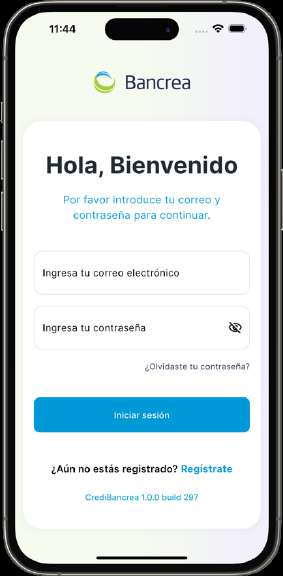
Hola, Bienvenido · LoginView…/login/view/login_view.dartDatos y acciones
Logo Bancrea en el encabezado (AuthTemplate, assets/logos/logo_bancrea.png)
Título: 'Hola, Bienvenido'
Subtítulo: 'Por favor introduce tu correo y contraseña para continuar.'
Campo de texto 'Ingresa tu correo electrónico' (vacío en la captura; CustomTextField.email())
Campo de texto 'Ingresa tu contraseña' con icono de ojo para mostrar/ocultar (CustomTextFieldPassword; validator: '* Este campo es obligatorio para continuar')
Link alineado a la derecha: '¿Olvidaste tu contraseña?'
Botón azul 'Iniciar sesión'
Texto: '¿Aún no estás registrado? Regístrate' (Regístrate en azul)
Comportamiento no visible: detección de root/jailbreak que reemplaza toda la pantalla por el aviso 'Se detectó un sistema operativo modificado…' (login_view.dart:155-173) y chequeo de versión contra servidor al abrir (_checkFromServer)
'Iniciar sesión' -> UserController.login(email, password); al evento SessionAction.authDone hace pushReplacementNamed('/homeBase') (login_view.dart:138-141, 213-222)
'¿Olvidaste tu contraseña?' -> pushNamed('/forgotPasswordView') (login_view.dart:205)
'¿Aún no estás registrado? Regístrate' -> pushNamed('/loginValidationView') (login_view.dart:229); si _lockApp fuerza actualización de tienda
Texto de versión (botón oculto) -> re-chequea versión en servidor; al 15º tap muestra toast 'CAMHEA: versión build' (login_view.dart:63-71, 253-262)
2
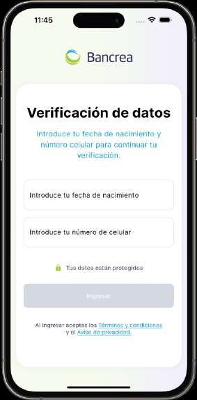
Verificación de datos · LoginValidationView…/login/view/login_validation_view.dartDatos y acciones
Logo Bancrea en el encabezado (AuthTemplate)
Título: 'Verificación de datos'
Subtítulo: 'Introduce tu fecha de nacimiento y número celular para continuar tu verificación.'
Campo 'Introduce tu fecha de nacimiento' (vacío; CustomTextField.date())
Campo 'Introduce tu número de celular' (vacío; CustomTextField.phoneNumber())
Fila con candado verde (Icons.lock, 0xffA4CD39) y texto 'Tus datos están protegidos'
Botón 'Ingresar' deshabilitado/gris en la captura: solo se habilita con fecha >= 10 caracteres y celular >= 10 dígitos (login_validation_view.dart:172-178)
Leyenda legal: 'Al ingresar aceptas los Términos y condiciones y el Aviso de privacidad.' con ambos links subrayados en azul
'Términos y condiciones' -> descarga el PDF vía RequestCollaboratorController.getTermsAndConditions y abre PreviewPDF (login_validation_view.dart:65-87)
'Aviso de privacidad.' -> descarga el PDF vía getPrivacityDocument y abre PreviewPDF (login_validation_view.dart:89-111)
3
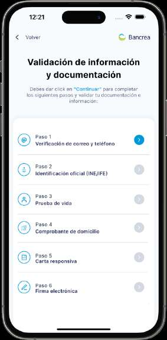
Validación de información y documentación · ValidationDocumentationView (tiles: KycStepTile)…/validation_documentation/view/validation_documentation_view.dartDatos y acciones
AppBar con '< Volver' a la izquierda y logo Bancrea a la derecha (AppBarBancrea withImage)
Título: 'Validación de información y documentación'
Instrucción: 'Debes dar click en "Continuar" para completar los siguientes pasos y validar tu documentación e información:' ('Continuar' resaltado en azul)
Card blanca con 6 tiles (rama colaborador de calculateSteps, kyc.controller.dart:97-109): Paso 1 'Verificación de correo y teléfono' (icono @, chip circular azul con chevron = habilitado), Paso 2 'Identificación oficial (INE/IFE)' (chip gris = bloqueado), Paso 3 'Prueba de vida' (gris), Paso 4 'Comprobante de domicilio' (gris), Paso 5 'Carta Responsiva' (gris), Paso 6 'Firma electrónica' (gris)
Estados de chip según KycStepTile: rojo con '!' = error, verde con check = completado, azul con chevron = habilitado, gris = deshabilitado (kyc_step_tile.dart:121-144)
Tiles no habilitados/completados: tap ignorado; con varios pasos en error muestra toast 'Complete pasos anteriores' (kyc_step_tile.dart:58-97)
'Volver' (AppBar) -> Navigator.pop
Al completarse todos los pasos (evento StepsCompleted) -> pushReplacementNamed('/requestApprovedView') (validation_documentation_view.dart:126-135)
Coincide con la rama colaborador actual (sin bankDataValidation/creditConditions). Única diferencia mínima: la captura parece mostrar 'Carta responsiva' y el enum dice 'Carta Responsiva' (kyc_step.dart:40) — probable variación tipográfica del código de la época o de la resolución de la captura.
4
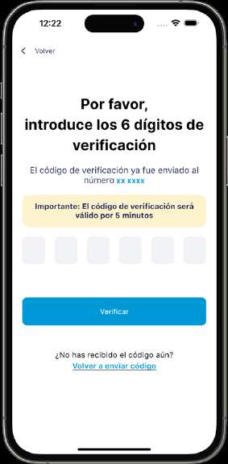
Por favor, introduce los 6 dígitos de verificación · PhoneVerificationView…/validation_documentation/phone_email/phone_verification_view.dartDatos y acciones
AppBar con '< Volver' (AppBarBancrea)
Título: 'Por favor, introduce los 6 dígitos de verificación'
Descripción: 'El código de verificación ya fue enviado al número' + resaltado azul ' xx xxxx' (en el código se concatenan los últimos 4 dígitos reales del teléfono: phone_verification_view.dart:221)
Banner amarillo: 'Importante: El código de verificación será válido por 5 minutos' (NoticiesWidget().important(), notices_widget.dart:15)
6 casillas de PIN grises (PinCodeTextField length: 6, fondo 0xffF2F3F7), vacías en la captura
Botón azul 'Verificar' (cambia a 'Verificando...' y se deshabilita mientras verifica)
Texto: '¿No has recibido el código aún?' con link 'Volver a enviar código' (title_views_widget.dart:123-129)
'Verificar' -> primero valida permiso/GPS de ubicación (con alertas 'Sin acceso a ubicación'/'Ubicación desactivada' que abren ajustes); luego verifyCodeOTPRequestFind(código, OTP.phone); si es solicitud de crédito -> kycController.completeOtp(); si no -> pushReplacementNamed('/enterDigitsEmailVerificationView') (phone_verification_view.dart:149-194, 260-285)
'Volver a enviar código' -> resendOTPCode(teléfono, OTP.phone) (phone_verification_view.dart:196-203)
'Volver' (AppBar) -> Navigator.pop; además la vista se auto-cierra (pop) al recibir StepCompleted/StepErrored del paso phoneAndEmail (phone_verification_view.dart:112-134)
En la captura tras 'xx xxxx' no se ven los últimos 4 dígitos que el código sí pinta ('xx xxxx $_lastFourDigitsOfPhoneNumber', phone_verification_view.dart:221) — presumiblemente redactados en el PDF de QA, no un cambio de código.
5
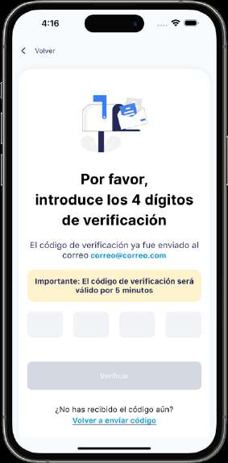
Por favor, introduce los 4 dígitos de verificación · EmailVerificationView…/validation_documentation/phone_email/email_verification_view.dartDatos y acciones
AppBar con '< Volver' (BaseTemplate/AppBarBancrea)
Ilustración de buzón de correo (assets/illustrations/digits_verifications.png, email_verification_view.dart:139-142)
Título: 'Por favor, introduce los 4 dígitos de verificación'
Descripción: 'El código de verificación ya fue enviado al correo' + correo resaltado en azul (en la captura: 'correo@correo.com')
Banner amarillo: 'Importante: El código de verificación será válido por 5 minutos'
4 casillas de PIN grises (PinCodeTextField length: 4), vacías en la captura
Botón 'Verificar' gris/deshabilitado en la captura: solo se habilita con 4 dígitos escritos (email_verification_view.dart:184-197)
Texto: '¿No has recibido el código aún?' con link 'Volver a enviar código'
'Verificar' -> verifyCodeOTPRequestFind(código, OTP.email); si emailVerified -> kycController.completeOtp(); la vista se cierra al recibir StepCompleted/StepErrored del paso phoneAndEmail (email_verification_view.dart:74-112, 47-69)
'Volver a enviar código' -> resendOTPCode(correo, OTP.email) (email_verification_view.dart:120-127)
'Volver' (AppBar) -> Navigator.pop
La captura muestra el correo completo 'correo@correo.com'; el código actual lo enmascara con _maskEmail (primeros 3 caracteres + asteriscos, y además omite la '@' del dominio: 'cor***correo.com') en email_verification_view.dart:114-118,148. Además esta pantalla solo se alcanza hoy en la rama NO-solicitud-de-crédito: en solicitud de crédito el teléfono verificado llama completeOtp directo y salta el correo (phone_verification_view.dart:176-193), consistente con que el PDF solo la liste en el Flujo 0.
6
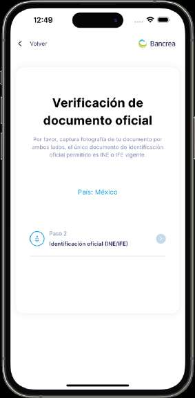
Verificación de documento oficial · VerificationOfficialDocumentView…/validation_documentation/ine/view/verification_official_document_view.dartDatos y acciones
AppBar con '< Volver' y logo Bancrea (AppBarBancrea withImage)
Card blanca con título: 'Verificación de documento oficial'
Texto: 'Por favor, captura fotografía de tu documento por ambos lados, el único documento de identificación oficial permitido es INE o IFE vigente.'
Texto azul centrado: 'País: México' (fijo en el código, verification_official_document_view.dart:111-114)
Tile con icono circular de documento: 'Paso 2' / 'Identificación oficial (INE/IFE)' y chevron circular gris-azulado (0xffC4DAEA) a la derecha
Tap en el tile 'Paso 2 – Identificación oficial (INE/IFE)' -> KycController.startIneScanning(): lanza la sección del SDK Incode para el anverso de la INE (verification_official_document_view.dart:120-127 -> kyc.controller.dart:444-479)
'Volver' (AppBar) -> Navigator.pop
Auto-cierre: al recibir StepCompleted o StepErrored del paso KycStep.id la vista hace Navigator.pop (verification_official_document_view.dart:29-58)
7
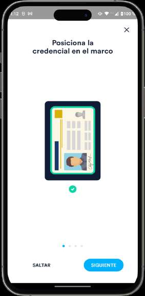
SDK IncodePosiciona la credencial en el marco · SDK Incode – tutorial de IdScan (página 1 de 4)components/kyc/kyc.controller.dart (startIneScanning:444-479, OnboardingFlowConfiguration()..addIdScan(idType: id, scanStep: front, showIdTypeChooser: false), flowTag 'frontIne'; lanzado desde verification_official_document_view.dart:120-127)Datos y acciones
Pantalla nativa del SDK Incode (no hay view Flutter propio en el repo)
Título: 'Posiciona la credencial en el marco'
Ilustración de una credencial dentro de un marco con palomita verde debajo
Indicador de carrusel con 4 puntos (primero activo)
Botón 'X' de cierre arriba a la derecha (habilitado por IncodeOnboardingSdk.showCloseButton(allowUserToCancel: true), kyc.controller.dart:62)
Textos en español por IncodeOnboardingSdk.setLocalizationLanguage(language: 'es') (kyc.controller.dart:61)
'SIGUIENTE' -> avanza a la página 2 del tutorial del SDK
'SALTAR' -> omite el tutorial y va directo a la cámara de captura del anverso
'X' -> cancela la sección; el flujo marca error del paso INE (_errorStep(step: KycStep.id)) vía onOnboardingSectionCompleted con anverso no válido (kyc.controller.dart:466-477)
8
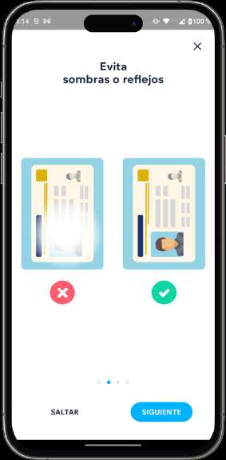
SDK IncodeEvita sombras o reflejos · SDK Incode – tutorial de IdScan (página 2 de 4)components/kyc/kyc.controller.dart (startIneScanning:444-479, sección addIdScan front 'frontIne'; lanzado desde verification_official_document_view.dart:120-127)Datos y acciones
Pantalla nativa del SDK Incode
Título: 'Evita sombras o reflejos'
Comparativa de dos credenciales: izquierda con reflejo de luz y tache rojo (X), derecha correcta con palomita verde
Indicador de carrusel con 4 puntos (segundo activo)
Botón 'X' de cierre arriba a la derecha
'SIGUIENTE' -> página 3 del tutorial
'SALTAR' -> salta a la cámara de captura del anverso
'X' -> cancela la sección (termina en _errorStep del paso KycStep.id)
9
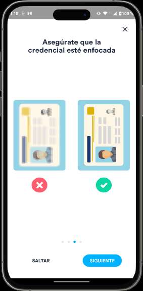
SDK IncodeAsegúrate que la credencial esté enfocada · SDK Incode – tutorial de IdScan (página 3 de 4)components/kyc/kyc.controller.dart (startIneScanning:444-479, sección addIdScan front 'frontIne'; lanzado desde verification_official_document_view.dart:120-127)Datos y acciones
Pantalla nativa del SDK Incode
Título: 'Asegúrate que la credencial esté enfocada'
Comparativa de dos credenciales: izquierda borrosa/desenfocada con tache rojo, derecha nítida con palomita verde
Indicador de carrusel con 4 puntos (tercero activo)
Botón 'X' de cierre arriba a la derecha
'SIGUIENTE' -> página 4 del tutorial
'SALTAR' -> salta a la cámara de captura del anverso
'X' -> cancela la sección (termina en _errorStep del paso KycStep.id)
10
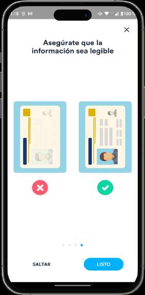
SDK IncodeAsegúrate que la información sea legible · SDK Incode – tutorial de IdScan (página 4 de 4)components/kyc/kyc.controller.dart (startIneScanning:444-479, sección addIdScan front 'frontIne'; lanzado desde verification_official_document_view.dart:120-127)Datos y acciones
Pantalla nativa del SDK Incode
Título: 'Asegúrate que la información sea legible'
Comparativa de dos credenciales: izquierda con datos ilegibles/lavados y tache rojo, derecha legible con palomita verde
Indicador de carrusel con 4 puntos (cuarto activo)
Botón 'X' de cierre arriba a la derecha
'LISTO' (sustituye a SIGUIENTE en la última página) -> abre la cámara de captura del anverso de la INE
'SALTAR' -> mismo destino (cámara de captura)
'X' -> cancela la sección (termina en _errorStep del paso KycStep.id)
11
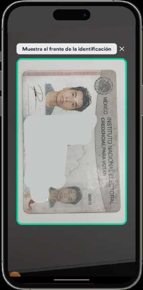
SDK IncodeMuestra el frente de la identificación · SDK Incode – cámara de captura de anverso (IdScan front)components/kyc/kyc.controller.dart (startIneScanning:444-479, sección addIdScan front 'frontIne'; resultado en onIdFrontCompleted:462-465; lanzado desde verification_official_document_view.dart:120-127)Datos y acciones
Pantalla nativa de cámara del SDK Incode
Chip de instrucción superior: 'Muestra el frente de la identificación'
Vista en vivo de la credencial INE (anverso, 'INSTITUTO NACIONAL ELECTORAL / CREDENCIAL PARA VOTAR') dentro de un marco con borde verde que indica detección correcta
La foto se toma automáticamente al encuadrar (sin botón de obturador visible)
Botón 'X' de cierre arriba a la derecha
Captura automática al detectar la credencial -> onIdFrontCompleted evalúa scanStatus; si es ok, al terminar la sección se encadena _scanBackIne() para el reverso; si no, _errorStep(step: KycStep.id) (kyc.controller.dart:462-477)
'X' -> cancela la sección (paso INE queda en error)
12
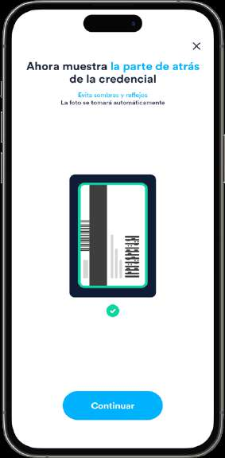
SDK IncodeAhora muestra la parte de atrás de la credencial · SDK Incode – intro de captura de reverso (IdScan back)components/kyc/kyc.controller.dart (_scanBackIne:481-516, OnboardingFlowConfiguration()..addIdScan(scanStep: back), flowTag 'backIne'; se encadena automáticamente tras el anverso válido en startIneScanning:471-473)Datos y acciones
Pantalla nativa del SDK Incode
Título: 'Ahora muestra la parte de atrás de la credencial' ('la parte de atrás' resaltado en azul)
Subtítulo azul: 'Evita sombras y reflejos'
Texto: 'La foto se tomará automáticamente'
Ilustración del reverso de la credencial (código de barras y zona MRZ) con palomita verde debajo
Botón 'X' de cierre arriba a la derecha
'Continuar' -> abre la cámara de captura del reverso; onIdBackCompleted evalúa scanStatus y al terminar la sección: ok -> _processIne() (procesamiento/OCR de la INE), fallo -> _errorStep(step: KycStep.id) (kyc.controller.dart:499-514)
'X' -> cancela la sección (paso INE queda en error)
Coincide con el flujo Incode vigente. Nota de contexto: en el PDF esta pantalla es 'ine (6)' en Flujo 0 pero 'ine (7)' en Flujo 2, lo que sugiere una pantalla intermedia extra no capturada en el flujo cliente; además la cadena legacy NebuIA de captura de INE (CaptureINEFrontView/CaptureINEBackView, rutas '/CaptureINEFrontView' y '/CaptureINEBackView' en router.dart:147-156) sigue registrada pero sin ningún caller, es inalcanzable hoy.
13
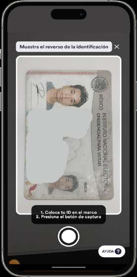
SDK IncodeMuestra el reverso de la identificación · Incode Omni SDK — IdScan reverso (OnboardingFlowConfiguration..addIdScan(scanStep: ScanStepType.back), flowTag 'backIne')components/kyc/kyc.controller.dart (_scanBackIne, líneas 481-516; cadena iniciada desde verification_official_document_view.dart:126 con startIneScanning)Datos y acciones
Chip superior de instrucción: "Muestra el reverso de la identificación"
Botón X de cierre junto al chip (habilitado por IncodeOnboardingSdk.showCloseButton(allowUserToCancel: true), kyc.controller.dart:62)
Visor de cámara a pantalla completa con la credencial INE dentro del marco; en la captura el usuario muestra el ANVERSO (se ve 'INSTITUTO NACIONAL ELECTORAL / CREDENCIAL PARA VOTAR' con foto) aunque se pide el reverso — acción del tester, no del código
Chip inferior de pasos del modo manual: "1. Coloca tu ID en el marco 2. Presiona el botón de captura"
Botón circular blanco de obturador (captura manual)
Botón flotante "AYUDA ?" abajo a la derecha
Obturador: captura la foto del reverso; si scanStatus == IdValidationStatus.ok el controller encadena el procesamiento de la INE (_processIne, kyc.controller.dart:508-510); si falla, el paso 'Identificación oficial' queda en error (_errorStep(KycStep.id), kyc.controller.dart:512)
AYUDA: abre la pantalla de consejos del SDK 'Errores comunes' (ver xref 117)
X: cancela la sección del SDK; la sección termina sin éxito y el paso id queda en error, regresando VerificationOfficialDocumentView a la lista de pasos KYC (verification_official_document_view.dart:46-58)
14
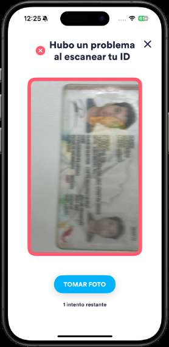
SDK IncodeHubo un problema al escanear tu ID · Incode Omni SDK — IdScan reintento tras captura fallida (flowTags 'frontIne'/'backIne')components/kyc/kyc.controller.dart (startIneScanning:444-479 / _scanBackIne:481-516 — pantalla de reintento del addIdScan)Datos y acciones
Título con icono rojo de error: "Hubo un problema al escanear tu ID"
Botón X de cierre arriba a la derecha
Vista previa de la foto capturada (credencial borrosa/movida) enmarcada en rojo
Botón azul "TOMAR FOTO"
Texto contador: "1 intento restante"
Status bar iOS (12:25)
TOMAR FOTO: reintenta la captura del ID dentro de la misma sección addIdScan del SDK
X: cancela la sección; onOnboardingSectionCompleted llega con wasSuccessful=false y el paso id queda en error (_errorStep(KycStep.id), kyc.controller.dart:471-477 anverso / 508-514 reverso)
15
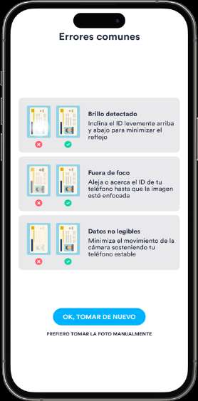
SDK IncodeErrores comunes · Incode Omni SDK — ayuda 'Errores comunes' del IdScancomponents/kyc/kyc.controller.dart (pantalla de ayuda del addIdScan de startIneScanning/_scanBackIne, líneas 444-516; se abre con el botón AYUDA o tras fallos de captura)Datos y acciones
Título "Errores comunes"
Fila 1: par de miniaturas incorrecta (✗ roja) / correcta (✓ verde) + "Brillo detectado — Inclina el ID levemente arriba y abajo para minimizar el reflejo"
Fila 2: miniaturas ✗/✓ + "Fuera de foco — Aleja o acerca el ID de tu teléfono hasta que la imagen esté enfocada"
Fila 3: miniaturas ✗/✓ + "Datos no legibles — Minimiza el movimiento de la cámara sosteniendo tu teléfono estable"
Botón azul "OK, TOMAR DE NUEVO": regresa al visor de captura del ID (autocaptura)
Link "PREFIERO TOMAR LA FOTO MANUALMENTE": cambia al modo de captura manual con obturador (como en xref 114)
La etiqueta del PDF difiere entre flujos ('error' en Flujo 0 seq 15, 'ayuda' en Flujo 2 seq 100) pero es la misma pantalla de ayuda del SDK Incode; coincide con el flujo actual.
16
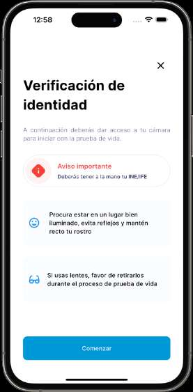
Verificación de identidad · LifeTestView…/validation_documentation/life_test/life_test_view.dartDatos y acciones
Botón X de cierre arriba a la derecha (life_test_view.dart:68-79)
Título "Verificación de identidad" (life_test_view.dart:85, en código 'Verificación de\nidentidad')
Subtítulo gris: "A continuación deberás dar acceso a tu cámara para iniciar con la prueba de vida." (life_test_view.dart:94)
Tarjeta píldora con icono rojo de precaución: título rojo "Aviso importante" (:134) y texto "Deberás tener a la mano tu INE/IFE" (:143)
Tarjeta gris con icono de carita azul: "Procura estar en un lugar bien iluminado, evita reflejos y mantén recto tu rostro" (:172)
Tarjeta gris con icono de lentes azul: "Si usas lentes, favor de retirarlos durante el proceso de prueba de vida" (:200)
Botón azul "Comenzar" al pie (:214)
Status bar iOS (12:58)
Comenzar: KycController.startLivenessDetection() — abre la sección de selfie del SDK Incode (life_test_view.dart:220-221; kyc.controller.dart:961-996)
X: Navigator.pop, regresa a la lista de pasos del KYC (life_test_view.dart:76)
Automática: al recibir StepCompleted o StepErrored del paso lifeTest la vista hace pop sola (life_test_view.dart:24-53)
La pantalla coincide con el código actual. Solo la etiqueta del PDF en Flujo 2 (seq 101, 'servicio incode ine (error)') está mal: no es una pantalla del SDK, es la vista nativa LifeTestView (ruta AppRoute.lifeTest, router.dart:157).
17
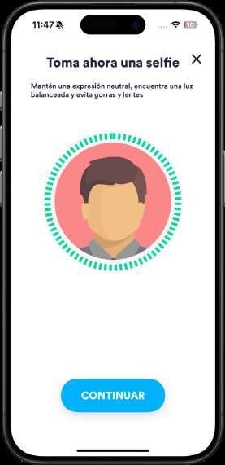
SDK IncodeToma ahora una selfie · Incode Omni SDK — SelfieScan intro (OnboardingFlowConfiguration..addSelfieScan(), flowTag 'selfieScan')components/kyc/kyc.controller.dart (startLivenessDetection, líneas 961-996; lanzada desde el botón Comenzar de life_test_view.dart:220)Datos y acciones
Título "Toma ahora una selfie" con botón X de cierre
Subtítulo: "Mantén una expresión neutral, encuentra una luz balanceada y evita gorras y lentes"
Ilustración de avatar dentro de un círculo con anillo punteado verde
Botón azul "CONTINUAR"
Status bar iOS (11:47)
CONTINUAR: abre el visor de cámara frontal de la misma sección addSelfieScan (pantalla 'Prepárate...', xref 135)
X: cancela la sección; sin selfie válida el paso lifeTest queda en error (_errorStep(KycStep.lifeTest), kyc.controller.dart:983-993) y LifeTestView hace pop (life_test_view.dart:41-53)
La etiqueta del PDF en Flujo 2 (seq 102, 'life_test_view') está mal: esta pantalla es la intro de selfie del SDK Incode, no la vista nativa; LifeTestView es la pantalla anterior (xref 126).
18
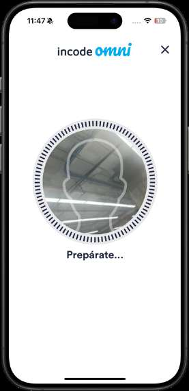
SDK Incodeincode omni — Prepárate... · Incode Omni SDK — SelfieScan capturacomponents/kyc/kyc.controller.dart (startLivenessDetection, líneas 961-996, sección 'selfieScan')Datos y acciones
Encabezado con logo "incode omni" y botón X
Visor circular de cámara frontal con silueta punteada de cabeza para encuadrar el rostro
Texto "Prepárate..."
Status bar iOS (11:47)
Automática: el SDK autocaptura la selfie cuando el rostro encaja en la silueta; al terminar reporta spoofAttempt (onSelfieScanCompleted, kyc.controller.dart:977-981) — solo spoofAttempt == false cuenta como éxito
X: cancela la sección → _errorStep(KycStep.lifeTest) (kyc.controller.dart:970-975, 991-993)
19
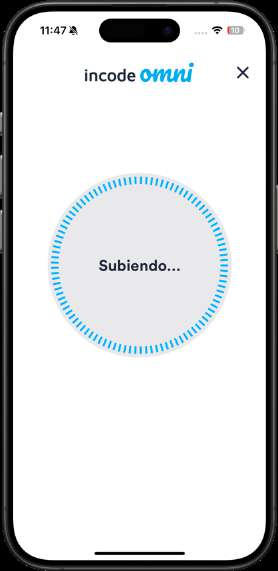
SDK Incodeincode omni — Subiendo... · Incode Omni SDK — SelfieScan subida de la selfiecomponents/kyc/kyc.controller.dart (startLivenessDetection, líneas 961-996, sección 'selfieScan')Datos y acciones
Encabezado con logo "incode omni" y botón X
Círculo con anillo azul animado y texto central "Subiendo..." (subida de la selfie a los servidores de Incode)
Status bar iOS (11:47)
Sin acciones de usuario: pantalla de progreso; al cerrar la sección con selfie válida el controller encadena la comparación facial (_determineFaceMatch, kyc.controller.dart:988-990)
X: cancela la sección → _errorStep(KycStep.lifeTest)
20
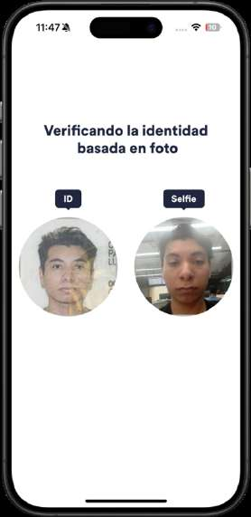
SDK IncodeVerificando la identidad basada en foto · Incode Omni SDK — FaceMatch (OnboardingFlowConfiguration..addFaceMatch(), flowTag 'faceMatch')components/kyc/kyc.controller.dart (_determineFaceMatch, líneas 998-1076)Datos y acciones
Título "Verificando la identidad basada en foto"
Chip oscuro "ID" sobre foto circular del rostro extraído de la credencial INE
Chip oscuro "Selfie" sobre foto circular de la selfie recién capturada
Status bar iOS (11:47)
Sin acciones de usuario: comparación automática; el éxito exige isFaceMatched y, si es usuario existente, isNameMatched (onFaceMatchCompleted, kyc.controller.dart:1014-1027); si falla, _errorStep(KycStep.lifeTest) (kyc.controller.dart:1071-1072)
21
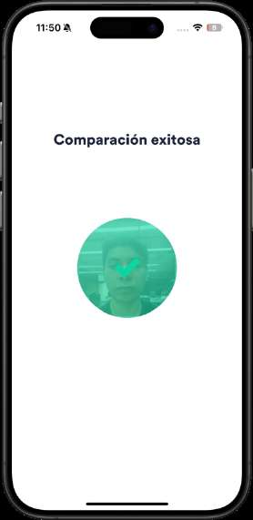
SDK IncodeComparación exitosa · Incode Omni SDK — FaceMatch resultado exitosocomponents/kyc/kyc.controller.dart (_determineFaceMatch, líneas 998-1076, resultado de la sección 'faceMatch')Datos y acciones
Título "Comparación exitosa"
Selfie circular con velo verde y palomita blanca al centro
Status bar iOS (11:50)
Sin acciones de usuario: al cerrar la sección con éxito el controller consulta el score facial (getUserScore, kyc.controller.dart:1038-1048); si es ok encadena la validación con gobierno (_checkGovernmentValidation, kyc.controller.dart:1051, con posible bypass evaluado en backend, líneas 725-793), que al aprobar sube el documento 'face' y habilita el paso Comprobante de domicilio (appendDocumentAndSetStep, líneas 757-758); si el score falla, muestra "Puntuacion de prueba de vida insatisfactoria" y el paso lifeTest queda en error (líneas 1053-1061)
22
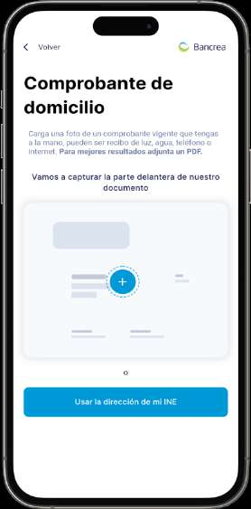
Comprobante de domicilio · ProofAddressView (sección inicial _UploadProofView)…/validation_documentation/proof_address/proof_address_view.dartDatos y acciones
AppBar blanca con back "‹ Volver" a la izquierda y logo Bancrea a la derecha (AppBarBancrea(withImage: true), proof_address_view.dart:94; appbar_bancrea.dart:40-58)
Título "Comprobante de domicilio" (proof_address_view.dart:105-107)
Párrafo gris: "Carga una foto de un comprobante vigente que tengas a la mano, pueden ser recibo de luz, agua, teléfono o internet." con la frase final en negrita " Para mejores resultados adjunta un PDF." (proof_address_view.dart:173-180)
Subtítulo: "Vamos a capturar la parte delantera de nuestro documento" (:187)
Tarjeta con la ilustración 'assets/illustrations/comprobante.png' (placeholder de documento con botón "+" azul al centro), tocable (:196-215)
Separador "o" entre la tarjeta y el botón (:119)
Botón azul "Usar la dirección de mi INE" (:121-131)
Tap en la ilustración: KycController.scanAddressProof() abre el SDK Incode con addDocumentScan(DocumentType.addressStatement) (proof_address_view.dart:206-213; kyc.controller.dart:1110-1117) — lleva a la pantalla de xref 154
"Usar la dirección de mi INE": markToExtractAddressFromId(true) y muestra en esta misma pantalla el formulario de confirmación _AddressFormView (Calle, Nº Exterior, Nº Interior, Colonia, Municipio, C.P., Estado) (proof_address_view.dart:121-131)
"Volver": Navigator.pop (appbar_bancrea.dart:41)
Automática: tras escanear con éxito se emite AddressProofScanned y aparece el formulario de confirmación (:69-78); StepCompleted/StepErrored de addressProof hacen pop a los pasos KYC (:41-67)
23
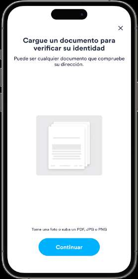
SDK IncodeCargue un documento para verificar su identidad · Incode Omni SDK — DocumentScan (OnboardingFlowConfiguration..addDocumentScan(documentType: DocumentType.addressStatement), flowTag 'addressProof')components/kyc/kyc.controller.dart (scanAddressProof, líneas 1110-1158; lanzada desde el tap en la ilustración de proof_address_view.dart:206-213)Datos y acciones
Título "Cargue un documento para verificar su identidad" con botón X
Subtítulo: "Puede ser cualquier documento que compruebe su dirección."
Ilustración de pila de documentos en gris
Texto al pie: "Tome una foto o suba un PDF, JPG o PNG"
Botón azul "Continuar"
Continuar: abre la hoja nativa de selección de origen (Tomar Foto / Librería / Archivos, xref 157)
X: cancela la sección → _errorStep(KycStep.addressProof) vía onError (kyc.controller.dart:1119-1125) y ProofAddressView hace pop (proof_address_view.dart:55-67)
Automática tras capturar/subir con éxito: marca extractAddressFromId=false, registra el documento 'address' vía KYCService.appendDocument y emite AddressProofScanned para mostrar el formulario de confirmación de dirección (kyc.controller.dart:1126-1155; proof_address_view.dart:69-78)
24
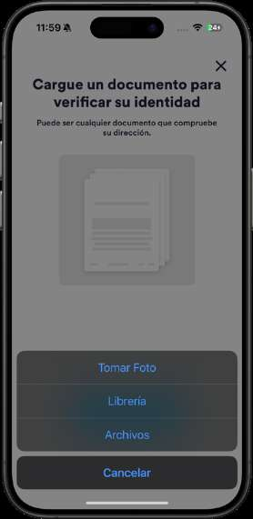
SDK IncodeCargue un documento para verificar su identidad — hoja "Tomar Foto / Librería / Archivos" · Incode Omni SDK — hoja de acciones nativa iOS (UIAlertController) del DocumentScancomponents/kyc/kyc.controller.dart (scanAddressProof, líneas 1110-1158 — hoja de acciones nativa de iOS presentada por el SDK sobre su pantalla de documento)Datos y acciones
Fondo atenuado con la pantalla del SDK "Cargue un documento para verificar su identidad" (la de xref 154) detrás
Hoja de acciones nativa de iOS con tres opciones en azul: "Tomar Foto", "Librería", "Archivos"
Botón "Cancelar" en bloque separado al pie
Status bar iOS (11:59, batería 24%)
Tomar Foto: abre la cámara para fotografiar el comprobante de domicilio
Librería: abre la fototeca de iOS para elegir una imagen existente
Archivos: abre el picker del sistema (app Archivos) para subir un PDF/JPG/PNG
Cancelar: cierra la hoja y regresa a la pantalla del SDK (xref 154)
25
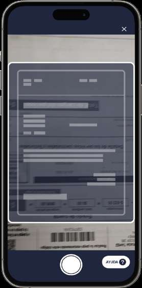
SDK Incode(sin título — cámara con marco de encuadre; único texto visible: botón "AYUDA ?") · Incode SDK — DocumentScan (DocumentType.addressStatement, flowTag 'addressProof')components/kyc/kyc.controller.dart (scanAddressProof, líneas 1110-1158; lo dispara el tap en la ilustración de …/validation_documentation/proof_address/proof_address_view.dart:206-215)Datos y acciones
Vista previa de cámara a pantalla completa con un recibo/comprobante de servicios encuadrado
Marco blanco redondeado de encuadre del documento superpuesto a la cámara
Botón X (cerrar) arriba a la derecha — habilitado por IncodeOnboardingSdk.showCloseButton(allowUserToCancel: true) en kyc.controller.dart:62
Botón obturador circular blanco al centro inferior
Botón pastilla "AYUDA ?" abajo a la derecha (ayuda del SDK)
Obturador → captura la foto del comprobante y pasa a la pantalla de revisión del SDK ("Revisa tu foto")
X (cerrar) → cancela la sección del SDK; el onError de scanAddressProof marca el paso addressProof en error (kyc.controller.dart:1119-1125) y ProofAddressView hace pop a la lista de pasos KYC (proof_address_view.dart:55-67)
AYUDA ? → overlay de ayuda propio del SDK de Incode
26
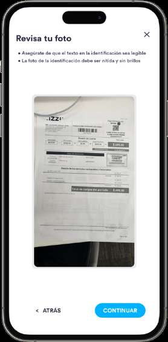
SDK IncodeRevisa tu foto · Incode SDK — DocumentScan, pantalla de revisión de la capturacomponents/kyc/kyc.controller.dart (scanAddressProof, líneas 1110-1158; sección DocumentScan addressStatement)Datos y acciones
Título "Revisa tu foto"
Bullet: "Asegúrate de que el texto en la identificación sea legible"
Bullet: "La foto de la identificación debe ser nítida y sin brillos"
Previsualización de la foto capturada (recibo de servicios izzi con código de barras, montos $499.00 y desglose de cargos)
Botón X (cerrar) arriba a la derecha
"< ATRÁS" → descarta la foto y regresa a la cámara del SDK para recapturar
"CONTINUAR" → sube el documento a Incode (pantalla "Subiendo..."); al completar la sección el controller registra el documento address y emite AddressProofScanned (kyc.controller.dart:1126-1155)
X → cancela la sección; el paso addressProof queda en error y se regresa a los pasos KYC
El copy del SDK habla de "la identificación" aunque el documento capturado es un comprobante de domicilio: son cadenas genéricas de la localización 'es' del SDK de Incode, no existen en el repo (solo se configura el idioma en kyc.controller.dart:61). No es corregible desde este código.
27
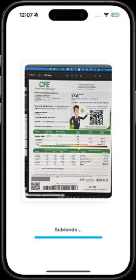
SDK IncodeSubiendo... · Incode SDK — DocumentScan, pantalla de subida del documentocomponents/kyc/kyc.controller.dart (scanAddressProof, líneas 1110-1158; sección DocumentScan addressStatement)Datos y acciones
Imagen completa del comprobante capturado (recibo CFE con QR, total $748, tablas de consumo y código de barras)
Texto "Subiendo..."
Barra de progreso azul bajo el texto
Sin acciones del usuario: al terminar la subida se dispara onOnboardingSectionCompleted → markToExtractAddressFromId(false) + appendDocument(DOCUMENTS.address) (kyc.controller.dart:1126-1155); en éxito emite AddressProofScanned y ProofAddressView muestra el formulario de confirmación (proof_address_view.dart:69-78); en fallo muestra mensaje de error
28
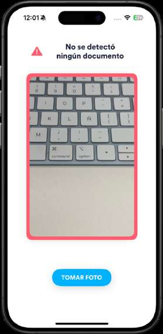
SDK IncodeNo se detectó ningún documento · Incode SDK — DocumentScan, fallback de captura manualcomponents/kyc/kyc.controller.dart (scanAddressProof, líneas 1110-1158; sección DocumentScan addressStatement)Datos y acciones
Icono de alerta roja junto al mensaje "No se detectó ningún documento"
Marco rojo alrededor del área de encuadre (en la vista previa se ve un teclado, sin documento)
Botón "TOMAR FOTO" (captura manual cuando la autodetección del SDK falla)
"TOMAR FOTO" → captura manual de la imagen encuadrada y pasa a la pantalla de revisión ("Revisa tu foto") del SDK
En el PDF el flujo 0 la etiqueta "(error)" y el flujo 2 "(6)": no es una pantalla de error terminal sino el fallback de captura manual del SDK cuando no autodetecta documento; el flujo del código sigue vivo tras ella.
29
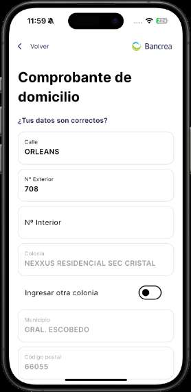
Comprobante de domicilio — ¿Tus datos son correctos? · ProofAddressView (_AddressFormView)…/validation_documentation/proof_address/proof_address_view.dartDatos y acciones
AppBar con "< Volver" y logo Bancrea (AppBarBancrea withImage: true, proof_address_view.dart:94)
Encabezado "Comprobante de domicilio" (línea 105)
Pregunta "¿Tus datos son correctos?" (línea 545)
Campo "Calle" = ORLEANS (editable)
Campo "Nº Exterior" = 708 (editable)
Campo "Nº Interior" = vacío (editable)
Campo "Colonia" = NEXXUS RESIDENCIAL SEC CRISTAL (texto editable; cambia a dropdown del catálogo si el switch se activa o si no hubo match de colonia)
Switch "Ingresar otra colonia" apagado (línea 633-647)
Campo "Municipio" = GRAL. ESCOBEDO (deshabilitado, enabled: false, línea 649-659)
Campo "Código postal" = 66055 (deshabilitado, línea 661-671)
Switch "Ingresar otra colonia" → reemplaza el campo Colonia por un CustomDropdownButtonFormField con las colonias del C.P. validadas contra el catálogo del backend (líneas 587-631)
"< Volver" del AppBar → Navigator.pop hacia la pantalla previa de comprobante de domicilio
Botón "Continuar" (visible al hacer scroll, ver captura x179) → _updateAddress
30
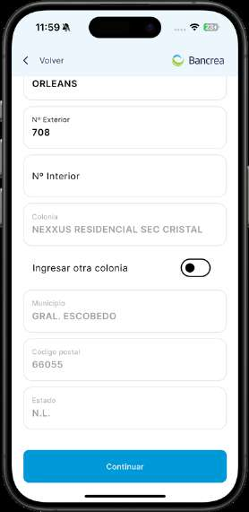
(mismo formulario desplazado; encabezado visible: "< Volver" + logo Bancrea) · ProofAddressView (_AddressFormView)…/validation_documentation/proof_address/proof_address_view.dartDatos y acciones
Campo "Calle" = ORLEANS (parcialmente visible arriba)
Campo "Nº Exterior" = 708
Campo "Nº Interior" = vacío
Campo "Colonia" = NEXXUS RESIDENCIAL SEC CRISTAL
Switch "Ingresar otra colonia" apagado
Campo "Municipio" = GRAL. ESCOBEDO (deshabilitado)
Campo "Código postal" = 66055 (deshabilitado)
Campo "Estado" = N.L. (deshabilitado, líneas 673-683)
Botón azul "Continuar" al pie (línea 685-691; muestra "En proceso..." y se deshabilita mientras envía)
"Continuar" → _updateAddress (líneas 460-513): valida localmente calle y nº exterior (mensajes "La calle es obligatoria" / "Ingresa un número exterior"), llama KycController.confirmAddress; al completarse el paso addressProof el listener StepCompleted hace Navigator.pop de regreso a la lista de pasos KYC (líneas 41-53); si falla, StepErrored también hace pop (líneas 55-67)
"< Volver" del AppBar → Navigator.pop
31
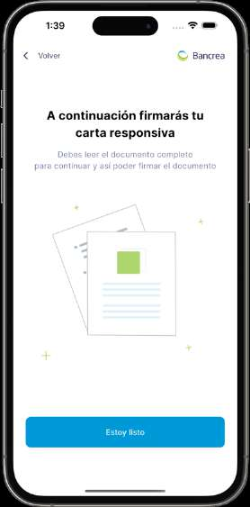
A continuación firmarás tu carta responsiva · ResponseLetterWarningView…/validation_documentation/response_letter/response_letter_warning_view.dartDatos y acciones
AppBar con "< Volver" y logo Bancrea
Título "A continuación firmarás tu carta responsiva" (línea 22)
Subtítulo "Debes leer el documento completo para continuar y así poder firmar el documento" (línea 34)
Ilustración de documentos (assets/illustrations/carta_reponsiva.png, línea 44)
"< Volver" del AppBar → Navigator.pop a la lista de pasos KYC
32
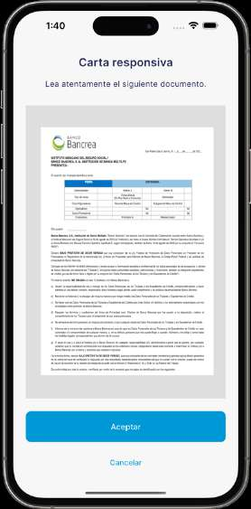
Carta responsiva · ResponseLetterDocumentView…/validation_documentation/response_letter/response_letter_document_view.dartDatos y acciones
Título "Carta responsiva" (línea 84) — sin AppBar (Scaffold solo con body, fondo 0xffF7F7F7)
Subtítulo "Lea atentamente el siguiente documento." (línea 96)
Visor PDF (pdfrx PdfViewer.data) con la carta responsiva generada por el backend: membrete Banco Bancrea, dirigida al Instituto Mexicano del Seguro Social / Banco Bancrea S.A. Institución de Banca Múltiple, tabla de datos del perfil y cuerpo con incisos; doble tap hace zoom x1.5 (líneas 112-126)
El PDF se solicita al abrir la vista (getPreviewPDFResponsive, línea 68); si falla se muestra el mensaje de error del evento errorPDFResponsiveGet
33
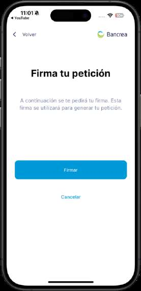
Firma tu petición · ElectronicSignatureView…/validation_documentation/electronic_signature/electronic_signature_view.dartDatos y acciones
AppBar con "< Volver" y logo Bancrea
Título "Firma tu petición" (línea 97)
Texto "A continuación se te pedirá tu firma. Esta firma se utilizará para generar tu petición." (líneas 102-107)
Botón azul "Firmar" (muestra "Firmando..." y se deshabilita mientras captura)
Link "Cancelar"
"Firmar" → KycController.startTakingOfSignature(false) lanza la sección Incode addSignature (kyc.controller.dart:1188-1239); al recibir SignatureCollected se envía signPDFResponsive con los bytes de la firma y en éxito completeElectronicSignature marca los pasos letterOfResponse y signature; el listener StepCompleted(signature) hace Navigator.pop a los pasos KYC (líneas 74-85)
"Cancelar" → Navigator.pop (líneas 128-137)
"< Volver" del AppBar → Navigator.pop
34
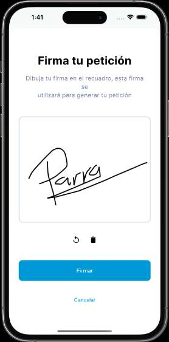
SDK IncodeFirma tu petición · Incode SDK — Signature (OnboardingFlowConfiguration()..addSignature(), flowTag 'signature')components/kyc/kyc.controller.dart (startTakingOfSignature, líneas 1188-1239; la lanza el botón "Firmar" de electronic_signature_view.dart:116-123)Datos y acciones
Título "Firma tu petición"
Subtítulo "Dibuja tu firma en el recuadro, esta firma se utilizará para generar tu petición"
Lienzo blanco con la firma trazada a mano (ejemplo: "Parra")
Iconos de deshacer (flecha circular) y borrar (bote de basura) bajo el lienzo
Botón azul "Firmar"
Link "Cancelar"
"Firmar" → onSignatureCollected entrega los bytes y onOnboardingSectionCompleted emite SignatureCollected (kyc.controller.dart:1205-1228); ElectronicSignatureView firma el PDF con signPDFResponsive y completa el paso
"Cancelar" → onUserCancelled (kyc.controller.dart:1229-1238): si se pasó un paso, lo marca en error y le quita el check de completado
Deshacer / borrar → edición del trazo dentro del SDK
Los textos "Firma tu petición" / "Dibuja tu firma en el recuadro..." de esta pantalla no existen en el repo: los renderiza el SDK de Incode con su localización 'es' (kyc.controller.dart:61); coinciden con el copy de la vista Flutter previa pero se mantienen por separado en el SDK.
35
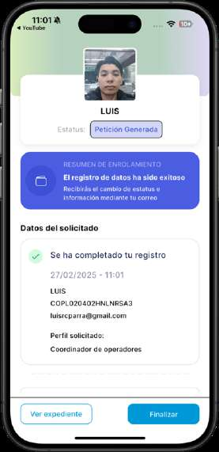
LUIS — Estatus: Petición Generada · RequestApprovedView…/request_approved/view/request_approved_view.dartDatos y acciones
Fondo degradado verde/lila atenuado (_Background, líneas 552-583)
Foto de perfil: la selfie del documento 'faces' vía getImage; si no llega, assets/images/defaultProfile.png (líneas 172-201)
Nombre "LUIS" (userController.model.userModel.names.join(' '), línea 204)
Tarjeta azul "RESUMEN DE ENROLAMIENTO" / "El registro de datos ha sido exitoso" / "Recibirás el cambio de estatus e información mediante tu correo" con icono de cartera (líneas 241-302)
Sección "Datos del solicitado" (línea 305)
Tarjeta con check verde "Se ha completado tu registro" (línea 343)
Fecha-hora "27/02/2025 - 11:01" — es DateFormat('dd/MM/yyyy - kk:mm') de DateTime.now() al abrir la vista, no un dato del backend (línea 352)
Nombre "LUIS"
CURP "COPL020402HNLNRSA3" (_user.curp, línea 370)
Correo "luisrcparra@gmail.com" (email en minúsculas, línea 378)
"Perfil solicitado:" = "Coordinador de operadores" (mapeo del role 'operators_coordinator' en _getProfile, líneas 108-125)
"Finalizar" (azul) → Navigator.pushAndRemoveUntil hacia LoginView eliminando todo el stack (líneas 528-539); además dispose() resetea el KycController y limpia statusDocument (líneas 58-63)
36
LUIS — Estatus: Petición Generada · RequestApprovedView…/request_approved/view/request_approved_view.dartDatos y acciones
Fondo degradado verde/lila atenuado (_Background, líneas 552-583)
Foto de perfil: la selfie del documento 'faces' vía getImage; si no llega, assets/images/defaultProfile.png (líneas 172-201)
Nombre "LUIS" (userController.model.userModel.names.join(' '), línea 204)
Tarjeta azul "RESUMEN DE ENROLAMIENTO" / "El registro de datos ha sido exitoso" / "Recibirás el cambio de estatus e información mediante tu correo" con icono de cartera (líneas 241-302)
Sección "Datos del solicitado" (línea 305)
Tarjeta con check verde "Se ha completado tu registro" (línea 343)
Fecha-hora "27/02/2025 - 11:01" — es DateFormat('dd/MM/yyyy - kk:mm') de DateTime.now() al abrir la vista, no un dato del backend (línea 352)
Nombre "LUIS"
CURP "COPL020402HNLNRSA3" (_user.curp, línea 370)
Correo "luisrcparra@gmail.com" (email en minúsculas, línea 378)
"Perfil solicitado:" = "Coordinador de operadores" (mapeo del role 'operators_coordinator' en _getProfile, líneas 108-125)
"Finalizar" (azul) → Navigator.pushAndRemoveUntil hacia LoginView eliminando todo el stack (líneas 528-539); además dispose() resetea el KycController y limpia statusDocument (líneas 58-63)
37
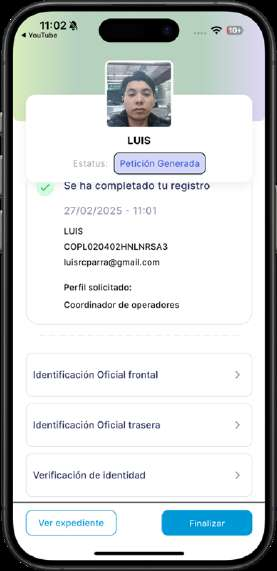
LUIS — Estatus: Petición Generada (lista de documentos desplazada) · RequestApprovedView…/request_approved/view/request_approved_view.dartDatos y acciones
Tarjeta "Se ha completado tu registro" con "27/02/2025 - 11:01", "LUIS", CURP "COPL020402HNLNRSA3", "luisrcparra@gmail.com", "Perfil solicitado:" "Coordinador de operadores"
Separador de línea punteada (DottedLine, líneas 407-420)
ExpansionTile "Identificación Oficial frontal" → imagen 'docs_front' (líneas 437-446)
ExpansionTile "Identificación Oficial trasera" → imagen 'docs_back' (líneas 448-457)
ExpansionTile "Verificación de identidad" → imagen 'faces' (líneas 459-468); cada tile expande un contenedor con la imagen/PDF o "Documento no disponible" (ContainerWithAutoHeight, líneas 599-631)
Tap en cada ExpansionTile → expande/colapsa y carga el documento vía requestCollaboratorController.getDocument/getImage (líneas 79-106)
"Finalizar" → Navigator.pushAndRemoveUntil a LoginView borrando el stack
El código tiene un ExpansionTile "Carta de Instrucción" condicionado a typeRequest == 'ADD_USER' en MAYÚSCULAS (request_approved_view.dart:422-434), pero el backend entrega el tipo en minúsculas ('add_user', como se compara en kyc.controller.dart:354 y 'credit_request' en user.controller.dart:122), así que ese tile es inalcanzable hoy — consistente con que la captura de un enrolamiento de colaborador no lo muestre. Además, los tiles "Comprobante domicilio" y "Carta Responsiva"/"Solicitud de crédito" están comentados en el código (request_approved_view.dart:469-505), lo que coincide con su ausencia en la captura.
38
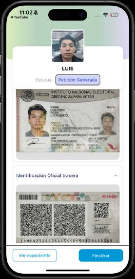
LUIS — Estatus: Petición Generada · RequestApprovedView…/request_approved/view/request_approved_view.dartDatos y acciones
Foto de perfil del enrolado (selfie 'faces' obtenida vía requestCollaboratorController.getImage('faces'); fallback assets/images/defaultProfile.png)
Nombre del solicitante: 'LUIS' (userController.model.userModel.names.join(' '))
Etiqueta 'Estatus:' + chip fijo 'Petición Generada' (fondo 0xffd2d7f7, texto 0xff4255d6 — hardcodeado, no depende del backend)
Imagen de la Identificación Oficial frontal (INE frente) expandida dentro de un ExpansionTile 'Identificación Oficial frontal' (archivo 'docs_front'; en la captura el header quedó fuera de cuadro por el scroll)
Sección colapsable 'Identificación Oficial trasera' expandida mostrando el reverso del INE con códigos QR/de barras (archivo 'docs_back')
Fuera de cuadro por scroll pero presentes en el código: banner azul 'RESUMEN DE ENROLAMIENTO / El registro de datos ha sido exitoso / Recibirás el cambio de estatus e información mediante tu correo', tarjeta 'Datos del solicitado' (check verde 'Se ha completado tu registro', fecha dd/MM/yyyy - kk:mm, nombre, CURP, correo, 'Perfil solicitado:' + rol), ExpansionTile 'Verificación de identidad' y, si typeRequest == 'ADD_USER', 'Carta de Instrucción'
Botón 'Finalizar' → pushAndRemoveUntil a LoginView limpiando todo el stack (request_approved_view.dart:530-537)
Tap en cada ExpansionTile expande/colapsa el documento correspondiente
Coincide con el código actual. Nota: las secciones 'Comprobante domicilio' y 'Carta Responsiva/Solicitud de crédito' están comentadas en el código (request_approved_view.dart:469-504) y consistentemente tampoco aparecen en la captura.
39
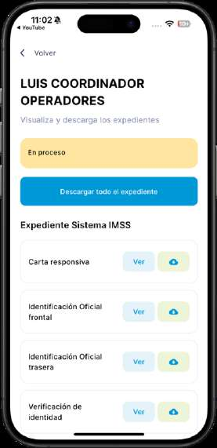
LUIS COORDINADOR OPERADORES — Visualiza y descarga los expedientes · ProfileFileView…/profile_file/profile_file_view.dartDatos y acciones
Link superior 'Volver' (AppBarBancrea vía BaseTemplate; appbar_bancrea.dart:45)
Banda de estatus amarilla (0xffFFE59F) con texto fijo 'En proceso' (profile_file_view.dart:118, 223-224 — texto hardcodeado, no refleja el estatus real)
Botón azul 'Descargar todo el expediente'
Encabezado de sección 'Expediente Sistema IMSS'
Lista de documentos (listFiles, flujo no-crédito, solo se renderiza cada tarjeta si el archivo descarga bien): 'Carta responsiva' (PDF), 'Identificación Oficial frontal' (imagen), 'Identificación Oficial trasera' (imagen), 'Verificación de identidad' (imagen) — visibles en esta captura; cada fila con botón 'Ver' celeste y botón de nube de descarga verde (FileCard)
'Volver' → Navigator.pop (AppBar)
'Descargar todo el expediente' → getFullReportPDF y FileSaver.saveAs 'Expediente <nombre>' abriendo la hoja de archivos del SO (profile_file_view.dart:183-192, 120-127)
'Ver' por fila → PDF: push a PreviewPDF; imagen: showImageViewer a pantalla completa (profile_file_view.dart:146-151, 138-144)
Botón nube por fila → FileSaver.saveAs individual (PDF o JPEG)
40
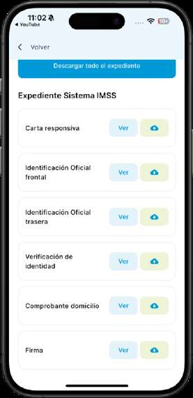
Expediente Sistema IMSS (lista completa, scroll) · ProfileFileView…/profile_file/profile_file_view.dartDatos y acciones
Link superior 'Volver'
Botón azul 'Descargar todo el expediente' (parte superior tras scroll)
Encabezado 'Expediente Sistema IMSS'
Los 6 documentos de listFiles (profile_file_view.dart:40-55): 'Carta responsiva', 'Identificación Oficial frontal', 'Identificación Oficial trasera', 'Verificación de identidad', 'Comprobante domicilio', 'Firma' — cada uno con botón 'Ver' y botón de nube de descarga
'Volver' → Navigator.pop
'Descargar todo el expediente' → getFullReportPDF + FileSaver.saveAs
'Ver' → PreviewPDF (documentos) o visor de imagen (imágenes)
Nube → descarga individual vía FileSaver.saveAs
Coincide. Nota: si la solicitud fuera de crédito (isCreditRequest) la lista sería listFilesCredit con 15 documentos (Solicitud de crédito, Carta de Instrucción, Aviso de privacidad, Contrato, Tablas de amortización, etc., profile_file_view.dart:57-109); la captura corresponde al flujo colaborador (6 documentos).
41
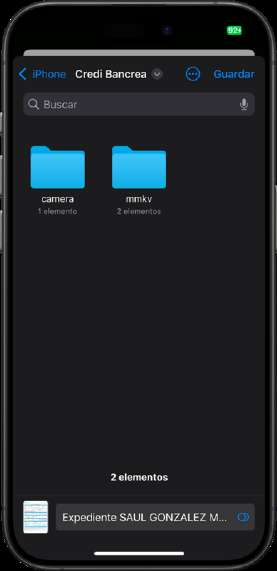
Sistema operativoArchivos de iOS — iPhone > Credi Bancrea (Guardar) · Hoja 'Guardar en Archivos' de iOS (FileSaver.instance.saveAs)…/profile_file/profile_file_view.dartDatos y acciones
Ruta de navegación 'iPhone > Credi Bancrea' (contenedor de documentos de la app)
Barra de búsqueda 'Buscar' con micrófono
Carpetas del sandbox de la app: 'camera' (1 elemento) y 'mmkv' (2 elementos)
Contador '2 elementos'
Documento a guardar en la parte inferior: 'Expediente SAUL GONZALEZ M…' (nombre generado como 'Expediente $_fullName' en profile_file_view.dart:189)
Botones del sistema: 'Guardar' (superior derecha) y menú de opciones (…)
'Guardar' → el SO escribe el PDF en la carpeta elegida y regresa a la app
'< iPhone' / selector de carpeta → navegación propia del SO
Lanzada desde ProfileFileView._downloadFullDocument → _savePDF → FileSaver.saveAs (profile_file_view.dart:120-127, 183-192); también la usan las descargas individuales de cada FileCard
Hoja del sistema operativo, sin view propio en el repo. El nombre 'SAUL GONZALEZ M…' corresponde a otro usuario de prueba distinto al 'LUIS' de las capturas contiguas (dato de QA, no disparidad de código).
42
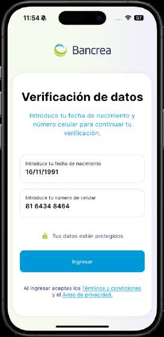
Verificación de datos · LoginValidationView…/login/view/login_validation_view.dartDatos y acciones
Logo Bancrea superior (AuthTemplate)
Título 'Verificación de datos'
Subtítulo 'Introduce tu fecha de nacimiento y número celular para continuar tu verificación.'
Campo 'Introduce tu fecha de nacimiento' con valor de ejemplo '16/11/1991' (CustomTextField().date())
Campo 'Introduce tu número de celular' con valor de ejemplo '81 6434 8464' (CustomTextField().phoneNumber())
Candado verde (0xffA4CD39) + texto 'Tus datos están protegidos'
Botón 'Ingresar' (habilitado solo con fecha >= 10 caracteres y teléfono >= 10 dígitos, login_validation_view.dart:172-178)
Texto legal 'Al ingresar aceptas los Términos y condiciones y el Aviso de privacidad.' con ambos links subrayados en azul
'Ingresar' → _login(): userController.searchRequest(phone, birthDate); según SessionAction: userActive → mensaje 'Usuario ya activo'; done → '/validationDocumentationView'; passwordSet → '/createPasswordView'; badKycProvider → mensaje de proveedor KYC incompatible (login_validation_view.dart:28-48)
Link 'Términos y condiciones' → getTermsAndConditions y push a PreviewPDF (login_validation_view.dart:65-87)
Link 'Aviso de privacidad.' → getPrivacityDocument y push a PreviewPDF (login_validation_view.dart:89-111)
43
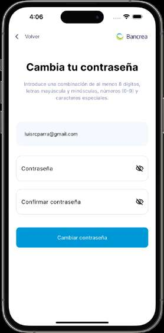
Cambia tu contraseña · CreatePasswordView…/create_password/view/create_password_view.dartDatos y acciones
AppBar con 'Volver' a la izquierda y logo Bancrea a la derecha (AppBarBancrea(withImage: true))
Título 'Cambia tu contraseña'
Descripción 'Introduce una combinación de al menos 8 dígitos, letras mayúscula y minúsculas, números (0-9) y caracteres especiales.'
Caja gris (0xffF5F8FC) de solo lectura con el correo del usuario: 'luisrcparra@gmail.com' (_fillEmail(): email de la solicitud o del userModel, create_password_view.dart:42-48)
Campo 'Contraseña' con icono de ojo (CustomTextFieldPassword, máx. 15 caracteres)
Barra de fortaleza de contraseña con mensaje por nivel ('Débil…', 'Regular…', 'Casi…', 'Increíble. Tienes una contraseña segura') — solo visible al teclear, oculta en la captura porque el campo está vacío
Campo 'Confirmar contraseña' con icono de ojo (validación de coincidencia)
Botón azul 'Cambiar contraseña'
'Volver' → Navigator.pop
'Cambiar contraseña' → valida el form y exige PasswordStrength.strong; setPasswordService y si passwordSetDone → pushReplacementNamed '/successPasswordView' (create_password_view.dart:190-205)
Iconos de ojo → alternan visibilidad de cada contraseña
44
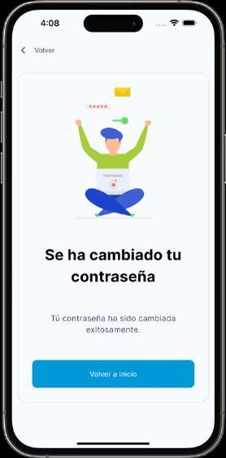
Se ha cambiado tu contraseña · SuccessPasswordView…/create_password/view/success_password_view.dartDatos y acciones
Link superior 'Volver' (AppBarBancrea vía BaseTemplate)
Tarjeta con borde gris (0xffDEDEDE) que contiene todo el contenido
Ilustración assets/illustrations/success_password.png (persona con laptop celebrando)
Título 'Se ha cambiado tu contraseña'
Texto 'Tú contraseña ha sido cambiada exitosamente.' (sic, con acento en 'Tú' tal cual en success_password_view.dart:41)
Botón azul 'Volver a inicio'
'Volver a inicio' → Navigator.pushReplacementNamed '/loginView' (success_password_view.dart:48-50)
'Volver' del AppBar → Navigator.pop
45
Hola, Bienvenido · LoginView…/login/view/login_view.dartDatos y acciones
Logo Bancrea en el encabezado (AuthTemplate, assets/logos/logo_bancrea.png)
Título: 'Hola, Bienvenido'
Subtítulo: 'Por favor introduce tu correo y contraseña para continuar.'
Campo de texto 'Ingresa tu correo electrónico' (vacío en la captura; CustomTextField.email())
Campo de texto 'Ingresa tu contraseña' con icono de ojo para mostrar/ocultar (CustomTextFieldPassword; validator: '* Este campo es obligatorio para continuar')
Link alineado a la derecha: '¿Olvidaste tu contraseña?'
Botón azul 'Iniciar sesión'
Texto: '¿Aún no estás registrado? Regístrate' (Regístrate en azul)
Comportamiento no visible: detección de root/jailbreak que reemplaza toda la pantalla por el aviso 'Se detectó un sistema operativo modificado…' (login_view.dart:155-173) y chequeo de versión contra servidor al abrir (_checkFromServer)
'Iniciar sesión' -> UserController.login(email, password); al evento SessionAction.authDone hace pushReplacementNamed('/homeBase') (login_view.dart:138-141, 213-222)
'¿Olvidaste tu contraseña?' -> pushNamed('/forgotPasswordView') (login_view.dart:205)
'¿Aún no estás registrado? Regístrate' -> pushNamed('/loginValidationView') (login_view.dart:229); si _lockApp fuerza actualización de tienda
Texto de versión (botón oculto) -> re-chequea versión en servidor; al 15º tap muestra toast 'CAMHEA: versión build' (login_view.dart:63-71, 253-262)
Flujo 1
Simulación y solicitud (colaborador)
40 pasos
Alta del cliente en el simulador, creación de la solicitud, carta de libranza y la solicitud de crédito completa hasta el envío de datos.
46
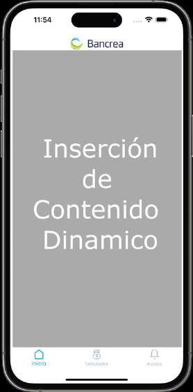
Inserción de Contenido Dinamico (placeholder) · HomeBase…/home/view/home_view.dartDatos y acciones
Logo Bancrea superior
Bloque gris a pantalla completa con el texto 'Inserción de Contenido Dinamico' (imagen placeholder, no es un widget del repo)
BottomNavigationBar con 3 tabs: 'Inicio' (seleccionado, azul 0xff0099D8), 'Simulador', 'Avisos' (home_view.dart:95-119; el tab Avisos muestra un punto verde cuando hay notificaciones sin leer)
Tab 'Inicio' → página 0 del PageView: DashBoardView (home_view.dart:127-131)
Tab 'Avisos' → página 2: NotificationView y limpia el badge (home_view.dart:90-93)
El bloque 'Inserción de Contenido Dinamico' no existe en el código: la cadena no aparece en ningún .dart del repo. En el código actual el tab Inicio de HomeBase renderiza directamente DashBoardView (home_view.dart:128), la pantalla de la captura x263. Es un mock/placeholder de diseño del PDF de QA, inalcanzable en la app actual; solo la barra de navegación y el logo coinciden con el código.
47
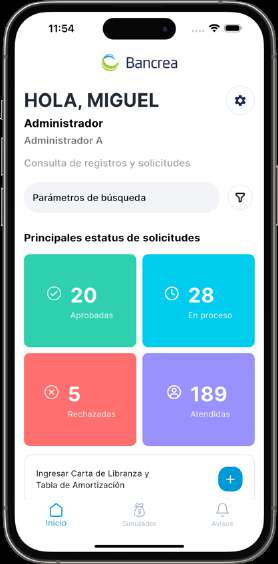
HOLA, MIGUEL — Principales estatus de solicitudes · DashBoardView…/dashboard/dashboard_view.dartDatos y acciones
Logo Bancrea centrado arriba (dashboard_view.dart:190-194)
Saludo 'HOLA, MIGUEL' (primer nombre del userModel) + botón circular de engrane a la derecha
Perfil: 'Administrador' (_getProfile() sobre role.name 'admin')
Categoría: 'Administrador A' (_getCategory() sobre category 'admin_a')
Texto 'Consulta de registros y solicitudes'
Barra de búsqueda con hint 'Parámetros de búsqueda' e icono de filtro (SearchBar en AbsorbPointer; hint en search_bar.dart:180)
Encabezado 'Principales estatus de solicitudes'
Grid 2x2 de tarjetas con contadores en vivo (RequestCollaboratorController.getStatistics): '20 Aprobadas' verde 0xff2FD0B0 con check, '28 En proceso' cian 0xff00CCEE con reloj, '5 Rechazadas' rojo 0xffFF6F70 con X, '189 Atendidas' morado 0xff9891FE con persona
Banner inferior 'Ingresar Carta de Libranza y Tabla de Amortización' con FAB azul '+' (oculto para categoría Referenciador, dashboard_view.dart:384-385)
Engrane → dropdown con 'Cambiar contraseña' (abre ChangePasswordAlertDialog) y 'Cerrar sesión' (clearAll + pushNamedAndRemoveUntil '/loginView', dashboard_view.dart:222-237)
Barra de búsqueda → Navigator.pushNamed '/dashboardSearchView' (dashboard_view.dart:292-298)
Cada tarjeta de estatus → _navigateSearch: selecciona el RequestStatus (approved / registrationInProgress / rejected / attended), dispara la búsqueda y navega '/dashboardSearchView' (dashboard_view.dart:143-162)
FAB '+' → showCupertinoModalBottomSheet con UploadReleaseLetterView (dashboard_view.dart:401-413)
48
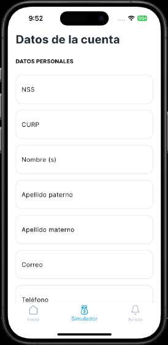
Datos de la cuenta — DATOS PERSONALES · SimulatorAccountDetailsView…/simulator/view/simulator_account_details_view.dartDatos y acciones
Título 'Datos de la cuenta' (PageTitle) y subtítulo 'DATOS PERSONALES'
Campo 'NSS' vacío (numérico, máx. 11 dígitos, validado con NssValidator; readOnly si el estatus no es imssOrderPending)
Campo 'CURP' vacío (mayúsculas, máx. 18, regex [0-9A-ZñÑ]; onChanged evalúa edad vía isValidAgeSync y puede abrir InvalidAgeFromCurpBottomSheet)
Campo 'Nombre (s)' vacío (solo A-Z/Ñ y espacios, mayúsculas)
Campo 'Apellido paterno' vacío (mismas restricciones)
Campo 'Apellido materno' vacío (opcional, validator siempre '')
Campo 'Correo' vacío (CustomTextField().email())
Campo 'Teléfono' parcialmente visible (phoneNumber(), exige longitud >= 12 con formato)
BottomNavigationBar con 'Simulador' seleccionado (esta vista es la página 1 del PageView de HomeBase)
Es la mitad superior del formulario; los botones 'Si, continuar' / 'Cancelar' aparecen al hacer scroll (ver captura x275)
Tabs inferiores → cambian de página en HomeBase (Inicio resetea el simulador)
49
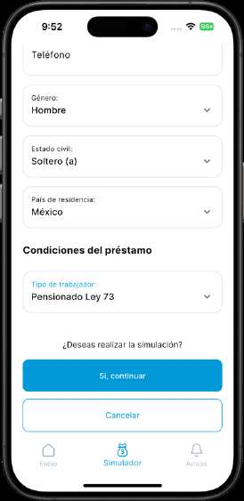
Datos de la cuenta — Condiciones del préstamo · SimulatorAccountDetailsView…/simulator/view/simulator_account_details_view.dartDatos y acciones
Campo 'Teléfono' (borde superior de la captura)
Dropdown 'Género:' con valor 'Hombre' (opciones: Hombre, Mujer — simulator_controller.dart:83)
Dropdown 'Estado civil:' con valor 'Soltero (a)' (opciones: Soltero (a), Casado (a), Viudo (a), Divorciado (a), Unión libre — simulator_controller.dart:87-93)
Dropdown 'País de residencia:' con valor 'México' (cargado de assets/json/countries.json; pre-selecciona México)
Encabezado 'Condiciones del préstamo'
Dropdown 'Tipo de trabajador:' con valor 'Pensionado Ley 73' (opciones: Activo IMSS, Jubilado IMSS, Pensionado IMSS, Pensionado Ley 73, pero solo 'Pensionado Ley 73' está habilitado — los demás en gris, simulator_account_details_view.dart:511-516)
Pregunta '¿Deseas realizar la simulación?' (cambia a '¿Deseas actualizar los datos?' si el estatus es imssOrderGenerated, línea 584-586)
Botón azul 'Si, continuar' y botón outlined 'Cancelar'
BottomNavigationBar con 'Simulador' seleccionado
'Si, continuar' → valida edad por CURP contra backend (validateAge, con guards de mounted y de CURP sin cambios), valida el form, vuelca los datos al simulationModel y _checkIfRegisterExist: si no hay registro → '/simulatorDataView'; si notEligible actualiza NSS/CURP y también → '/simulatorDataView'; si es solo actualización de teléfono/correo → updatePhoneNumberSimulation y '/homeBase' (simulator_account_details_view.dart:592-664, 106-130)
'Cancelar' → CancelOperationModalBottomSheet: 'continuar' hace pop; 'salir' limpia simulador/navigator y pushNamedAndRemoveUntil '/homeBase' (líneas 667-685)
Si el dropdown queda en 'Activo IMSS', 'Si, continuar' se deshabilita y aparecerían dropdowns extra 'Trabajador sindicalizado:' y 'Antigüedad laboral:' (líneas 540-580)
50
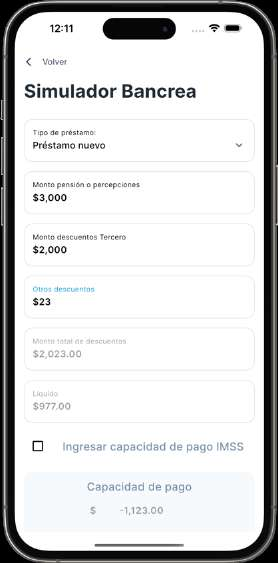
Simulador Bancrea · SimulatorDataView…/simulator/view/simulator_data_view.dartDatos y acciones
AppBar con 'Volver' (AppBarBancrea)
Título 'Simulador Bancrea' (PageTitle)
Dropdown 'Tipo de préstamo:' con valor 'Préstamo nuevo' (opciones actuales listTypeOfLoanSimulator: Préstamo nuevo, Refinanciamiento/Renovación, Compra de deuda; 'Segundo o más' está comentado en simulator_controller.dart:71-76)
Campo 'Monto pensión o percepciones' = $3,000 (prefijo $, formato de miles, recalcula líquido y capacidad al teclear)
Campo 'Monto descuentos Tercero' = $2,000
Campo 'Otros descuentos' = $23 (label en azul por foco)
Campo deshabilitado 'Monto total de descuentos' = $2,023.00 (calculado: 2,000 + 23)
Campo deshabilitado 'Líquido' = $977.00 (calculado: 3,000 − 2,023)
Checkbox sin marcar 'Ingresar capacidad de pago IMSS' (al marcarlo habilita captura manual y limpia los campos de arriba, simulator_data_view.dart:330-352)
Caja gris 'Capacidad de pago' con valor calculado '$ -1,123.00' (UnderLineBorderTextFormField deshabilitado mientras el checkbox está apagado)
Fuera de cuadro por scroll: campo 'Monto deudor (renovación/ Reestructura)' (solo visible para tipo de préstamo 2 o 3), pregunta '¿La información mostrada es correcta?' y botones 'Si, continuar' / 'Cancelar'
'Volver' → Navigator.pop
Cambio de 'Tipo de préstamo' → actualiza selectTypeOfLoan, resetea monto deudor y recalcula capacidad (simulator_data_view.dart:72-84)
'Si, continuar' → calculateMaximumAmount; si capacidad <= 0 o monto máximo < 5000 → NoOfferModalBottomSheet (modificar datos o salir a '/homeBase'); si no, guarda montos en simulationModel y navega: Refinanciamiento/Renovación → AppRoute.rfcAndClientNumber, resto → '/simulatorOfferView' (simulator_data_view.dart:431-493)
'Cancelar' → CancelOperationModalBottomSheet; salir limpia el simulador y pushNamedAndRemoveUntil '/homeBase' (líneas 495-513)
51
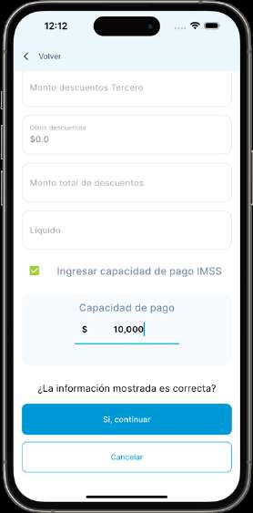
(sin título de página visible; appbar '< Volver' — es el tramo inferior de 'Simulador Bancrea') · SimulatorDataView…/simulator/view/simulator_data_view.dartDatos y acciones
Campo 'Monto descuentos Tercero' (vacío; se deshabilita cuando el checkbox de capacidad IMSS está activo, línea 145-146)
Campo 'Otros descuentos' con valor de ejemplo $0.0 (deshabilitado con checkbox activo)
Campo 'Monto total de descuentos' (siempre deshabilitado, se calcula solo; línea 245)
Campo 'Líquido' (deshabilitado, calculado; línea 300-306)
Checkbox verde (#A4CD39) marcado con texto 'Ingresar capacidad de pago IMSS'; al activarlo limpia los campos de captura (clearTextfieldSimulatorData, línea 350)
Card gris 'Capacidad de pago' con input subrayado (UnderLineBorderTextFormField) prefijo '$' y valor de ejemplo 10,000 — editable solo con el checkbox activo (líneas 393-415)
Pregunta '¿La información mostrada es correcta?'
Fuera del encuadre por scroll: título 'Simulador Bancrea', dropdown 'Tipo de préstamo:' y campo 'Monto pensión o percepciones'; el campo 'Monto deudor (renovación/ Reestructura)' está oculto porque el tipo es préstamo nuevo (Visibility, líneas 252-254)
'Si, continuar' (azul): calcula monto máximo; si capacidad <= 0 o máximo < $5,000 abre NoOfferModalBottomSheet; si el tipo de préstamo es renovación/refinanciamiento navega a AppRoute.rfcAndClientNumber, en otro caso a '/simulatorOfferView' (líneas 431-493)
'Cancelar' (outlined): abre CancelOperationModalBottomSheet; 'salir' limpia simulador y navega '/homeBase' quitando el stack (líneas 495-513)
'< Volver' (AppBarBancrea): pop
52
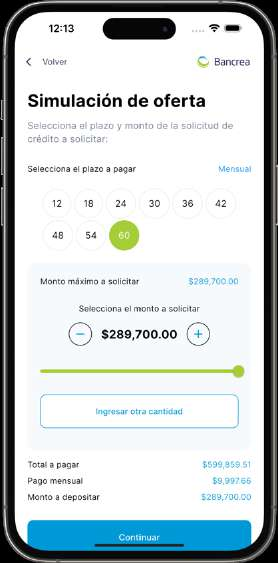
Simulación de oferta · SimulatorOfferView…/simulator/view/simulator_offer_view.dartDatos y acciones
Appbar '< Volver' con logo Bancrea (AppBarBancrea(withImage: true))
Subtítulo: 'Selecciona el plazo y monto de la solicitud de crédito a solicitar:'
Fila 'Selecciona el plazo a pagar' con etiqueta 'Mensual' en azul — es un Text estático, NO es botón (líneas 70-81)
Chips circulares de plazos del catálogo CAT: 12, 18, 24, 30, 36, 42, 48, 54, 60; el 60 seleccionado en verde #A4CD39
Card gris: 'Monto máximo a solicitar' $289,700.00 (azul)
'Selecciona el monto a solicitar' con botones circulares - y + y monto central '$289,700.00' en negrita
Slider verde de 0 al monto máximo
Botón conmutador 'Ingresar otra cantidad' (muestra/oculta el campo 'Monto')
Totales: 'Total a pagar' $599,859.51, 'Pago mensual' $9,997.66, 'Monto a depositar' $289,700.00 (montos en azul; se fuerzan a $0 si el monto es inválido, _AmountTile líneas 471-478)
Botón 'Continuar' (azul)
Chip de plazo: selecciona plazo, recalcula monto máximo y limpia el campo de cantidad manual (líneas 103-108)
- / +: increaseDecrease del monto a solicitar
Slider: incrementAmountSlider
'Ingresar otra cantidad': alterna visibilidad del campo 'Monto' con validación de múltiplos de 100 y mínimo $5,000
'Continuar': si el monto es válido guarda plazo/montos/IVA en simulationModel y navega a '/simulatorDataSummaryView' (_initOffer, líneas 33-51); con monto inválido no hace nada
'Cancelar simulación' (texto, bajo el fold): pop
'< Volver': pop
Solo recorte de scroll: bajo 'Continuar' el código tiene el botón de texto 'Cancelar simulación' y la leyenda 'CAT ANUAL: x% sin IVA | y% con IVA' (simulator_offer_view.dart:418-436) que la captura no muestra; tampoco se ven los mensajes de error condicionales de monto (líneas 204-263).
53
Resumen de Datos · SimulatorDataSummaryView…/simulator/view/simulator_data_summary_view.dartDatos y acciones
Sin appbar (el Scaffold no define appBar; SafeArea directo)
Inicio del dropdown 'Estado civil:' cortado en el borde inferior
Toda la pantalla es de solo lectura: es el preview del formulario antes de guardar la simulación
Ninguna en este encuadre; los botones 'Si, continuar' / 'Actualizar Datos' / 'Cancelar' están al final de la vista (ver xref 291)
54
Condiciones del préstamo (sección intermedia de 'Resumen de Datos') · SimulatorDataSummaryView…/simulator/view/simulator_data_summary_view.dartDatos y acciones
Dropdown 'Estado civil:': Soltero (a) (bloqueado)
Dropdown 'País de residencia:': México (bloqueado; catálogo de assets/json/countries.json, líneas 247-285)
'Importe total a pagar:': $13,873.17 (deshabilitado)
'Descuento mensual:': $231.22 (deshabilitado)
'Importe a Recibir:' cortado en el borde inferior
Ocultos en esta captura por no ser 'Activo IMSS': dropdowns 'Trabajador sindicalizado:' y 'Antigüedad laboral:' (Visibility, líneas 316-358)
Ninguna en este encuadre (todos los campos deshabilitados/bloqueados); botones al final de la vista
55
VER DETALLES DE SIMULACIÓN (cortado en el borde superior) · SimulatorDataSummaryView…/simulator/view/simulator_data_summary_view.dartDatos y acciones
Bloque final del resumen, todos los campos deshabilitados (espejo de lo capturado en SimulatorDataView):
'Monto pensión o percepciones' (vacío en la captura, hint 0.0)
'Monto descuentos Tercero' (vacío)
'Otros descuentos' (vacío)
'Monto total de descuentos' (vacío)
'Liquido' (sin acento en el código, línea 595; vacío)
Campo 'Monto deudor (renovación/ Reestructura)' oculto por ser préstamo nuevo (líneas 556-590)
Card gris 'Capacidad de pago' con texto '$10,000.00' (líneas 611-646)
Pregunta '¿Continuar con el proceso de solicitud?'
'Si, continuar' (azul) → _saveSimulation: guarda la simulación en backend; si el request quedó assignedToPromoter=true navega a '/successWithWebView', si false a AppRoute.waitForPromoterToBeAssigned (líneas 75-96)
'Actualizar Datos' (outlined) → setPosition(1) y '/homeBase' quitando el stack (regresa a la pestaña Simulador para editar) (líneas 657-667)
'Cancelar' (texto) → CancelOperationModalBottomSheet; al salir limpia simulador y navega '/homeBase' (líneas 669-687)
56
Pendiente de asignar promotor · WaitForPromoterToBeAssignedView…/simulator/view/wait_for_promoter_to_be_assigned_view.dartDatos y acciones
Appbar '< Volver' (AppBarBancrea)
Icono de check verde (assets/icons/check.png, alto 200)
Título 'Pendiente de asignar promotor' (bold, 30)
Texto secundario: 'Recibirá una notificación para cuando pueda continuar con la solicitud' (color #757DA8)
Botón azul 'Volver al inicio' anclado abajo (Spacer)
'Volver al inicio' → Navigator.pushReplacementNamed '/homeBase' (líneas 33-39)
'< Volver' → pop
Se llega aquí desde SimulatorDataSummaryView._saveSimulation cuando el request no tiene promotor asignado (simulator_data_summary_view.dart:88-93)
57
HOLA, MIGUEL — Principales estatus de solicitudes · DashBoardView…/dashboard/dashboard_view.dartDatos y acciones
Logo Bancrea centrado arriba (dashboard_view.dart:190-194)
Saludo 'HOLA, MIGUEL' (primer nombre del userModel) + botón circular de engrane a la derecha
Perfil: 'Administrador' (_getProfile() sobre role.name 'admin')
Categoría: 'Administrador A' (_getCategory() sobre category 'admin_a')
Texto 'Consulta de registros y solicitudes'
Barra de búsqueda con hint 'Parámetros de búsqueda' e icono de filtro (SearchBar en AbsorbPointer; hint en search_bar.dart:180)
Encabezado 'Principales estatus de solicitudes'
Grid 2x2 de tarjetas con contadores en vivo (RequestCollaboratorController.getStatistics): '20 Aprobadas' verde 0xff2FD0B0 con check, '28 En proceso' cian 0xff00CCEE con reloj, '5 Rechazadas' rojo 0xffFF6F70 con X, '189 Atendidas' morado 0xff9891FE con persona
Banner inferior 'Ingresar Carta de Libranza y Tabla de Amortización' con FAB azul '+' (oculto para categoría Referenciador, dashboard_view.dart:384-385)
Engrane → dropdown con 'Cambiar contraseña' (abre ChangePasswordAlertDialog) y 'Cerrar sesión' (clearAll + pushNamedAndRemoveUntil '/loginView', dashboard_view.dart:222-237)
Barra de búsqueda → Navigator.pushNamed '/dashboardSearchView' (dashboard_view.dart:292-298)
Cada tarjeta de estatus → _navigateSearch: selecciona el RequestStatus (approved / registrationInProgress / rejected / attended), dispara la búsqueda y navega '/dashboardSearchView' (dashboard_view.dart:143-162)
FAB '+' → showCupertinoModalBottomSheet con UploadReleaseLetterView (dashboard_view.dart:401-413)
58
Buscar por Clientes · DashboardSearchPage (título/subtítulo: ViewTitleAndSearchBar; lista: CustomersList/CustomerCard)…/customers_or_requests_search/presentation/pages/search_page.dartDatos y acciones
Appbar '< Volver'
Título 'Buscar por Clientes' — dinámico: 'Buscar por ${searchView.label}' (view_title_and_search_bar.dart:26)
Subtítulo 'Consulta clientes y potencia solicitudes' (variante clientes; para solicitudes sería 'Consulta de registros, listados y estadísticas', líneas 41-43)
Campo de búsqueda redondeado con hint 'Parámetros de búsqueda' (search_bar.dart:180) y autofocus
Botón circular de filtro (assets/icons/filter.png)
Tarjetas de cliente con nombre en azul bold + 'CURP:' y 'NSS:': ANA MARIA RODRIGUEZ SANCHEZ (CURP: HECJ010421MVZRRSA8, NSS: 27160155589); GRACIELA AGUILERA GOMEZ (CURP: AUGG461029MDFGMR01, NSS: 01512218916); MARIANA VAZQUEZ PEREZ (CURP: EIRV950627MNLLDR00, NSS: 47139566393); MANUEL HUMBERTO CARDENAS MARROQUIN (CURP cortado)
Submit del campo → recarga la lista de clientes o dispara searchInput para solicitudes (search_page.dart:25-39)
Botón filtro → abre SelectSearchTypeBottomSheet para cambiar entre vista Clientes/Solicitudes y tipo de filtro (CURP/NSS/Nombre/Folio) (search_bar.dart:200-206)
Tap en tarjeta de cliente → Navigator.pushNamed '/customerDetail' con el UserModel como argumento (customer_card.dart:19-25)
'< Volver' → pop
La etiqueta del PDF 'view_title_and_search_bar' nombra solo el widget del encabezado; la pantalla completa es DashboardSearchPage (ruta '/dashboardSearchView', router.dart:217-220).
59
Detalle de cliente · CustomerRequestsPage…/customer/presentation/pages/customer_requests_page.dartDatos y acciones
Appbar con título centrado 'Detalle de cliente' y flecha back (backTitle: false)
Nombre del cliente 'MARIANA VAZQUEZ PEREZ' (argumento UserModel de la ruta '/customerDetail')
Botón azul 'Crear nueva solicitud'
'Estatus de las solicitudes:' con dropdown 'Todos' (RequestsStatusSelector sobre RequestStatus.values; 'Todos' en status.enum.dart:9)
Tarjeta de solicitud (RequestCard): folio '11240520435-6' en azul, nombre 'MARIANA VAZQUEZ PEREZ', 'CURP: EIRV950627MNLLDR00', 'NSS: 47139566393', 'FECHA: 11/02/2025'
Banda inferior de la tarjeta con degradado azul y texto 'Registro en progreso' — es el chip de estatus (request_card.dart:266-312; azul = rama por defecto, verde aprobada/atendida, rojo rechazada/cancelada), no un botón independiente
'Crear nueva solicitud': si canCreateNewRequest falla abre ProcedureInProcessBottomSheet; si pasa, habilita secondOrMoreRequest, copia la última simulación al SimulatorController y navega '/searchRequestDetailView' (líneas 107-127)
Dropdown de estatus: filtra la lista local de solicitudes (_filterRequestsBy, líneas 43-50)
Tap en la tarjeta: setea la simulación en el SimulatorController y navega '/searchRequestDetailView' (customer_requests_page.dart:154-163 + request_card.dart:86-92)
Back del appbar → pop
60
Notificaciones · NotificationView (embebida en el homeBase con bottom nav de home_view.dart)…/notifications/view/notification_view.dartDatos y acciones
Logo Bancrea centrado arriba (logo_bancrea.png, 140px)
Título 'Notificaciones'
SegmentedButton con 3 segmentos: 'Todas' (seleccionado), 'Carga de Carta CL' (NotificationType.immsDraftLetter) y 'Asignación' (NotificationType.requestAssignedImss) (líneas 356-381)
Tarjeta 1 (fondo gris #F4F5F7): icono logo Bancrea, título 'Credi Bancrea', cuerpo 'Tienes una nueva solicitud: "Asignado IMSS", para iniciar con el trámite' + 'Cliente: MARIANA VAZQUEZ PEREZ', 'Folio CL: 11240520435-6', 'CURP: EIRV950627MNLLDR00', 'NSS: 47139566393' (formato de _notificationTitle, líneas 46-73); divisor y edad 'HACE 2 SEMANAS' en mayúsculas (_getNotificationAgeString, líneas 255-296)
Tarjeta 2 igual para 'Cliente: SAUL GONZALEZ MARTINEZ', 'Folio CL: 07243206751-4', 'CURP: GOMS621011HVZNRL03'
Bottom navigation del home: 'Inicio', 'Simulador', 'Avisos' con 'Avisos' activo (home_view.dart:98-117)
Segmentos: filtran la lista por tipo de notificación (líneas 397-408)
Tap en tarjeta: getSimulationById(requestToAttend) y según tipo/estatus navega a '/searchRequestDetailView', redirige al simulador (setPosition(1) con item update) o muestra mensajes ('Solicitud se canceló.', 'Simulación ya aprobada', 'La notificación ya se envió...') (_getNotificationData, líneas 147-253 y onTap 426-438)
Bottom nav: cambia de pestaña dentro de '/homeBase'
61
Registro de datos exitoso · SuccessView (ruta '/successWithWebView', router.dart:134-137)…/success/successful_view.dartDatos y acciones
Appbar '< Volver', logo Bancrea centrado, ilustración de buzón (register_success.png)
Título 'Registro de datos exitoso'
Texto (variante no-referenciador, línea 136): 'Por favor realiza la validacion en el portal del IMSS, para continuar con el proceso deberas contar con la carta libranza y tabla de amortizacion.'
Fila 'SIPRE': URL 'https://mclprestamos.imss.gob.mx/mclpe/auth/login' con elipsis (constants.dart:11) y botón pill 'Abrir' — se muestra porque typeWorker == PENSIONED_LAW; el caso contrario muestra 'SUAP' con https://suap.imss.gob.mx/suap/auth/login (Visibility, líneas 192-278)
Botón azul 'Continuar'
'Abrir' → lanza URL_SIPRE en el navegador externo (líneas 268-272 y _launchInBrowser 307-315)
Registro de datos exitoso · SuccessView (variante categoría 'Referenciador')…/success/successful_view.dartDatos y acciones
Appbar '< Volver', logo Bancrea, ilustración de buzón
Título 'Registro de datos exitoso'
Texto visible en la captura: 'Por favor realiza la validacion en el portal del IMSS, para continuar con el proceso deberas contar con la carta libranza y tabla de amortizacion.'
Sin fila SIPRE/SUAP (oculta para referenciador, Visibility línea 187-188)
Botón azul 'Notificar a promotor'
'Notificar a promotor' → _notification(): notifyPromoter o notifyChangeStatusPromoter(WAITING) según si viene de notificación o si la simulación ya tiene id; en éxito muestra SendNotificationAlertDialog y al cerrar navega '/homeBase' (líneas 42-107)
'< Volver' → pop
El texto de la captura no coincide con el código actual: para categoría 'Referenciador' el getter _text hoy devuelve el texto largo 'Por favor, notifica a tu Promotor para que realice la validación del registro en el Portal del IMSS y genere la Carta de Libranza y Tabla de Amortización... Recibirás una notificación cuando tu Promotor haya generado los documentos.' (successful_view.dart:132-138). La captura muestra el texto corto genérico junto al botón de referenciador, combinación hoy imposible: es un build previo al commit 227d80e3/6d8201d0 que introdujo el texto por categoría.
63
Datos de Simulación · SimulatorImssDataSummary (ruta '/simulatorImssDataSummary', router.dart:243)…/simulator/view/simulator_imss_data_summary.dartDatos y acciones
Sin appbar; título 'Datos de Simulación' con descripción 'Introduce la información de la simulación al portal del IMSS correspondiente.' (titleTabWidget, líneas 218-221)
Sección 'DATOS PERSONALES'; cada campo es readOnly con icono azul de copiar (Icons.copy) como suffix — el icono se oculta cuando ya se cargó la tabla de amortización (_showDataFromAmortization):
'NSS': 67866270217
'CURP': GOMS621011HVZNRL03
'Nombre (s)': SAUL
'Apellido paterno': GONZALEZ
'Apellido materno': MARTINEZ
'Correo': LUISRCPARRA55@GMAIL.COM
'Teléfono': +5281389815... (cortado en el borde inferior)
Bajo el fold (no visible): Género, Estado civil, País de residencia, 'Condiciones del préstamo' (Estatus 'Espera Libranza IMSS' o 'Libranza IMSS generada', tipo de trabajador/préstamo, montos), 'VER DETALLES DE SIMULACIÓN', sección condicional 'CARTA LIBRANZA', card 'Capacidad de pago' y botones
Icono copiar de cada campo → copia el valor al portapapeles y muestra toast 'Copiado en el portapales' (copyTextfieldToClipboard, líneas 990-994; el teléfono se copia sin el prefijo +52, líneas 401-412)
Bajo el fold: botón principal 'Si, continuar' / 'Aprobar y notificar a referenciador' → sube carta libranza (UploadReleaseLetterView en bottom sheet) o guarda tabla de amortización y navega '/creditRequestGeneralDataView' (_operateRequest, líneas 120-149); 'Actualizar Datos' u opción 'No, rechazar y notificar a referenciador' según rol; 'Cancelar' con CancelOperationModalBottomSheet que cancela el request y sale a '/homeBase' (959-977)
64
Condiciones del préstamo · SimulatorImssDataSummary…/simulator/view/simulator_imss_data_summary.dartDatos y acciones
Pantalla 'Datos de Simulación' (título fuera del scroll) a media altura, sección DATOS PERSONALES ya recorrida
Dropdown 'Pais de residencia:' = 'México' (deshabilitado, valor fijo 'México', simulator_imss_data_summary.dart:499)
Encabezado de sección 'Condiciones del préstamo'
Campo 'Estatus de solicitud:' = 'Espera Libranza IMSS' (deshabilitado; cambia a 'Libranza IMSS generada' cuando se carga la CL, líneas 516-523)
Dropdown 'Tipo de trabajador:' = 'Pensionado IMSS' (deshabilitado; lista listClientType del SimulatorController)
Dropdown 'Tipo de préstamo:' = 'Préstamo nuevo' (único dropdown con onTap activo: setea selectTypeLoan, líneas 588-603)
Campo 'Monto solicitado:' = '$6,700.00' (deshabilitado)
Campo 'Plazo:' = '60 meses' (deshabilitado)
Campo 'Importe total a pagar:' = '$13,873.17' (deshabilitado)
Campo 'Descuento mensual:' = '$231.22' (deshabilitado)
Campo 'Importe a Recibir:' cortado en el borde inferior
Dropdown 'Tipo de préstamo' — al elegir opción setea _simulatorController.selectTypeLoan (línea 593); el resto de dropdowns/campos son de solo lectura (los campos de DATOS PERSONALES traen ícono copiar al portapapeles cuando aún no hay CL cargada)
Scroll hacia abajo lleva a la sección VER DETALLES DE SIMULACIÓN, la tarjeta Capacidad de pago y los botones 'Si, continuar' / 'Actualizar Datos' (o 'No, rechazar...') / 'Cancelar'
65
CARTA LIBRANZA · SimulatorImssDataSummary…/simulator/view/simulator_imss_data_summary.dartDatos y acciones
Encabezado de sección 'CARTA LIBRANZA' (parcialmente tapado por el dynamic island); esta sección solo se renderiza cuando model.amortizationDocument != null (línea 808)
Campo 'Folio:' (vacío en la captura; deshabilitado)
Campo 'Fecha de carta de libranza:' (vacío; el código lo pinta SIEMPRE vacío, texto hardcodeado '' en la línea 839)
Campo 'Cat con IVA:' (vacío; el código concatena '%' al valor, línea 852)
Campo 'Fecha de vigencia del folio:' (vacío; formato dd/MM/yyyy)
Campo 'Fecha del primer descuento:' (vacío; formato dd/MM/yyyy)
Tarjeta gris 'Capacidad de pago' (el monto queda cortado/no visible en la captura)
Botón 'Si, continuar' → _operateRequest(): si aún no hay tabla procesada abre el modal UploadReleaseLetterView (líneas 142-148); con tabla procesada y flujo de notificación guarda la tabla y notifica al referenciador → '/homeBase'; sin notificación → _operateAmortization() → '/creditRequestGeneralDataView' (línea 190)
Botón 'No, rechazar y notificar a referenciador' → abre RejectedRequestModalBottomSheet (modal 'Solicitud rechazada', línea 953); visible solo si usuario promoter y requestFromNotification (líneas 935-939)
Botón 'Cancelar' → CancelOperationModalBottomSheet; al confirmar resetea navigator, clearSimulator, cancelRequest y navega a '/homeBase' (líneas 959-977)
El campo 'Fecha de carta de libranza:' nunca puede mostrar valor: el código le asigna cadena vacía fija (simulator_imss_data_summary.dart:839). Además, estado poco consistente en la captura: la sección CARTA LIBRANZA solo aparece con amortizationDocument cargada, pero el botón dice 'Si, continuar'; con notificación activa y draft cargado el título sería 'Aprobar y notificar a referenciador' (_continueTitle, líneas 107-114) — solo alcanzable en el estado intermedio amortizationDocument != null con _showDataFromAmortization aún en false.
66
Solicitud rechazada · RejectRequestView (dentro de RejectedRequestModalBottomSheet, custom_modal_bottom_sheet.dart:286, lanzado desde simulator_imss_data_summary.dart:953)…/reject_request_view/view/reject_request_view.dartDatos y acciones
Modal bottom sheet (85% de alto) sobre la pantalla CARTA LIBRANZA
Título 'Solicitud rechazada'
Subtítulo '¿Cuál es la razón de la cancelación?'
Radio 'Datos incorrectos del solicitante para acceso.(NSS, CURP)' (no seleccionado) — valor NotificationReject.INCORRECT_DATA
Radio 'Capacidad de pago incorrecta' (seleccionado) — valor INCORRECT_PAYMENT_CAPACITY
Campo subrayado con hint '0.0' bajo la opción de capacidad (prefijo $, formato de miles, 2 decimales, obligatorio; reject_request_view.dart:104-129)
Radio 'Otro' (no seleccionado) — valor OTHER
Campo subrayado con hint 'Escribe la razón' bajo 'Otro' (obligatorio si se elige Otro; líneas 147-157)
Radios: seleccionan la razón (setState de _character)
Botón 'Aceptar' → si no hay opción muestra mensaje 'Por favor selecciona una opción'; si valida, abre MessageSentAlertDialog y al confirmar envía notifyChangeStatusPromoter(status REJECTED con causa) y navega a '/homeBase' (líneas 164-176 y 38-54)
Botón 'Cancelar' → cierra el modal (Navigator.pop, líneas 180-185)
En el código actual los dos campos condicionales son mutuamente excluyentes: el de '0.0' solo es visible con _character.index == 2 (reject_request_view.dart:100-101) y el de 'Escribe la razón' solo con index == 3 (líneas 143-144). La captura muestra AMBOS campos a la vez con 'Capacidad de pago incorrecta' seleccionada — corresponde a una versión anterior de la pantalla, hoy irreproducible.
67
Capacidad de pago · SimulatorImssDataSummary…/simulator/view/simulator_imss_data_summary.dartDatos y acciones
Tramo final de 'Datos de Simulación', sección 'VER DETALLES DE SIMULACIÓN' (encabezado fuera de cuadro arriba)
Campo 'Monto pensión o percepciones' = '$0.00' (cortado arriba, deshabilitado)
Campo 'Monto descuentos Tercero' = '$0.00' (deshabilitado)
Campo 'Otros descuentos' = '$0.00' (deshabilitado)
Campo 'Monto total de descuentos' = '$0.00' (deshabilitado)
Campo 'Liquido' = '$0.00' (deshabilitado)
El campo 'Monto deudor (renovación/ Reestructura)' NO aparece: solo es visible con typeLoan índice 2 o 3 (líneas 777-797) — consistente con 'Préstamo nuevo'
Tarjeta gris 'Capacidad de pago' = '$30,000.00' (líneas 896-923)
Botón 'Si, continuar' → _operateRequest(): sin CL cargada abre el modal UploadReleaseLetterView (líneas 142-148); con CL cargada continúa a '/creditRequestGeneralDataView'
Botón 'Actualizar Datos' (outlined) → enableItemUpdate() + setPosition(1) del navigator y navega a '/homeBase' para editar la simulación (líneas 940-948); esta variante se muestra cuando NO es promoter con notificación (rama replacement) — encaja con la etiqueta '(referenciador)'
Botón 'Cancelar' → CancelOperationModalBottomSheet; al confirmar cancela la solicitud y navega a '/homeBase' (líneas 959-977)
68
Carta de Libranza y Tabla de Amortización · UploadReleaseLetterView (modal cupertino lanzado desde simulator_imss_data_summary.dart:142-148)…/release_letter/view/upload_release_letter_view.dartDatos y acciones
Botón cerrar 'X' arriba a la derecha
Título 'Carta de Libranza y Tabla de Amortización'
Descripción 'Por favor ingresa la Carta de Libranza y Tabla de Amortización extraídas del Sistema IMSS (SIPRE V2 o SUAP)'
Área de carga ilustrada (UploadGenericDocument) con botón circular azul '+'
Texto 'Agrega solamente archivos PDF'
Divider; fila de detalle DetailUploadDocument oculta (visible solo tras cargar)
Botón 'Continuar' deshabilitado (onPressed null mientras no hay documento cargado, líneas 176-192; conserva fondo azul por el styleFrom, por eso se ve azul con texto tenue)
'X' → Navigator.pop (cierra el modal y regresa al resumen)
Botón '+' → FilePicker restringido a PDF → parseAmortizationTable en SimulatorController; si procesa OK muestra el detalle del documento (líneas 40-71); si falla abre FailedUploadOfLetterOfReleaseBottomSheet (simulator_controller.dart:821)
Botón 'Continuar' (deshabilitado en este estado) → al habilitarse ejecuta _verificar(): pop de regreso al resumen, salvo compra de deuda con entidades financieras no válidas, que cancela y navega a '/homeBase' (líneas 73-102)
69
Carta de Libranza y Tabla de Amortización · UploadReleaseLetterView…/release_letter/view/upload_release_letter_view.dartDatos y acciones
Mismo modal que la captura anterior, ahora con documento cargado (se ve el resumen 'Monto pensión o...' detrás del sheet)
Botón cerrar 'X'
Título y descripción idénticos (SIPRE V2 o SUAP)
Área de carga con botón '+' (permite re-seleccionar archivo)
Texto 'Agrega solamente archivos PDF'
Fila DetailUploadDocument visible: etiqueta 'Carta de libranza' | 'Archivo PDF' | nombre 'SAUL' (usa amortizationDocument.names, es decir el nombre del cliente extraído del PDF, líneas 159-163) | ícono de basura
Botón 'Continuar' habilitado (azul)
'X' → Navigator.pop
'+' → volver a elegir PDF y reprocesarlo
Ícono basura → limpia amortizationDocument del modelo y oculta el detalle (líneas 164-168)
Botón 'Continuar' → _verificar(): si no es compra de deuda hace pop al resumen (que ya mostrará la sección CARTA LIBRANZA); si es DEBT_PURCHASE valida entidades financieras y, si hay inválidas, cancela la solicitud, muestra mensaje y navega a '/homeBase' (líneas 73-102)
70
¡Ups! Error · FailedUploadOfLetterOfReleaseBottomSheet (lanzado desde SimulatorController.parseAmortizationTable, simulator_controller.dart:821-843)…/release_letter/widgets/failed_upload_of_letter_of_release_bottom_sheet/failed_upload_of_letter_of_release_bottom_sheet.dartDatos y acciones
Bottom sheet de error sobre el modal de Carta de Libranza (60% de alto)
Ilustración 3D de documento con error (assets/illustrations/document_error_3d.png)
Título '¡Ups! Error' — rama fallback del switch: el error del backend no coincide con ninguno mapeado, así que title='Error' (failed_upload...dart:52)
Mensaje 'Solicitud no asignada' — es el texto crudo devuelto por el backend (data.errors.first) mostrado tal cual como descripción
Botón 'Sí, corregir' → onRetry: hace Navigator.pop del sheet para reintentar la carga (simulator_controller.dart:837-839); solo si el error fuera 'loan_type_not_match' redirigiría a '/simulatorDataView' (líneas 829-836)
Botón 'No, subir en otro momento' → onDismiss: resetNavigator y pushNamedAndRemoveUntil '/homeBase' (simulator_controller.dart:823-827)
71
Datos generales · CreditRequestGeneralDataView (ruta '/creditRequestGeneralDataView', router.dart:274)…/credit_request/view/credit_request_general_data_view.dartDatos y acciones
AppBar: link 'Volver' a la izquierda y subtítulo 'Información laboral' a la derecha
Título 'Datos generales' con descripción 'Ingresa los datos de la información solicitada, verifica bien tus datos.'
Campo 'Nombre del solicitante' = 'SAUL GONZALEZ MARTINEZ' (prellenado con names + apellidos del usuario de la solicitud, líneas 68-69)
Campo 'RFC (con homoclave)' = 'GOMS621011CC2' (readOnly, prellenado desde el usuario, línea 64)
Campo 'Nombre de contacto de recados' (vacío, editable, solo mayúsculas)
Campo 'Teléfono de recados' (vacío, editable, formato teléfono; requiere 12 caracteres para habilitar Continuar, línea 107)
Sección 'Información laboral' con la misma descripción
Campo 'Tipo de trabajador:' cortado al borde inferior (deshabilitado, se llena con typeWorker.toShortString)
'Volver' (appBar de BaseTemplate) → regresa a la pantalla anterior
Campos de recados: su llenado habilita el botón 'Continuar' (Form.onChanged, líneas 101-123)
Más abajo (fuera de la captura): 'Continuar' → setMessageCreditData y navega a '/creditCharacteristicsView' (líneas 218-236); 'Cancelar' → resetNavigator + '/homeBase' (líneas 240-248)
72
Información laboral · CreditRequestGeneralDataView…/credit_request/view/credit_request_general_data_view.dartDatos y acciones
Misma pantalla desplazada hacia abajo; arriba se corta el nombre ('...GONZALEZ MARTINEZ')
Campo 'RFC (con homoclave)' = 'GOMS621011CC2' (readOnly)
Campo 'Nombre de contacto de recados' (vacío)
Campo 'Teléfono de recados' (vacío)
Sección 'Información laboral' con descripción 'Ingresa los datos de la información solicitada, verifica bien tus datos.'
Campo 'Tipo de trabajador:' = 'Pensionado Ley 73' (deshabilitado; valor de TypeWorker.toShortString, type.worker.enum.dart:27)
El campo 'Años de antigüedad laboral:' NO aparece: solo es visible con typeWorker == IMMS_ASSET (líneas 197-214) — consistente con un pensionado
Botón 'Continuar' deshabilitado (gris) porque los recados están vacíos
Link 'Cancelar'
'Volver' → pantalla anterior
'Continuar' (deshabilitado hasta llenar nombre + teléfono de recados de 12 caracteres) → setMessageCreditData(rfc, nombre, teléfono, uuid) y si OK navega a '/creditCharacteristicsView' (líneas 218-236)
'Cancelar' → resetNavigator y pushNamedAndRemoveUntil '/homeBase' (líneas 240-248)
73
Características del crédito solicitado · CreditCharacteristicsView (ruta '/creditCharacteristicsView', router.dart:117-120)…/credit_request/credit_characteristics/view/credit_characteristics_view.dartDatos y acciones
AppBar: 'Volver' a la izquierda y subtítulo 'Características' a la derecha
Título 'Características del crédito solicitado'
Etiqueta 'Destino del crédito:'
Checkbox 'Consumo' marcado (opción por defecto, _items línea 62-66 y _markDefaultOption)
Checkbox 'Pago de deudas' desmarcado (para préstamos DEBT_PURCHASE/REFINANCING_RENEWAL sería la única opción habilitada y por defecto, líneas 100-126)
Checkbox 'Productivo' desmarcado
Checkbox 'Otro' desmarcado (si se marca aparece el campo 'Describe detalladamente' y Continuar exige texto, líneas 198-211)
Botón 'Continuar' habilitado (azul)
Link 'Cancelar'
'Volver' → pantalla anterior
Checkboxes: selección única vía _setActive (líneas 90-98); deshabilitados si el tipo de préstamo restringe el destino
'Continuar' → creditCharacteristics(uuid, destino) y si OK navega a '/baseCustomerStatementStepsView' (líneas 215-241)
'Cancelar' → CancelRequestCreditModalBottomSheet; al confirmar resetNavigator + '/homeBase' (líneas 243-257)
74
Declaración y autorización del cliente · BaseCustomerStatementStepsView (ruta '/baseCustomerStatementStepsView', router.dart:72)…/credit_request/view/base_customer_statement_steps_view.dartDatos y acciones
AppBar con 'Volver'
Título centrado 'Declaración y autorización del cliente'
Descripción 'Por favor comunique la siguiente información al cliente para que este brinde los datos requeridos y acepte antes de continuar.'
Tarjeta 1: 'DECLARACIÓN DEL CLIENTE: LEY DE PREVENCIÓN DE LAVADO DE DINERO Y RELACIONES GUBERNAMENTALES O POLÍTICAS' con chip 'Ver'
Tarjeta 2: 'AUTORIZACIÓN PARA SOLICITAR REPORTES DE CRÉDITO PERSONAS FÍSICAS' con chip 'Ver'
Tarjeta 3: 'DECLARACIÓN DE CONDICIONES Y MODELO DE CONTRATO' con chip 'Ver'
Los chips cambian a 'Firmado' cuando el paso se completa (step_card.dart:57); los tres en 'Ver' = ningún paso firmado aún
Tarjeta 1 → '/customerStatementStep1View' con el uuid de la solicitud (solo si la declaración aún no está firmada, líneas 67-77)
Tarjeta 2 → '/customerAuthorizationView' (habilitada solo tras firmar la declaración, líneas 81-91)
Tarjeta 3 → '/customerConditionsView' (habilitada solo tras la autorización, líneas 95-104)
Bajo el fold: 'Continuar' → '/customerReferencesView' (habilitado solo cuando customerConditions está firmada, líneas 108-115); 'Cancelar' → CancelRequestCreditModalBottomSheet → '/homeBase' (líneas 119-128)
75
DECLARACIÓN DEL CLIENTE: LEY DE PREVENCIÓN DE LAVADO DE DINERO Y RELACIONES GUBERNAMENTALES O POLÍTICAS · CustomerStatementStep1View (ruta '/customerStatementStep1View', router.dart:77)…/credit_request/customer_statement/view/customer_statement_step1_view.dartDatos y acciones
AppBar con 'Volver'
Título 'DECLARACIÓN DEL CLIENTE: LEY DE PREVENCIÓN DE LAVADO DE DINERO Y RELACIONES GUBERNAMENTALES O POLÍTICAS'
Pregunta completa sobre familiares hasta segundo grado de consanguinidad o afinidad que hayan desempeñado funciones públicas destacadas en el último año (texto íntegro en las líneas 84-85)
Checkbox 'Si' desmarcado y checkbox 'No' marcado (estado por defecto: _enableForm=false, por lo que 'No' aparece seleccionado, líneas 91-114)
Campo '¿Quien (Nombre)?' (deshabilitado mientras 'No' esté marcado)
Campo 'Parentesco' (deshabilitado)
Campo 'Puesto' (deshabilitado)
Bajo el fold: 'Periodo de' (date range picker), 'Dependencia', 'Ejercicio' (4 dígitos), 'Principales Funciones:' y el botón 'Continuar'
'Volver' → regresa a la lista de declaraciones
Checkbox 'Si' → habilita el formulario y deshabilita Continuar hasta llenar todo (líneas 91-100); checkbox 'No' → deshabilita el formulario y habilita Continuar (líneas 104-113)
Campo 'Periodo de' → abre showOmniDateTimeRangePicker (líneas 170-190)
'Continuar' (bajo el fold) → setLaunderingData(uuid, MoneyLaunderingModel con statusFamiliar true/false) y si OK navega a '/customerStatementStep2View' con el uuid (líneas 248-294)
76
Volver — formulario de la DECLARACIÓN DEL CLIENTE (título fuera del scroll) · CustomerStatementStep1View…/credit_request/customer_statement/view/customer_statement_step1_view.dartDatos y acciones
Checkboxes 'Si' / 'No' — en la captura 'No' está marcado; con 'No' el formulario queda deshabilitado y el botón Continuar habilitado (customer_statement_step1_view.dart:91-114)
Campo '¿Quien (Nombre)?' vacío (solo mayúsculas A-Z y espacios; deshabilitado porque está marcado 'No')
Campo 'Parentesco' vacío (deshabilitado)
Campo 'Puesto' vacío (deshabilitado)
Campo 'Periodo de' vacío (readOnly; al tocarlo abre un date-range picker Omni, líneas 164-194)
Campo 'Dependencia' vacío (deshabilitado)
Campo 'Ejercicio' vacío (numérico, exige 4 dígitos, líneas 210-229)
Campo 'Principales Funciones:' vacío (deshabilitado)
Fuera de la captura por scroll: encabezado 'DECLARACIÓN DEL CLIENTE: LEY DE PREVENCIÓN DE LAVADO DE DINERO Y RELACIONES GUBERNAMENTALES O POLÍTICAS' y la pregunta sobre funciones públicas de familiares (líneas 79-86)
'Volver' (BaseTemplate) — regresa a la pantalla anterior
'Continuar' (azul, habilitado) — envía setLaunderingData(uuid, MoneyLaunderingModel) vía SimulatorController; con 'No' manda statusFamiliar:false; si guarda OK navega a '/customerStatementStep2View' con el uuid (líneas 248-294)
77
DECLARACIÓN DEL CLIENTE: LEY DE PREVENCIÓN DE LAVADO DE DINERO Y RELACIONES GUBERNAMENTALES O POLÍTICAS · CustomerStatementStep2View…/credit_request/customer_statement/view/customer_statement_step2_view.dartDatos y acciones
Pregunta 1: 'En caso de familiares hasta el segundo grado de consanguinidad o afinidad ¿Algún tercero obtendrá los beneficios derivados de las operaciones realizadas con "BANCO BANCREA, S. A., INSTITUCIÓN DE BANCA MÚLTIPLE"… siendo el verdadero propietario de los mismos?'
Checkboxes 'Si' (desmarcado) / 'No' (marcado) — valores FIJOS en código (value:false / value:true, onChanged vacíos, líneas 61-73); el usuario no puede cambiarlos
Texto informativo: 'En caso de respuesta positiva llenar el apartado IV. DATOS DEL PROPIETARIO REAL del ANEXO A SOLICITUD DE CRÉDITO.'
Pregunta 2: '¿Algún tercero aportará regularmente recursos para el cumplimiento de las obligaciones derivadas del contrato… sin ser el titular de dicho contrato ni obtener los beneficios económicos derivados del mismo?'
Fuera de la captura por scroll: texto del apartado V. DATOS DEL PROVEEDOR DE RECURSOS (línea 130) y el botón Continuar
'Volver' — regresa a la pantalla anterior
'Continuar' (debajo del fold) — navega a '/customerStatementStep3View' con el uuid; la validación original por checkboxes está comentada (líneas 141-170)
78
DECLARACIÓN DEL CLIENTE: LEY DE PREVENCIÓN DE LAVADO DE DINERO Y RELACIONES GUBERNAMENTALES O POLÍTICAS · CustomerStatementStep3View…/credit_request/customer_statement/view/customer_statement_step3_view.dartDatos y acciones
Párrafo 1 (declaración bajo protesta): 'Declaro bajo protesta de decir verdad, que los recursos con los cuales he de pagar los servicios o productos recibidos… no se encuentran dentro de los supuestos establecidos por los artículos 139 y 400 Bis del Código Penal Federal.'
Párrafo 2: 'El solicitante declara bajo protesta de decir verdad, que para efectos de lo establecido por las 4ta. Disposiciones de Carácter General… artículos 115 de la Ley de Instituciones de Crédito… entrevista personal realizada por BANCO BANCREA, S. A., INSTITUCIÓN DE BANCA MÚLTIPLE de conformidad con dichas Disposiciones Generales.' (customer_statement_step3_view.dart:33-41)
Fuera de la captura por scroll: botones Continuar y Cancelar
'Volver' — regresa a la pantalla anterior
'Continuar' (debajo del fold) — marca customerStatement:true en el modelo del simulador y hace 3 pop() para regresar al origen del flujo (líneas 45-54)
'Cancelar' (debajo del fold, outlined) — 3 pop() sin marcar la declaración (líneas 58-65)
79
Volver — cierre de la DECLARACIÓN DEL CLIENTE (título fuera del scroll) · CustomerStatementStep3View…/credit_request/customer_statement/view/customer_statement_step3_view.dartDatos y acciones
Final del párrafo 1: '…a través de mi empleo o de la fuente de origen lícito declarada en la presente solicitud… artículos 139 y 400 Bis del Código Penal Federal.'
Párrafo 2 completo: 'El solicitante declara bajo protesta de decir verdad… BANCO BANCREA, S. A., INSTITUCIÓN DE BANCA MÚLTIPLE de conformidad con dichas Disposiciones Generales.'
Botón azul 'Continuar' y botón outlined 'Cancelar' visibles al fondo
'Volver' — regresa a la pantalla anterior
'Continuar' — _simulatorController.model.update(customerStatement:true) y 3 Navigator.pop() consecutivos para regresar al inicio del flujo de declaración (customer_statement_step3_view.dart:45-54)
'Cancelar' — 3 Navigator.pop() sin marcar la declaración (líneas 58-65)
80
Referencias · CustomerReferencesView…/credit_request/customer_references/view/customer_references_view.dartDatos y acciones
Título 'Referencias' con descripción 'Por favor agrega 2 referencias con sus datos personales'
Etiqueta de página 'Referencias 1' (página 1 de un ExpandablePageView de 2 formularios, scroll deshabilitado)
Campo 'Nombre (s)' vacío (solo mayúsculas A-Z y espacios; obligatorio)
Fila con campos 'Primer apellido' (obligatorio) y 'Segundo apellido' (opcional, validación comentada en líneas 260-263)
Dropdown 'Parentesco' (opciones cargadas de assets/json/kinship.json; obligatorio; fallback a campo de texto si falla la carga, líneas 272-331)
Campo 'Teléfono fijo o celular (10 dígitos):' vacío (formato phoneNumber, valida longitud 12 con máscara, líneas 335-348)
'Volver' — regresa a la pantalla anterior
'Continuar' — valida el form; guarda referrers[0] en el modelo del simulador; si viene de editar (goToSummary) navega a '/customerReferencesSummaryView', si no anima a la página 'Referencias 2' (navigatePageReferrers(1)) (líneas 354-383)
Comprobante de ingresos · UploadDocumentationMain…/credit_request/income_documentation/view/upload_documentation_main.dartDatos y acciones
AppBar con logo Bancrea (appBarwithImage:true) y 'Volver'
Descripción: 'Por favor sube tu informe de pago o proporciona tus datos de ingreso'
Card 'Capturar datos manualmente' con chevron '>' (CardOptionUpload, card_option_upload.dart:12-33) — única opción de captura en la vista
Link 'Cancelar' en azul
'Volver' — regresa a la pantalla anterior
Card 'Capturar datos manualmente' — abre DocumentDataCaptureView como Cupertino modal bottom sheet con enableEditCurpAndNSS:true (líneas 46-52 y 70-73)
Automático: escucha SimulatorEvent — onProofIncomeUploaded reabre la captura con CURP/NSS bloqueados y onProofIncomeManually la abre editable (líneas 34-43)
84
Comprobante de ingresos · DocumentDataCaptureView…/credit_request/income_documentation/view/document_data_capture_view.dartDatos y acciones
Descripción: 'Por favor sube tu informe de pago o captura los datos solicitados.'
Dropdown 'Banco' con valor 'ABC CAPITAL' — es banks[0], el primer elemento de la lista ordenada alfabéticamente en constants.dart:14-15, preseleccionado por defecto
Campo 'NSS' vacío (numérico, máx. 11 dígitos; editable porque se abrió con enableEditCurpAndNSS:true)
Campo 'CURP' vacío (mayúsculas/dígitos, máx. 18)
Campo 'Cuenta CLABE' vacío (numérico, máx. 18 dígitos)
Campos condicionales NO visibles en la captura (solo para typeWorker != PENSIONED_LAW): 'Número de cuenta' (líneas 157-180) y bloque 'Ingresar estado de Cuenta Bancario' con botón '+' que abre UploadBankFileView (líneas 184-230); su ausencia corresponde al flujo de pensionado SIPRE
'Volver' — cierra/regresa (la vista se presenta como Cupertino modal bottom sheet desde UploadDocumentationMain)
'Continuar' — SIPRE (PENSIONED_LAW): exige CLABE de 18 + NSS + CURP; SUAP: además número de cuenta y estado de cuenta subido; guarda proofIncomeModel, llama saveProofIncomeData(uuid) y luego saveProofIncomeFile, y hace pushReplacementNamed '/documentSubmissionView' (líneas 234-304)
Si faltan datos: showMessage 'Datos requeridos incompletos' (líneas 258 y 283)
85
Se han enviado tus datos correctamente · DocumentSubmissionView…/credit_request/view/document_submission_view.dartDatos y acciones
Logo Bancrea centrado arriba (assets/logos/logo_bancrea.png)
Ilustración de documento con palomita verde (assets/images/submission_document.png)
Título en negritas: 'Se han enviado tus datos correctamente'
Subtexto: 'La información se ha registrado correctamente ya puedes continuar'
'Siguiente' — si rejectRedirections del RequestCollaboratorController contiene '/uploadDocumentationMain' hace removeRejectBank y pushNamed '/uploadDocumentationMain' (reintento por rechazo de banco); si no, resetNavigator + pushNamedAndRemoveUntil '/homeBase' (líneas 65-79)
Flujo 2
Enrolamiento del cliente (crédito)
58 pasos
El cliente entra por «Regístrate» y completa su KYC: OTP, INE, prueba de vida, comprobante, datos bancarios, condiciones de crédito y firma.
86
Hola, Bienvenido · LoginView…/login/view/login_view.dartDatos y acciones
Logo Bancrea en el encabezado (AuthTemplate, assets/logos/logo_bancrea.png)
Título: 'Hola, Bienvenido'
Subtítulo: 'Por favor introduce tu correo y contraseña para continuar.'
Campo de texto 'Ingresa tu correo electrónico' (vacío en la captura; CustomTextField.email())
Campo de texto 'Ingresa tu contraseña' con icono de ojo para mostrar/ocultar (CustomTextFieldPassword; validator: '* Este campo es obligatorio para continuar')
Link alineado a la derecha: '¿Olvidaste tu contraseña?'
Botón azul 'Iniciar sesión'
Texto: '¿Aún no estás registrado? Regístrate' (Regístrate en azul)
Comportamiento no visible: detección de root/jailbreak que reemplaza toda la pantalla por el aviso 'Se detectó un sistema operativo modificado…' (login_view.dart:155-173) y chequeo de versión contra servidor al abrir (_checkFromServer)
'Iniciar sesión' -> UserController.login(email, password); al evento SessionAction.authDone hace pushReplacementNamed('/homeBase') (login_view.dart:138-141, 213-222)
'¿Olvidaste tu contraseña?' -> pushNamed('/forgotPasswordView') (login_view.dart:205)
'¿Aún no estás registrado? Regístrate' -> pushNamed('/loginValidationView') (login_view.dart:229); si _lockApp fuerza actualización de tienda
Texto de versión (botón oculto) -> re-chequea versión en servidor; al 15º tap muestra toast 'CAMHEA: versión build' (login_view.dart:63-71, 253-262)
87
Verificación de datos · LoginValidationView…/login/view/login_validation_view.dartDatos y acciones
Logo Bancrea en el encabezado (AuthTemplate)
Título: 'Verificación de datos'
Subtítulo: 'Introduce tu fecha de nacimiento y número celular para continuar tu verificación.'
Campo 'Introduce tu fecha de nacimiento' (vacío; CustomTextField.date())
Campo 'Introduce tu número de celular' (vacío; CustomTextField.phoneNumber())
Fila con candado verde (Icons.lock, 0xffA4CD39) y texto 'Tus datos están protegidos'
Botón 'Ingresar' deshabilitado/gris en la captura: solo se habilita con fecha >= 10 caracteres y celular >= 10 dígitos (login_validation_view.dart:172-178)
Leyenda legal: 'Al ingresar aceptas los Términos y condiciones y el Aviso de privacidad.' con ambos links subrayados en azul
'Términos y condiciones' -> descarga el PDF vía RequestCollaboratorController.getTermsAndConditions y abre PreviewPDF (login_validation_view.dart:65-87)
'Aviso de privacidad.' -> descarga el PDF vía getPrivacityDocument y abre PreviewPDF (login_validation_view.dart:89-111)
88
Validación de información y documentación · ValidationDocumentationView…/validation_documentation/view/validation_documentation_view.dartDatos y acciones
AppBar con logo Bancrea y 'Volver'
Texto: 'Debes dar click en "Continuar" para completar los siguientes pasos y validar tu documentación e información:' — con '"Continuar"' resaltado en azul (líneas 266-286)
Card blanca con los pasos KYC (KycStepTile por cada uno): Paso 1 'Verificación de correo y teléfono' (habilitado, chevron azul activo), Paso 2 'Identificación oficial (INE/IFE)', Paso 3 'Prueba de vida', Paso 4 'Comprobante de domicilio', Paso 5 'Validación de datos bancarios', Paso 6 'Aceptación y firma de condiciones de crédito' (parcialmente visible al fondo)
La lista coincide con la rama isCreditRequest=true de calculateSteps(): phoneAndEmail, id, lifeTest, addressProof, bankDataValidation, creditConditions (kyc.controller.dart:97-109)
Tiles con error/orden inválido — showMessage 'Complete pasos anteriores' (kyc_step_tile.dart:60-73)
Automático al abrir (cliente): muestra FraudPreventionAlertDialog (líneas 227-240); al completarse todos los pasos navega a '/requestApprovedView' (líneas 126-135)
89
Por favor, introduce los 6 dígitos de verificación · PhoneVerificationView…/validation_documentation/phone_email/phone_verification_view.dartDatos y acciones
AppBar con '< Volver' (AppBarBancrea)
Título: 'Por favor, introduce los 6 dígitos de verificación'
Descripción: 'El código de verificación ya fue enviado al número' + resaltado azul ' xx xxxx' (en el código se concatenan los últimos 4 dígitos reales del teléfono: phone_verification_view.dart:221)
Banner amarillo: 'Importante: El código de verificación será válido por 5 minutos' (NoticiesWidget().important(), notices_widget.dart:15)
6 casillas de PIN grises (PinCodeTextField length: 6, fondo 0xffF2F3F7), vacías en la captura
Botón azul 'Verificar' (cambia a 'Verificando...' y se deshabilita mientras verifica)
Texto: '¿No has recibido el código aún?' con link 'Volver a enviar código' (title_views_widget.dart:123-129)
'Verificar' -> primero valida permiso/GPS de ubicación (con alertas 'Sin acceso a ubicación'/'Ubicación desactivada' que abren ajustes); luego verifyCodeOTPRequestFind(código, OTP.phone); si es solicitud de crédito -> kycController.completeOtp(); si no -> pushReplacementNamed('/enterDigitsEmailVerificationView') (phone_verification_view.dart:149-194, 260-285)
'Volver a enviar código' -> resendOTPCode(teléfono, OTP.phone) (phone_verification_view.dart:196-203)
'Volver' (AppBar) -> Navigator.pop; además la vista se auto-cierra (pop) al recibir StepCompleted/StepErrored del paso phoneAndEmail (phone_verification_view.dart:112-134)
En la captura tras 'xx xxxx' no se ven los últimos 4 dígitos que el código sí pinta ('xx xxxx $_lastFourDigitsOfPhoneNumber', phone_verification_view.dart:221) — presumiblemente redactados en el PDF de QA, no un cambio de código.
90
Verificación de documento oficial · VerificationOfficialDocumentView…/validation_documentation/ine/view/verification_official_document_view.dartDatos y acciones
AppBar con '< Volver' y logo Bancrea (AppBarBancrea withImage)
Card blanca con título: 'Verificación de documento oficial'
Texto: 'Por favor, captura fotografía de tu documento por ambos lados, el único documento de identificación oficial permitido es INE o IFE vigente.'
Texto azul centrado: 'País: México' (fijo en el código, verification_official_document_view.dart:111-114)
Tile con icono circular de documento: 'Paso 2' / 'Identificación oficial (INE/IFE)' y chevron circular gris-azulado (0xffC4DAEA) a la derecha
Tap en el tile 'Paso 2 – Identificación oficial (INE/IFE)' -> KycController.startIneScanning(): lanza la sección del SDK Incode para el anverso de la INE (verification_official_document_view.dart:120-127 -> kyc.controller.dart:444-479)
'Volver' (AppBar) -> Navigator.pop
Auto-cierre: al recibir StepCompleted o StepErrored del paso KycStep.id la vista hace Navigator.pop (verification_official_document_view.dart:29-58)
91
Identificación oficial · CaptureINEFrontView…/validation_documentation/ine/view/capture_ine_front_view.dartDatos y acciones
AppBar con logo Bancrea y 'Volver'
Card blanca con título 'Identificación oficial'
Texto: 'Procura que la imagen del documento se encuentre totalmente visible y nítida al momento de capturar la fotografía.'
Texto: 'Vamos a capturar la parte frontal de nuestro documento'
Ilustración de credencial (assets/illustrations/ine_front.png) con botón circular azul '+' encima
Texto: 'Toma una fotografía de tu documento'
'Volver' — regresa a la pantalla anterior
Tocar la ilustración — _capture(): hoy SOLO escribe logs (capture_ine_front_view.dart:56-62); no abre cámara ni SDK
Pantalla legacy de la cadena NebuIA, hoy inalcanzable: la verificación con NebuIAController está comentada (capture_ine_front_view.dart:28-54) y _capture() quedó reducido a logging; la ruta '/CaptureINEFrontView' sigue registrada (lib/routes/router.dart:147-150) pero ningún código de la app navega a ella. El paso 'Identificación oficial (INE/IFE)' actual usa VerificationOfficialDocumentView (/ine-verification), que lanza el SDK Incode vía startIneScanning() (verification_official_document_view.dart:120-127). Nota: la etiqueta del PDF 'capture__ine_front_view' trae doble guion bajo; el archivo real es capture_ine_front_view.dart
92
SDK IncodePosiciona la credencial en el marco · SDK Incode – tutorial de IdScan (página 1 de 4)components/kyc/kyc.controller.dart (startIneScanning:444-479, OnboardingFlowConfiguration()..addIdScan(idType: id, scanStep: front, showIdTypeChooser: false), flowTag 'frontIne'; lanzado desde verification_official_document_view.dart:120-127)Datos y acciones
Pantalla nativa del SDK Incode (no hay view Flutter propio en el repo)
Título: 'Posiciona la credencial en el marco'
Ilustración de una credencial dentro de un marco con palomita verde debajo
Indicador de carrusel con 4 puntos (primero activo)
Botón 'X' de cierre arriba a la derecha (habilitado por IncodeOnboardingSdk.showCloseButton(allowUserToCancel: true), kyc.controller.dart:62)
Textos en español por IncodeOnboardingSdk.setLocalizationLanguage(language: 'es') (kyc.controller.dart:61)
'SIGUIENTE' -> avanza a la página 2 del tutorial del SDK
'SALTAR' -> omite el tutorial y va directo a la cámara de captura del anverso
'X' -> cancela la sección; el flujo marca error del paso INE (_errorStep(step: KycStep.id)) vía onOnboardingSectionCompleted con anverso no válido (kyc.controller.dart:466-477)
93
SDK IncodeEvita sombras o reflejos · SDK Incode – tutorial de IdScan (página 2 de 4)components/kyc/kyc.controller.dart (startIneScanning:444-479, sección addIdScan front 'frontIne'; lanzado desde verification_official_document_view.dart:120-127)Datos y acciones
Pantalla nativa del SDK Incode
Título: 'Evita sombras o reflejos'
Comparativa de dos credenciales: izquierda con reflejo de luz y tache rojo (X), derecha correcta con palomita verde
Indicador de carrusel con 4 puntos (segundo activo)
Botón 'X' de cierre arriba a la derecha
'SIGUIENTE' -> página 3 del tutorial
'SALTAR' -> salta a la cámara de captura del anverso
'X' -> cancela la sección (termina en _errorStep del paso KycStep.id)
94
SDK IncodeAsegúrate que la credencial esté enfocada · SDK Incode – tutorial de IdScan (página 3 de 4)components/kyc/kyc.controller.dart (startIneScanning:444-479, sección addIdScan front 'frontIne'; lanzado desde verification_official_document_view.dart:120-127)Datos y acciones
Pantalla nativa del SDK Incode
Título: 'Asegúrate que la credencial esté enfocada'
Comparativa de dos credenciales: izquierda borrosa/desenfocada con tache rojo, derecha nítida con palomita verde
Indicador de carrusel con 4 puntos (tercero activo)
Botón 'X' de cierre arriba a la derecha
'SIGUIENTE' -> página 4 del tutorial
'SALTAR' -> salta a la cámara de captura del anverso
'X' -> cancela la sección (termina en _errorStep del paso KycStep.id)
95
SDK IncodeAsegúrate que la información sea legible · SDK Incode – tutorial de IdScan (página 4 de 4)components/kyc/kyc.controller.dart (startIneScanning:444-479, sección addIdScan front 'frontIne'; lanzado desde verification_official_document_view.dart:120-127)Datos y acciones
Pantalla nativa del SDK Incode
Título: 'Asegúrate que la información sea legible'
Comparativa de dos credenciales: izquierda con datos ilegibles/lavados y tache rojo, derecha legible con palomita verde
Indicador de carrusel con 4 puntos (cuarto activo)
Botón 'X' de cierre arriba a la derecha
'LISTO' (sustituye a SIGUIENTE en la última página) -> abre la cámara de captura del anverso de la INE
'SALTAR' -> mismo destino (cámara de captura)
'X' -> cancela la sección (termina en _errorStep del paso KycStep.id)
96
SDK IncodeMuestra el frente de la identificación · Incode Omni SDK — sección addIdScan(idType: id, scanStep: front, showIdTypeChooser: false), flowTag 'frontIne'components/kyc/kyc.controller.dart (startIneScanning:444, lanzado desde …/validation_documentation/ine/view/verification_official_document_view.dart:126)Datos y acciones
Instrucción flotante sobre el visor de cámara: 'Muestra el frente de la identificación'
Visor de cámara a pantalla completa con la credencial INE encuadrada (se lee 'MÉXICO / INSTITUTO NACIONAL ELECTORAL / CREDENCIAL PARA VOTAR', foto del titular y 'SEXO H')
Marco de detección verde alrededor de la credencial (auto-captura del SDK al detectar el documento)
Botón X para cerrar, habilitado por IncodeOnboardingSdk.showCloseButton(allowUserToCancel: true) (kyc.controller.dart:62)
Textos en español por setLocalizationLanguage(language: 'es') (kyc.controller.dart:61)
Captura automática del frente → onIdFrontCompleted (kyc.controller.dart:462-465); si scanStatus==ok encadena _scanBackIne() (reverso, kyc.controller.dart:481); si no, _errorStep(KycStep.id)
X (cerrar/cancelar) → la sección termina sin éxito → _errorStep(KycStep.id) → StepErrored → verification_official_document_view hace Navigator.pop (líneas 46-58)
97
SDK IncodeAhora muestra la parte de atrás de la credencial · SDK Incode – intro de captura de reverso (IdScan back)components/kyc/kyc.controller.dart (_scanBackIne:481-516, OnboardingFlowConfiguration()..addIdScan(scanStep: back), flowTag 'backIne'; se encadena automáticamente tras el anverso válido en startIneScanning:471-473)Datos y acciones
Pantalla nativa del SDK Incode
Título: 'Ahora muestra la parte de atrás de la credencial' ('la parte de atrás' resaltado en azul)
Subtítulo azul: 'Evita sombras y reflejos'
Texto: 'La foto se tomará automáticamente'
Ilustración del reverso de la credencial (código de barras y zona MRZ) con palomita verde debajo
Botón 'X' de cierre arriba a la derecha
'Continuar' -> abre la cámara de captura del reverso; onIdBackCompleted evalúa scanStatus y al terminar la sección: ok -> _processIne() (procesamiento/OCR de la INE), fallo -> _errorStep(step: KycStep.id) (kyc.controller.dart:499-514)
'X' -> cancela la sección (paso INE queda en error)
Coincide con el flujo Incode vigente. Nota de contexto: en el PDF esta pantalla es 'ine (6)' en Flujo 0 pero 'ine (7)' en Flujo 2, lo que sugiere una pantalla intermedia extra no capturada en el flujo cliente; además la cadena legacy NebuIA de captura de INE (CaptureINEFrontView/CaptureINEBackView, rutas '/CaptureINEFrontView' y '/CaptureINEBackView' en router.dart:147-156) sigue registrada pero sin ningún caller, es inalcanzable hoy.
98
SDK IncodeMuestra el reverso de la identificación · Incode Omni SDK — IdScan reverso (OnboardingFlowConfiguration..addIdScan(scanStep: ScanStepType.back), flowTag 'backIne')components/kyc/kyc.controller.dart (_scanBackIne, líneas 481-516; cadena iniciada desde verification_official_document_view.dart:126 con startIneScanning)Datos y acciones
Chip superior de instrucción: "Muestra el reverso de la identificación"
Botón X de cierre junto al chip (habilitado por IncodeOnboardingSdk.showCloseButton(allowUserToCancel: true), kyc.controller.dart:62)
Visor de cámara a pantalla completa con la credencial INE dentro del marco; en la captura el usuario muestra el ANVERSO (se ve 'INSTITUTO NACIONAL ELECTORAL / CREDENCIAL PARA VOTAR' con foto) aunque se pide el reverso — acción del tester, no del código
Chip inferior de pasos del modo manual: "1. Coloca tu ID en el marco 2. Presiona el botón de captura"
Botón circular blanco de obturador (captura manual)
Botón flotante "AYUDA ?" abajo a la derecha
Obturador: captura la foto del reverso; si scanStatus == IdValidationStatus.ok el controller encadena el procesamiento de la INE (_processIne, kyc.controller.dart:508-510); si falla, el paso 'Identificación oficial' queda en error (_errorStep(KycStep.id), kyc.controller.dart:512)
AYUDA: abre la pantalla de consejos del SDK 'Errores comunes' (ver xref 117)
X: cancela la sección del SDK; la sección termina sin éxito y el paso id queda en error, regresando VerificationOfficialDocumentView a la lista de pasos KYC (verification_official_document_view.dart:46-58)
99
SDK IncodeHubo un problema al escanear tu ID · Incode Omni SDK — pantalla interna de reintento de addIdScancomponents/kyc/kyc.controller.dart (startIneScanning:444 / _scanBackIne:481, misma sección addIdScan; lanzado desde verification_official_document_view.dart:126)Datos y acciones
Icono de error rojo junto al título 'Hubo un problema al escanear tu ID'
Miniatura de la foto capturada (credencial INE borrosa/movida) con borde rojo indicando captura inválida
Leyenda '2 intentos restantes' (contador interno de reintentos del SDK)
Botón azul 'TOMAR FOTO'
TOMAR FOTO → reintenta la captura dentro de la misma sección addIdScan del SDK (sin pasar por código de la app)
Al agotar los intentos o cerrar, la sección termina; con scanStatus != ok → wasSuccessful=false → _errorStep(KycStep.id) (kyc.controller.dart:471-476 anverso / 508-513 reverso) y la vista lanzadora hace pop
100
SDK IncodeErrores comunes · Incode Omni SDK — ayuda 'Errores comunes' del IdScancomponents/kyc/kyc.controller.dart (pantalla de ayuda del addIdScan de startIneScanning/_scanBackIne, líneas 444-516; se abre con el botón AYUDA o tras fallos de captura)Datos y acciones
Título "Errores comunes"
Fila 1: par de miniaturas incorrecta (✗ roja) / correcta (✓ verde) + "Brillo detectado — Inclina el ID levemente arriba y abajo para minimizar el reflejo"
Fila 2: miniaturas ✗/✓ + "Fuera de foco — Aleja o acerca el ID de tu teléfono hasta que la imagen esté enfocada"
Fila 3: miniaturas ✗/✓ + "Datos no legibles — Minimiza el movimiento de la cámara sosteniendo tu teléfono estable"
Botón azul "OK, TOMAR DE NUEVO": regresa al visor de captura del ID (autocaptura)
Link "PREFIERO TOMAR LA FOTO MANUALMENTE": cambia al modo de captura manual con obturador (como en xref 114)
La etiqueta del PDF difiere entre flujos ('error' en Flujo 0 seq 15, 'ayuda' en Flujo 2 seq 100) pero es la misma pantalla de ayuda del SDK Incode; coincide con el flujo actual.
101
Verificación de identidad · LifeTestView…/validation_documentation/life_test/life_test_view.dartDatos y acciones
Botón X de cierre arriba a la derecha (life_test_view.dart:68-79)
Título "Verificación de identidad" (life_test_view.dart:85, en código 'Verificación de\nidentidad')
Subtítulo gris: "A continuación deberás dar acceso a tu cámara para iniciar con la prueba de vida." (life_test_view.dart:94)
Tarjeta píldora con icono rojo de precaución: título rojo "Aviso importante" (:134) y texto "Deberás tener a la mano tu INE/IFE" (:143)
Tarjeta gris con icono de carita azul: "Procura estar en un lugar bien iluminado, evita reflejos y mantén recto tu rostro" (:172)
Tarjeta gris con icono de lentes azul: "Si usas lentes, favor de retirarlos durante el proceso de prueba de vida" (:200)
Botón azul "Comenzar" al pie (:214)
Status bar iOS (12:58)
Comenzar: KycController.startLivenessDetection() — abre la sección de selfie del SDK Incode (life_test_view.dart:220-221; kyc.controller.dart:961-996)
X: Navigator.pop, regresa a la lista de pasos del KYC (life_test_view.dart:76)
Automática: al recibir StepCompleted o StepErrored del paso lifeTest la vista hace pop sola (life_test_view.dart:24-53)
La pantalla coincide con el código actual. Solo la etiqueta del PDF en Flujo 2 (seq 101, 'servicio incode ine (error)') está mal: no es una pantalla del SDK, es la vista nativa LifeTestView (ruta AppRoute.lifeTest, router.dart:157).
102
SDK IncodeToma ahora una selfie · Incode Omni SDK — SelfieScan intro (OnboardingFlowConfiguration..addSelfieScan(), flowTag 'selfieScan')components/kyc/kyc.controller.dart (startLivenessDetection, líneas 961-996; lanzada desde el botón Comenzar de life_test_view.dart:220)Datos y acciones
Título "Toma ahora una selfie" con botón X de cierre
Subtítulo: "Mantén una expresión neutral, encuentra una luz balanceada y evita gorras y lentes"
Ilustración de avatar dentro de un círculo con anillo punteado verde
Botón azul "CONTINUAR"
Status bar iOS (11:47)
CONTINUAR: abre el visor de cámara frontal de la misma sección addSelfieScan (pantalla 'Prepárate...', xref 135)
X: cancela la sección; sin selfie válida el paso lifeTest queda en error (_errorStep(KycStep.lifeTest), kyc.controller.dart:983-993) y LifeTestView hace pop (life_test_view.dart:41-53)
La etiqueta del PDF en Flujo 2 (seq 102, 'life_test_view') está mal: esta pantalla es la intro de selfie del SDK Incode, no la vista nativa; LifeTestView es la pantalla anterior (xref 126).
103
SDK Incodeincode omni — Prepárate... · Incode Omni SDK — sección addSelfieScan, flowTag 'selfieScan'components/kyc/kyc.controller.dart (startLivenessDetection:961, lanzado desde …/validation_documentation/life_test/life_test_view.dart:221 con el botón 'Comenzar')Datos y acciones
Header con logo 'incode omni' y botón X (showCloseButton allowUserToCancel: true)
Círculo central con vista previa de la cámara frontal y silueta de rostro punteada (guía de encuadre)
Texto 'Prepárate...' bajo el círculo
Hora del sistema 11:47 en la barra de estado
Flujo automático: el SDK captura la selfie y dispara onSelfieScanCompleted con spoofAttempt (kyc.controller.dart:977-982); si spoofAttempt==false encadena _determineFaceMatch() (988-994)
X (cancelar) → sección termina sin éxito → _errorStep(KycStep.lifeTest) → StepErrored → life_test_view regresa a los pasos KYC
La etiqueta del PDF dice 'video selfi' pero la sección configurada es selfie fotográfica (addSelfieScan, kyc.controller.dart:968); no hay módulo de video-selfie en el flujo actual
104
SDK Incodeincode omni — Subiendo... · Incode Omni SDK — addSelfieScan, fase de subida de la selfiecomponents/kyc/kyc.controller.dart (startLivenessDetection:961, misma sección addSelfieScan lanzada desde life_test_view.dart:221)Datos y acciones
Header con logo 'incode omni' y botón X
Spinner circular azul (anillo de progreso) con el texto 'Subiendo...' al centro
Hora del sistema 11:47
Sin acciones del usuario: el SDK sube la selfie a su backend; al terminar dispara onSelfieScanCompleted → si válida, _determineFaceMatch() (kyc.controller.dart:988-994); si no, _errorStep(KycStep.lifeTest)
105
SDK IncodeVerificando la identidad basada en foto · Incode Omni SDK — sección addFaceMatch, flowTag 'faceMatch'components/kyc/kyc.controller.dart (_determineFaceMatch:998, encadenado automáticamente tras la selfie válida; origen del flujo: life_test_view.dart:221)Datos y acciones
Título 'Verificando la identidad basada en foto'
Dos círculos comparativos con etiquetas tipo tooltip: 'ID' (rostro recortado de la credencial INE) y 'Selfie' (selfie recién capturada)
Hora del sistema 11:47
Sin acciones del usuario: onFaceMatchCompleted evalúa isFaceMatched + isExistingUser/isNameMatched (kyc.controller.dart:1014-1027); si ok pide getUserScore (1038-1048) y con faceRecognition==ok pasa a _checkGovernmentValidation() (1051); cualquier fallo → _errorStep(KycStep.lifeTest) y mensaje 'Puntuacion de prueba de vida insatisfactoria'
106
SDK IncodeComparación exitosa · Incode Omni SDK — FaceMatch resultado exitosocomponents/kyc/kyc.controller.dart (_determineFaceMatch, líneas 998-1076, resultado de la sección 'faceMatch')Datos y acciones
Título "Comparación exitosa"
Selfie circular con velo verde y palomita blanca al centro
Status bar iOS (11:50)
Sin acciones de usuario: al cerrar la sección con éxito el controller consulta el score facial (getUserScore, kyc.controller.dart:1038-1048); si es ok encadena la validación con gobierno (_checkGovernmentValidation, kyc.controller.dart:1051, con posible bypass evaluado en backend, líneas 725-793), que al aprobar sube el documento 'face' y habilita el paso Comprobante de domicilio (appendDocumentAndSetStep, líneas 757-758); si el score falla, muestra "Puntuacion de prueba de vida insatisfactoria" y el paso lifeTest queda en error (líneas 1053-1061)
107
Comprobante de domicilio · ProofAddressView (sección inicial _UploadProofView)…/validation_documentation/proof_address/proof_address_view.dartDatos y acciones
AppBar blanca con back "‹ Volver" a la izquierda y logo Bancrea a la derecha (AppBarBancrea(withImage: true), proof_address_view.dart:94; appbar_bancrea.dart:40-58)
Título "Comprobante de domicilio" (proof_address_view.dart:105-107)
Párrafo gris: "Carga una foto de un comprobante vigente que tengas a la mano, pueden ser recibo de luz, agua, teléfono o internet." con la frase final en negrita " Para mejores resultados adjunta un PDF." (proof_address_view.dart:173-180)
Subtítulo: "Vamos a capturar la parte delantera de nuestro documento" (:187)
Tarjeta con la ilustración 'assets/illustrations/comprobante.png' (placeholder de documento con botón "+" azul al centro), tocable (:196-215)
Separador "o" entre la tarjeta y el botón (:119)
Botón azul "Usar la dirección de mi INE" (:121-131)
Tap en la ilustración: KycController.scanAddressProof() abre el SDK Incode con addDocumentScan(DocumentType.addressStatement) (proof_address_view.dart:206-213; kyc.controller.dart:1110-1117) — lleva a la pantalla de xref 154
"Usar la dirección de mi INE": markToExtractAddressFromId(true) y muestra en esta misma pantalla el formulario de confirmación _AddressFormView (Calle, Nº Exterior, Nº Interior, Colonia, Municipio, C.P., Estado) (proof_address_view.dart:121-131)
"Volver": Navigator.pop (appbar_bancrea.dart:41)
Automática: tras escanear con éxito se emite AddressProofScanned y aparece el formulario de confirmación (:69-78); StepCompleted/StepErrored de addressProof hacen pop a los pasos KYC (:41-67)
108
SDK IncodeCargue un documento para verificar su identidad · Incode Omni SDK — DocumentScan (OnboardingFlowConfiguration..addDocumentScan(documentType: DocumentType.addressStatement), flowTag 'addressProof')components/kyc/kyc.controller.dart (scanAddressProof, líneas 1110-1158; lanzada desde el tap en la ilustración de proof_address_view.dart:206-213)Datos y acciones
Título "Cargue un documento para verificar su identidad" con botón X
Subtítulo: "Puede ser cualquier documento que compruebe su dirección."
Ilustración de pila de documentos en gris
Texto al pie: "Tome una foto o suba un PDF, JPG o PNG"
Botón azul "Continuar"
Continuar: abre la hoja nativa de selección de origen (Tomar Foto / Librería / Archivos, xref 157)
X: cancela la sección → _errorStep(KycStep.addressProof) vía onError (kyc.controller.dart:1119-1125) y ProofAddressView hace pop (proof_address_view.dart:55-67)
Automática tras capturar/subir con éxito: marca extractAddressFromId=false, registra el documento 'address' vía KYCService.appendDocument y emite AddressProofScanned para mostrar el formulario de confirmación de dirección (kyc.controller.dart:1126-1155; proof_address_view.dart:69-78)
109
SDK IncodeCargue un documento para verificar su identidad — hoja "Tomar Foto / Librería / Archivos" · Incode Omni SDK — hoja de acciones nativa iOS (UIAlertController) del DocumentScancomponents/kyc/kyc.controller.dart (scanAddressProof, líneas 1110-1158 — hoja de acciones nativa de iOS presentada por el SDK sobre su pantalla de documento)Datos y acciones
Fondo atenuado con la pantalla del SDK "Cargue un documento para verificar su identidad" (la de xref 154) detrás
Hoja de acciones nativa de iOS con tres opciones en azul: "Tomar Foto", "Librería", "Archivos"
Botón "Cancelar" en bloque separado al pie
Status bar iOS (11:59, batería 24%)
Tomar Foto: abre la cámara para fotografiar el comprobante de domicilio
Librería: abre la fototeca de iOS para elegir una imagen existente
Archivos: abre el picker del sistema (app Archivos) para subir un PDF/JPG/PNG
Cancelar: cierra la hoja y regresa a la pantalla del SDK (xref 154)
110
SDK Incode(sin título — cámara con marco de encuadre; único texto visible: botón "AYUDA ?") · Incode SDK — DocumentScan (DocumentType.addressStatement, flowTag 'addressProof')components/kyc/kyc.controller.dart (scanAddressProof, líneas 1110-1158; lo dispara el tap en la ilustración de …/validation_documentation/proof_address/proof_address_view.dart:206-215)Datos y acciones
Vista previa de cámara a pantalla completa con un recibo/comprobante de servicios encuadrado
Marco blanco redondeado de encuadre del documento superpuesto a la cámara
Botón X (cerrar) arriba a la derecha — habilitado por IncodeOnboardingSdk.showCloseButton(allowUserToCancel: true) en kyc.controller.dart:62
Botón obturador circular blanco al centro inferior
Botón pastilla "AYUDA ?" abajo a la derecha (ayuda del SDK)
Obturador → captura la foto del comprobante y pasa a la pantalla de revisión del SDK ("Revisa tu foto")
X (cerrar) → cancela la sección del SDK; el onError de scanAddressProof marca el paso addressProof en error (kyc.controller.dart:1119-1125) y ProofAddressView hace pop a la lista de pasos KYC (proof_address_view.dart:55-67)
AYUDA ? → overlay de ayuda propio del SDK de Incode
111
SDK IncodeRevisa tu foto · Incode SDK — DocumentScan, pantalla de revisión de la capturacomponents/kyc/kyc.controller.dart (scanAddressProof, líneas 1110-1158; sección DocumentScan addressStatement)Datos y acciones
Título "Revisa tu foto"
Bullet: "Asegúrate de que el texto en la identificación sea legible"
Bullet: "La foto de la identificación debe ser nítida y sin brillos"
Previsualización de la foto capturada (recibo de servicios izzi con código de barras, montos $499.00 y desglose de cargos)
Botón X (cerrar) arriba a la derecha
"< ATRÁS" → descarta la foto y regresa a la cámara del SDK para recapturar
"CONTINUAR" → sube el documento a Incode (pantalla "Subiendo..."); al completar la sección el controller registra el documento address y emite AddressProofScanned (kyc.controller.dart:1126-1155)
X → cancela la sección; el paso addressProof queda en error y se regresa a los pasos KYC
El copy del SDK habla de "la identificación" aunque el documento capturado es un comprobante de domicilio: son cadenas genéricas de la localización 'es' del SDK de Incode, no existen en el repo (solo se configura el idioma en kyc.controller.dart:61). No es corregible desde este código.
112
SDK IncodeSubiendo... · Incode SDK — DocumentScan, pantalla de subida del documentocomponents/kyc/kyc.controller.dart (scanAddressProof, líneas 1110-1158; sección DocumentScan addressStatement)Datos y acciones
Imagen completa del comprobante capturado (recibo CFE con QR, total $748, tablas de consumo y código de barras)
Texto "Subiendo..."
Barra de progreso azul bajo el texto
Sin acciones del usuario: al terminar la subida se dispara onOnboardingSectionCompleted → markToExtractAddressFromId(false) + appendDocument(DOCUMENTS.address) (kyc.controller.dart:1126-1155); en éxito emite AddressProofScanned y ProofAddressView muestra el formulario de confirmación (proof_address_view.dart:69-78); en fallo muestra mensaje de error
113
SDK IncodeNo se detectó ningún documento · Incode SDK — DocumentScan, fallback de captura manualcomponents/kyc/kyc.controller.dart (scanAddressProof, líneas 1110-1158; sección DocumentScan addressStatement)Datos y acciones
Icono de alerta roja junto al mensaje "No se detectó ningún documento"
Marco rojo alrededor del área de encuadre (en la vista previa se ve un teclado, sin documento)
Botón "TOMAR FOTO" (captura manual cuando la autodetección del SDK falla)
"TOMAR FOTO" → captura manual de la imagen encuadrada y pasa a la pantalla de revisión ("Revisa tu foto") del SDK
En el PDF el flujo 0 la etiqueta "(error)" y el flujo 2 "(6)": no es una pantalla de error terminal sino el fallback de captura manual del SDK cuando no autodetecta documento; el flujo del código sigue vivo tras ella.
114
Comprobante de domicilio — ¿Tus datos son correctos? · ProofAddressView (_AddressFormView)…/validation_documentation/proof_address/proof_address_view.dartDatos y acciones
AppBar con "< Volver" y logo Bancrea (AppBarBancrea withImage: true, proof_address_view.dart:94)
Encabezado "Comprobante de domicilio" (línea 105)
Pregunta "¿Tus datos son correctos?" (línea 545)
Campo "Calle" = ORLEANS (editable)
Campo "Nº Exterior" = 708 (editable)
Campo "Nº Interior" = vacío (editable)
Campo "Colonia" = NEXXUS RESIDENCIAL SEC CRISTAL (texto editable; cambia a dropdown del catálogo si el switch se activa o si no hubo match de colonia)
Switch "Ingresar otra colonia" apagado (línea 633-647)
Campo "Municipio" = GRAL. ESCOBEDO (deshabilitado, enabled: false, línea 649-659)
Campo "Código postal" = 66055 (deshabilitado, línea 661-671)
Switch "Ingresar otra colonia" → reemplaza el campo Colonia por un CustomDropdownButtonFormField con las colonias del C.P. validadas contra el catálogo del backend (líneas 587-631)
"< Volver" del AppBar → Navigator.pop hacia la pantalla previa de comprobante de domicilio
Botón "Continuar" (visible al hacer scroll, ver captura x179) → _updateAddress
115
(mismo formulario desplazado; encabezado visible: "< Volver" + logo Bancrea) · ProofAddressView (_AddressFormView)…/validation_documentation/proof_address/proof_address_view.dartDatos y acciones
Campo "Calle" = ORLEANS (parcialmente visible arriba)
Campo "Nº Exterior" = 708
Campo "Nº Interior" = vacío
Campo "Colonia" = NEXXUS RESIDENCIAL SEC CRISTAL
Switch "Ingresar otra colonia" apagado
Campo "Municipio" = GRAL. ESCOBEDO (deshabilitado)
Campo "Código postal" = 66055 (deshabilitado)
Campo "Estado" = N.L. (deshabilitado, líneas 673-683)
Botón azul "Continuar" al pie (línea 685-691; muestra "En proceso..." y se deshabilita mientras envía)
"Continuar" → _updateAddress (líneas 460-513): valida localmente calle y nº exterior (mensajes "La calle es obligatoria" / "Ingresa un número exterior"), llama KycController.confirmAddress; al completarse el paso addressProof el listener StepCompleted hace Navigator.pop de regreso a la lista de pasos KYC (líneas 41-53); si falla, StepErrored también hace pop (líneas 55-67)
"< Volver" del AppBar → Navigator.pop
116
Datos de la cuenta bancaria · BankAccountView…/validation_documentation/bank_account/bank_account_view.dartDatos y acciones
Título 'Datos de la cuenta bancaria' y descripción 'Por favor ingresa tus datos bancarios de la cuenta destino.' (líneas 160-164)
Dropdown 'Banco' con valor 'BBVA BANCOMER', prellenado de request.proofIncome.bank (línea 135); está deshabilitado en la práctica: onChanged: null (línea 185), el usuario no puede cambiarlo
Campo 'Beneficiario' ofuscado con puntos (CustomTextFieldPassword) y toggle de ojo; prellenado con nombre completo del usuario: names + paternalSurname + maternalSurname (líneas 137-138)
Campo 'Cuenta CLABE' ofuscado con toggle de ojo, readOnly: true, prellenado de proofIncome.clabe (línea 139)
Existe un controller _account (cuenta) que se prellena (línea 136) pero NO tiene campo en la UI
Batería 68%, hora 16:55
Continuar → KycController.reviewBankData() (línea 216) → reviewedProofIncome() al backend; éxito completa KycStep.bankDataValidation y habilita creditConditions (kyc.controller.dart:1259-1266); el listener StepCompleted/StepErrored hace Navigator.pop de vuelta a los pasos KYC (líneas 50-73)
Icono de ojo en Beneficiario/Cuenta CLABE → alterna visibilidad del texto (CustomTextFieldPassword, custom_text_field.dart)
< Volver → Navigator.pop
117
Firma de contratos · CreditConditionsDocumentView…/validation_documentation/conditions_credit/conditions_credit.dartDatos y acciones
Encabezado '< Volver'
Título 'Firma de contratos' y subtítulo '¡Aviso de privacidad!, por favor lea los siguientes documentos antes de continuar' (líneas 136-141)
Cards de documentos (StepCard) visibles en este scroll, cada una con chip 'Ver' azul claro: 'Solicitud de crédito', 'Clausulado', 'Carátula de Contrato', 'Disposiciones legales', 'Aviso de privacidad' — orden idéntico a buildConditionsDocument() (request.collaborator.controller.dart:178-202)
El chip cambia a 'Firmado' verde cuando el documento ya fue visto (step_card.dart, ViewButton)
Más abajo (fuera de pantalla): texto 'Debes ver todos los documentos y firmarlos' y botón Continuar
Chip 'Ver' de cada card → llama condition.service(uuid) (creditRequestDocument / creditClausedDocument / creditCoverDocument / creditLegalDocument / creditPrivacyDocument...) y abre el bottom sheet _DocumentView con el PDF en base64 (líneas 152-204); error → showMessage
< Volver → Navigator.pop
118
Firma de contratos (scroll inferior) · CreditConditionsDocumentView…/validation_documentation/conditions_credit/conditions_credit.dartDatos y acciones
Cards visibles con chip 'Ver': 'Tabla de amortización (Bancrea)', 'Check_List', 'Autorización de Consulta Biométrica', 'Tabla de amortización (IMSS)', 'Carta de Instrucción' — coinciden con buildConditionsDocument() (request.collaborator.controller.dart:203-228)
'Carta de Instrucción' solo se agrega cuando simulation.typeLoan == LoanType.DEBT_PURCHASE (líneas 223-228): la captura corresponde a un crédito de compra de deuda
Texto informativo 'Debes ver todos los documentos y firmarlos' (línea 213)
Botón 'Continuar' azul (habilitado) al pie
Chip 'Ver' → descarga y abre el PDF en el bottom sheet _DocumentView (líneas 152-204)
Continuar (habilitado solo cuando model.conditions.every(viewed), línea 217) → AcceptTermsAndConditionsBottomSheet ('Acepta términos y condiciones', checkbox fijo en true, botón Finalizar) → onAccept → pop + _processVideo() → ruta AppRoute.videoConsent (líneas 112-124); si el video regresa true → startTakingOfSignature → evento SignatureCollected → saveSignatureCredit → completeCreditConditions → Navigator.pop a los pasos KYC (líneas 51-101)
< Volver → Navigator.pop
Estado inconsistente con el código actual: el botón Continuar aparece azul (habilitado) mientras los 5 chips visibles siguen en 'Ver'; con el código vigente un documento visto cambia su chip a 'Firmado' verde (step_card.dart ViewButton) y Continuar solo se pinta azul cuando TODOS están vistos (conditions_credit.dart:217-235; custom_button.dart:27-28, deshabilitado = gris 0xffD3D8E2). Sugiere build anterior o captura tomada antes de refrescar los chips
119
Solicitud de crédito · _DocumentView (bottom sheet modal de CreditConditionsDocumentView, líneas 245-319)…/validation_documentation/conditions_credit/conditions_credit.dartDatos y acciones
Bottom sheet a pantalla casi completa con esquinas superiores redondeadas (showCupertinoModalBottomSheet, topRadius 30, líneas 166-172)
Botón X (cerrar) arriba a la derecha
Título 'Solicitud de crédito' (item.name) y subtítulo 'Lea atentamente el siguiente documento.' (líneas 282-302)
Visor PDF sobre fondo gris (PdfViewer.data, línea 307) mostrando el formato 'Solicitud de Crédito Simple Bancrea' con membrete Banco Bancrea: secciones de datos personales (fecha de nacimiento, lugar, CURP, correo tipo ...@GMAIL.COM), domicilio (colonia, CP, ciudad MÉXICO), datos laborales, tipo y destino del crédito, forma de disposición, folio 'BECL1668-49H24BEK-XD-01/03-2025'
Botón azul 'Aceptar' al pie; batería 69%, hora 16:57
Aceptar → marca condition.viewed=true, actualiza el modelo, setState y cierra el sheet (onAccept, líneas 178-189); el chip de la card pasa a 'Firmado'
X → cierra el visor sin marcar como visto (líneas 267-278)
La etiqueta del PDF ('profile_file_view (1)') está equivocada: ProfileFileView (lib/src/app/presentation/profile_file/profile_file_view.dart) es otra pantalla ('Visualiza y descarga los expedientes' con FileCards y visor PreviewPDF de página completa); esta captura es el bottom sheet _DocumentView de conditions_credit.dart:245-319, abierto por el chip 'Ver' (conditions_credit.dart:166-192)
120
Clausulado · _DocumentView (bottom sheet modal de CreditConditionsDocumentView, líneas 245-319)…/validation_documentation/conditions_credit/conditions_credit.dartDatos y acciones
Mismo layout del visor: X, título 'Clausulado' (documento obtenido vía creditClausedDocument, request.collaborator.controller.dart:184), subtítulo 'Lea atentamente el siguiente documento.'
PDF con membrete Bancrea: 'Contrato de Apertura de Crédito Simple / CRÉDITO SIMPLE BANCREA', índice de contenido (Solicitud de Crédito, Carátula de Crédito, Tabla de Amortización, Anexo de Disposiciones Legales) y cláusulas numeradas; folio 'RECL 12448-AM-EOM2YEO-GXY-1-2022'
Botón azul 'Aceptar'; batería 69%, hora 16:57
Aceptar → viewed=true para 'Clausulado', actualiza modelo y cierra (líneas 178-189)
X → cierra sin marcar visto (líneas 267-278)
Etiqueta del PDF errónea ('profile_file_view (2)'): es el bottom sheet _DocumentView de conditions_credit.dart, no ProfileFileView
121
Carátula de Contrato · _DocumentView (bottom sheet modal de CreditConditionsDocumentView, líneas 245-319)…/validation_documentation/conditions_credit/conditions_credit.dartDatos y acciones
X, título 'Carátula de Contrato' (documento vía creditCoverDocument, request.collaborator.controller.dart:189), subtítulo 'Lea atentamente el siguiente documento.'
PDF 'CARÁTULA DE CRÉDITO' con membrete Bancrea: nombre comercial del producto 'CRÉDITO SIMPLE BANCREA', CAT (con leyenda 'Sin IVA. Para fines informativos y de comparación'), Tasa de interés anual (ordinaria fija / moratoria No Aplica), Monto o línea de crédito, Monto total a pagar, Plazo del crédito (en meses), Fecha límite de pago, sección 'COMISIONES RELEVANTES: No Aplica', 'ADVERTENCIAS' (incumplir obligaciones genera comisiones e intereses moratorios), 'SEGUROS' (Seguro: No Aplica, Aseguradora: No Aplica, Cláusula: No Aplica), 'ESTADO DE CUENTA' (opciones Enviar / Consulta vía Internet), 'ACLARACIONES Y RECLAMACIONES' (Unidad Especializada de Atención a Usuarios con domicilio, teléfono y correo), Registro de Contratos de Adhesión CONDUSEF y RECA
Botón azul 'Aceptar'; batería 69%, hora 16:57
Aceptar → viewed=true para 'Carátula de Contrato', actualiza modelo y cierra (líneas 178-189)
X → cierra sin marcar visto (líneas 267-278)
Etiqueta del PDF errónea ('profile_file_view (3)'): es el bottom sheet _DocumentView de conditions_credit.dart, no ProfileFileView
122
Disposiciones legales · _DocumentView (bottom sheet modal de CreditConditionsDocumentView, líneas 245-319)…/validation_documentation/conditions_credit/conditions_credit.dartDatos y acciones
X, título 'Disposiciones legales' (documento vía creditLegalDocument, request.collaborator.controller.dart:194), subtítulo 'Lea atentamente el siguiente documento.'
PDF 'ANEXO DE DISPOSICIONES LEGALES' con membrete Bancrea: artículos numerados agrupados en secciones ('DE INSTITUCIONES DE CRÉDITO', 'GENERAL DE TÍTULOS Y OPERACIONES DE CRÉDITO', 'DE TRANSPARENCIA Y ORDENAMIENTO DE LOS SERVICIOS FINANCIEROS'), folio 'RECA 12448-434-034831-05-XX-2022' y pie con paginación 'Página X de X'
Botón azul 'Aceptar'; batería 69%, hora 16:57
Aceptar → viewed=true para 'Disposiciones legales', actualiza modelo y cierra (líneas 178-189)
X → cierra sin marcar visto (líneas 267-278)
Etiqueta del PDF errónea ('profile_file_view (4)'): es el bottom sheet _DocumentView de conditions_credit.dart, no ProfileFileView
123
Aviso de privacidad · _DocumentView (bottom sheet de CreditConditionsDocumentView)…/validation_documentation/conditions_credit/conditions_credit.dartDatos y acciones
Título del sheet: 'Aviso de privacidad' (nombre del ConditionsDocument, posición 5 de buildConditionsDocument, request.collaborator.controller.dart:198-202)
Subtítulo: 'Lea atentamente el siguiente documento.' (conditions_credit.dart:295)
Visor PDF (PdfViewer.data de pdfrx sobre contenedor gris 0xffdedede, 60% de alto — conditions_credit.dart:303-308) con el documento base64 devuelto por creditPrivacyDocument
Contenido visible del PDF: encabezado con logo Banco Bancrea y rótulo 'AVISO DE PRIVACIDAD', número RECA en la esquina superior derecha, texto legal denso sobre tratamiento de datos personales (responsable BANCREA S.A. Institución de Banca Múltiple), secciones numeradas (datos recabados, finalidades, transferencias, derechos ARCO), enlace de correo en azul y pie con banda verde y paginación 'Página 1 de 3'
'Aceptar' (botón azul CustomButton) → marca condition.viewed=true, actualiza el modelo, refresca la lista de 'Firma de contratos' y cierra el sheet (conditions_credit.dart:178-189, 309-313)
'X' (arriba derecha) → cierra el visor sin marcar el documento como visto (conditions_credit.dart:267-278)
La etiqueta del PDF de QA ('profile_file_view (5)') es incorrecta: este visor no pertenece a ProfileFileView (lib/src/app/presentation/profile_file/profile_file_view.dart, pantalla de expedientes cuyo visor PreviewPDF —preview_pdf.dart:17-30— usa AppBar y no tiene botón 'Aceptar' ni subtítulo). Es el bottom sheet _DocumentView de la pantalla 'Firma de contratos' (CreditConditionsDocumentView, ruta /credit-conditions, router.dart:166). El '(5)' coincide con la posición 5 del documento en buildConditionsDocument.
124
Tabla de amortización (Bancrea) · _DocumentView (bottom sheet de CreditConditionsDocumentView)…/validation_documentation/conditions_credit/conditions_credit.dartDatos y acciones
Título del sheet: 'Tabla de amortización (Bancrea)' (posición 6 de buildConditionsDocument, request.collaborator.controller.dart:203-207)
Subtítulo: 'Lea atentamente el siguiente documento.'
Visor PDF con documento de creditAmortizationDocument; contenido visible: logo Banco Bancrea, encabezado con RECA 13458-439-034621/03-02111-0522, razón social BANCO BANCREA S.A. INSTITUCIÓN DE BANCA MÚLTIPLE, R.F.C., leyenda 'CRÉDITO SIMPLE BANCREA'
Bloque de encabezado del crédito en franjas azules: Nombre (SAUL GONZALEZ MARTINEZ), Número de crédito, Monto del crédito ($28,074.46), Cantidad total a pagar, Número de pagos (60), Periodicidad (MENSUAL) y Fecha de cotización
Tabla 'DETALLE DE AMORTIZACIONES' con columnas: No. de pago, fecha de pago, saldo insoluto, amortización de principal, intereses, IVA y pago total del periodo; se ven ~13 filas con fechas 2025-2026 y pagos periódicos de ≈$688-$690
Pie con banda verde y paginación 'Página 1 de …'
'Aceptar' → marca el documento como visto y cierra el sheet (conditions_credit.dart:178-189)
'X' → cierra sin marcar visto (conditions_credit.dart:267-278)
Etiqueta de QA 'profile_file_view (6)' incorrecta: es el bottom sheet _DocumentView de CreditConditionsDocumentView (conditions_credit.dart:245-319), no ProfileFileView. El nombre y la posición del documento sí coinciden con el código (request.collaborator.controller.dart:205).
125
Check_List · _DocumentView (bottom sheet de CreditConditionsDocumentView)…/validation_documentation/conditions_credit/conditions_credit.dartDatos y acciones
Título del sheet: 'Check_List' (literal con guion bajo, tal como está definido en request.collaborator.controller.dart:210)
Subtítulo: 'Lea atentamente el siguiente documento.'
Visor PDF con documento de creditCheckListDocument; contenido visible: encabezado 'Check List de Documentos Recibidos – BANCREA' con campo Fecha, instrucción 'Marque con una X los documentos que está recibiendo de BANCREA'
Lista numerada 1-8 con casilla marcada 'x' cada una: 1) Carátula de Contrato con número de RECA: 13458-439-034621/03-02111-0522, 2) Clausulado con número de RECA (mismo folio), 3) Solicitud de Crédito con número de RECA, 4) Carta de Libranza emitida por sistema del IMSS, 5) Tabla de Amortización emitida por sistema del IMSS, 6) Tabla de Amortización con número de RECA, 7) Anexo de Aviso de Privacidad con número de RECA, 8) Anexo de Disposiciones Legales con número de RECA
Pie: línea de firma 'SAUL GONZALEZ MARTINEZ — Nombre y Firma del Cliente'
'Aceptar' → marca el documento como visto y cierra el sheet (conditions_credit.dart:178-189)
'X' → cierra sin marcar visto (conditions_credit.dart:267-278)
Etiqueta de QA 'profile_file_view (7)' incorrecta: es _DocumentView de CreditConditionsDocumentView; 'Check_List' es la posición 7 de buildConditionsDocument (request.collaborator.controller.dart:208-212). El título con guion bajo 'Check_List' que muestra la captura es exactamente el string del código.
126
Autorización de Consulta Biométrica · _DocumentView (bottom sheet de CreditConditionsDocumentView)…/validation_documentation/conditions_credit/conditions_credit.dartDatos y acciones
Título del sheet: 'Autorización de Consulta Biométrica' (posición 8 de buildConditionsDocument, request.collaborator.controller.dart:213-217)
Subtítulo: 'Lea atentamente el siguiente documento.'
Visor PDF con documento de creditAuthorizationDocument; contenido visible: logo Banco Bancrea (arriba derecha), destinatario 'BANCO BANCREA, S.A., INSTITUCIÓN DE BANCA MÚLTIPLE. PRESENTE.', línea de fecha con 'de mayo … del 2025'
Cuerpo: 'FORMATO DE VALIDACIÓN DE DATOS PERSONALES Y BIOMÉTRICOS' — párrafo en el que el cliente autoriza a Banco Bancrea a consultar/validar ante el Instituto Nacional Electoral la información biométrica de su credencial para votar para el otorgamiento del Crédito Simple
Cierre: 'Atentamente' y firma 'SAUL GONZALEZ MARTINEZ — Firma de entrega y manifiesto de consentimiento / Nombre del Cliente'
'Aceptar' → marca el documento como visto y cierra el sheet (conditions_credit.dart:178-189)
'X' → cierra sin marcar visto (conditions_credit.dart:267-278)
Etiqueta de QA 'profile_file_view (8)' incorrecta: es _DocumentView de CreditConditionsDocumentView; el documento es la posición 8 de buildConditionsDocument (request.collaborator.controller.dart:215).
127
Tabla de amortización (IMSS) · _DocumentView (bottom sheet de CreditConditionsDocumentView)…/validation_documentation/conditions_credit/conditions_credit.dartDatos y acciones
Título del sheet: 'Tabla de amortización (IMSS)' (posición 9 de buildConditionsDocument, request.collaborator.controller.dart:218-222, servicio creditOrderDocument)
Subtítulo: 'Lea atentamente el siguiente documento.'
Visor PDF; contenido visible: encabezado guinda 'GOBIERNO DE MÉXICO', 'Instituto Mexicano del Seguro Social' y título 'Carta de Libranza'
Campos: Fecha ('… de julio de 2025') y Folio de Registro
Sección 'Datos del Pensionado': matrícula/NSS, Nombre(s), Primer Apellido, Segundo Apellido (SAUL GONZALEZ MARTINEZ), CURP, teléfono y correo electrónico
Sección 'Datos de Entidad Financiera': nombre comercial (BANCREA), contacto y correo
Sección 'Condiciones del Préstamo': C.A.T., monto solicitado, descuento por periodo, plazo (60 meses) y fechas de primer/último descuento
Notas al pie con asteriscos, sello GOBIERNO DE MÉXICO y recuadro de contacto
'Aceptar' → marca el documento como visto y cierra el sheet (conditions_credit.dart:178-189)
'X' → cierra sin marcar visto (conditions_credit.dart:267-278)
Doble hallazgo: 1) etiqueta de QA 'profile_file_view (9)' incorrecta — es _DocumentView de CreditConditionsDocumentView; 2) el título en la app dice 'Tabla de amortización (IMSS)' pero el PDF renderizado es la 'Carta de Libranza' del IMSS (el nombre lo fija el código en request.collaborator.controller.dart:220 para el servicio creditOrderDocument); la 'Carta de Libranza' aparece como ítem 4 del Check_List, así que el rótulo del visor no corresponde al contenido real del documento.
128
Acepta términos y condiciones · AcceptTermsAndConditionsBottomSheet…/validation_documentation/conditions_credit/widgets/accept_terms_and_conditions_bottom_sheet.dartDatos y acciones
Fondo (pantalla 'Firma de contratos' /credit-conditions): header '< Volver' (AppBarBancrea, appbar_bancrea.dart:45) y StepCards 'Aviso de privacidad' y 'Tabla de amortización (Bancrea)' con chip verde 'Firmado' (step_card.dart:57, isActive=condition.viewed)
Sheet (60% de alto, ModalBottomSheetBase): ilustración assets/images/submission_document.png (documento con palomita verde)
Título: 'Acepta términos y condiciones' (accept_terms_and_conditions_bottom_sheet.dart:28)
Checkbox marcado con texto: 'He leído en su totalidad los documentos mostrados y en listados y acepto todos los términos y condiciones de los mismos' — el valor está fijo en true: el tap no lo desmarca, solo se registra en log (accept_terms_and_conditions_bottom_sheet.dart:38-54)
'Finalizar' → onAccept: cierra el sheet y llama _processVideo(), que navega a AppRoute.videoConsent (/video-consent, VideoConsentView) (conditions_credit.dart:224-233 y 112-124); si el video regresa true, lanza la captura de firma vía KycController.startTakingOfSignature (conditions_credit.dart:104-110, 122-123)
Tap en el checkbox → sin efecto funcional (casilla fija en true, solo logging)
129
Posiciona tu rostro en el centro de la cámara · VideoConsentView…/validation_documentation/video_consent/video_consent_view.dart.dartDatos y acciones
Preview de cámara frontal a pantalla completa sobre fondo negro (video_consent_view.dart.dart:364-389)
Pill superior blanco: 'Posiciona tu rostro en la cámara' (estado sin rostro detectado; cambia a verde 'Rostro detectado' al detectarlo — líneas 442-472)
Tarjeta central blanca sobre overlay oscuro (alpha 0.7): icono de cara verde 0xff97c640, título en negritas 'Posiciona tu rostro en el centro de la cámara' y subtítulo gris 'Mantén tu rostro visible y bien iluminado' (líneas 393-438); las instrucciones se ocultan a los 5 s (línea 334-336) o al detectar rostro
Detección de rostro con google_mlkit_face_detection sobre el stream de cámara; al primer rostro detectado arranca automáticamente la grabación de video con audio (líneas 140-167, 175-203)
Flecha atrás (blanca, arriba izquierda) → Navigator.pop, abandona la grabación y regresa a 'Firma de contratos' con resultado nulo (líneas 485-501)
Sin botones adicionales: la transición al guion es automática al detectar rostro
La etiqueta de QA 'servicio nebuia (1)' está desactualizada: no es pantalla de SDK. La renderiza la vista propia VideoConsentView (ruta /video-consent, router.dart:164) con camera + google_mlkit_face_detection. No existe dependencia NebuIA en pubspec.yaml y NebuiaController (lib/src/app/components/nebuia/nebuia.controller.dart) no tiene referencias en el código — cadena NebuIA legacy/inalcanzable. El SDK biométrico vigente del flujo KYC es Incode (kyc.controller.dart:52). Nota: el archivo del view tiene doble extensión '.dart.dart'.
130
Rostro detectado · VideoConsentView…/validation_documentation/video_consent/video_consent_view.dart.dartDatos y acciones
Pill superior verde: 'Rostro detectado' (líneas 456-462); grabación de video en curso (arrancó automáticamente al detectar el rostro)
Panel inferior blanco con el fragmento 1 de 4 del guion de consentimiento: 'Yo SAUL GONZALEZ MARTINEZ, acepto de Banco Bancrea, S.A. Institución de Banca Múltiple, el otorgamiento de un crédito por un monto de $28,074.46 pesos,' — plantilla con nombre del usuario (UserController) y monto de la simulación (requestedAmount) en _fillTexts (líneas 91-127, texto en 108-110)
Botón verde 0xff97c640 'Continuar →' habilitado solo mientras hay rostro detectado (líneas 576-619)
'Continuar →' → avanza al fragmento 2 del guion (_handleContinueButton, líneas 265-281)
Flecha atrás → abandona la grabación (Navigator.pop, líneas 485-501)
Etiqueta de QA 'servicio nebuia (2)' desactualizada: es la vista propia VideoConsentView, no un SDK (misma evidencia que la captura anterior: sin dependencia NebuIA en pubspec.yaml, NebuiaController sin referencias).
131
Rostro detectado · VideoConsentView…/validation_documentation/video_consent/video_consent_view.dart.dartDatos y acciones
Pill superior verde 'Rostro detectado'; grabación en curso
Panel inferior con el fragmento 2 de 4: 'mismo que, debe ser retenido en 60 Mensualidades. Asimismo, autorizo al IMSS a que retenga de mi Pensión,' — 60 = simulation.termToPay, 'Mensualidades' por Deadline.MONTHLY y 'Pensión' por TypeWorker pensionado (switch en líneas 96-106, texto en 111-113)
Botón verde 'Continuar →' (habilitado con rostro detectado)
'Continuar →' → avanza al fragmento 3 (líneas 265-281)
Flecha atrás → abandona la grabación
Etiqueta de QA 'servicio nebuia (3)' desactualizada: vista propia VideoConsentView, no SDK.
132
Rostro detectado · VideoConsentView…/validation_documentation/video_consent/video_consent_view.dart.dartDatos y acciones
Pill superior verde 'Rostro detectado'; grabación en curso
Panel inferior con el fragmento 3 de 4: 'el importe correspondiente para dar cumplimiento a las obligaciones pactadas en el contrato de crédito' (texto fijo, líneas 114-115)
Botón verde 'Continuar →'
'Continuar →' → avanza al fragmento 4 (último) (líneas 265-281)
Flecha atrás → abandona la grabación
Etiqueta de QA 'servicio nebuia (4)' desactualizada: vista propia VideoConsentView, no SDK.
133
Rostro detectado · VideoConsentView…/validation_documentation/video_consent/video_consent_view.dart.dartDatos y acciones
Pill superior verde 'Rostro detectado'; grabación en curso
Panel inferior con el fragmento 4 de 4 (último): 'y me comprometo a dejar en paz y a salvo al IMSS de cualquier controversia que pudiera derivarse del otorgamiento del crédito.' (texto fijo, líneas 116-117)
Botón verde 'Finalizar →' (el rótulo cambia de 'Continuar' a 'Finalizar' en el último fragmento, líneas 579-603)
'Finalizar →' → activa estado de subida, espera 5 s adicionales de grabación (línea 221), detiene el video, lo sube al backend (saveVideoEvidence) y hace pop(true) hacia CreditConditionsDocumentView con SnackBar verde 'Video grabado exitosamente'; en fallo, SnackBar rojo y pop(false) (líneas 283-318, 205-263)
Flecha atrás → abandona la grabación (se deshabilita durante la subida)
Etiqueta de QA 'servicio nebuia (5)' desactualizada: vista propia VideoConsentView, no SDK.
134
Procesando video... · VideoConsentView…/validation_documentation/video_consent/video_consent_view.dart.dartDatos y acciones
Pill superior verde 'Rostro detectado' sigue visible
Tarjeta inferior blanca con spinner verde y texto 'Procesando video...' (estado _isUploadingVideo, líneas 510-538)
HUD superpuesto 'Espera por favor' con spinner: es el SVProgressHUD de NetworkExecuter que aparece en cada request (aquí la subida del video vía saveVideoEvidence), no un elemento propio de la vista
El botón de guion desaparece; PopScope canPop=false y flecha atrás deshabilitada mientras sube (líneas 360-363, 486-493)
Ninguna acción disponible durante la subida; al terminar con éxito: SnackBar verde 'Video grabado exitosamente' y pop(true) hacia 'Firma de contratos', que dispara la captura de firma; en error: SnackBar rojo '<mensaje>. Intenta de nuevo.' y pop(false) (líneas 283-318)
Etiqueta de QA 'servicio nebuia (6)' desactualizada: vista propia VideoConsentView, no SDK. La doble indicación de progreso visible (tarjeta 'Procesando video...' + HUD 'Espera por favor') es comportamiento actual del código: la tarjeta la pinta la vista y el HUD lo impone la capa de red en cada request.
135
Firma tu petición · ElectronicSignatureView…/validation_documentation/electronic_signature/electronic_signature_view.dartDatos y acciones
Título: 'Firma tu petición'
Texto instructivo: 'Dibuja tu firma en el recuadro, esta firma se utilizará para generar tu petición' (versión legacy del view)
Recuadro de firma: canvas del package `signature` (widget Signature con SignatureController), borde redondeado color 0xffD0DDE8, fondo blanco, con un trazo manuscrito de ejemplo dibujado
Icono de deshacer trazo (Icons.replay_rounded)
Icono de borrar firma (Icons.delete_rounded)
Botón primario azul 'Firmar'
Link inferior 'Cancelar'
Icono deshacer → _controller.undo() (revierte el último trazo, legacy)
Icono borrar → _controller.clear() (limpia el canvas, legacy)
'Firmar' (legacy) → _controller.toPngBytes() + signPDFResponsive; al éxito pushReplacementNamed('/requestApprovedView')
'Cancelar' (legacy) → doble Navigator.pop
'Firmar' (código actual) → _kycController.startTakingOfSignature(false), que abre la sección de firma del SDK Incode (kyc.controller.dart:1196-1197, OnboardingFlowConfiguration()..addSignature()); al recibir SignatureCollected llama signPDFResponsive y completeElectronicSignature, y en StepCompleted(signature) hace Navigator.pop
Pantalla LEGACY hoy inalcanzable: el commit d5f1adc6 (21/11/2024, 'Change signature implementation on electronic signature view') eliminó el pad de firma embebido (package `signature`), el texto 'Dibuja tu firma en el recuadro…' y los iconos deshacer/borrar. El view actual solo muestra el título, el texto 'A continuación se te pedirá tu firma. Esta firma se utilizará para generar tu petición.' (electronic_signature_view.dart:103-104) y los botones 'Firmar'/'Cancelar'; la captura de firma ahora la hace la pantalla del SDK Incode lanzada por startTakingOfSignature (kyc.controller.dart:1188-1239).
136
SAUL — Estatus: Petición Generada (Resumen de enrolamiento) · RequestApprovedView…/request_approved/view/request_approved_view.dartDatos y acciones
Foto de perfil cuadrada del solicitante (imagen 'faces' vía requestCollaboratorController.getImage; fallback assets/images/defaultProfile.png)
Card azul (0xff4B5EE2) con icono wallet: 'RESUMEN DE ENROLAMIENTO' / 'El registro de datos ha sido exitoso' / 'Recibirás el cambio de estatus e información mediante tu correo' (líneas 271-296)
Encabezado de sección: 'Datos del solicitado'
Card con check verde: 'Se ha completado tu registro'
'Finalizar' → Navigator.pushAndRemoveUntil a LoginView limpiando todo el stack (líneas 530-536); al hacer dispose se resetea el KYC y statusDocument (líneas 58-62)
Card de registro (scroll): check verde 'Se ha completado tu registro', '03/03/2025 - 17:00', 'SAUL', 'GOMS621011HVZNRL03', 'ucugf@gujg.com', 'Perfil solicitado:' 'Usuario'
Tile expandible colapsado con chevron: 'Identificación Oficial frontal' (imagen 'docs_front', líneas 437-446)
Tile expandible colapsado: 'Identificación Oficial trasera' (imagen 'docs_back', líneas 448-457)
Tile expandible colapsado: 'Verificación de identidad' (imagen 'faces', líneas 459-468)
Tap en cada tile → expande (customWidget.ExpansionTile) y carga la imagen vía requestCollaboratorController.getImage dentro de ContainerWithAutoHeight; muestra 'Documento no disponible' si no hay bytes (líneas 599-631)
Coincide con el código actual para un flujo de crédito. Nota: el tile 'Carta de Instrucción' solo se renderiza si typeRequest == 'ADD_USER' (request_approved_view.dart:422-435) y los tiles 'Comprobante domicilio', 'Carta Responsiva' y 'Solicitud de crédito' están comentados en el código (líneas 469-505); su ausencia en la captura es consistente.
138
LUIS — Estatus: Petición Generada · RequestApprovedView…/request_approved/view/request_approved_view.dartDatos y acciones
Foto de perfil del enrolado (selfie 'faces' obtenida vía requestCollaboratorController.getImage('faces'); fallback assets/images/defaultProfile.png)
Nombre del solicitante: 'LUIS' (userController.model.userModel.names.join(' '))
Etiqueta 'Estatus:' + chip fijo 'Petición Generada' (fondo 0xffd2d7f7, texto 0xff4255d6 — hardcodeado, no depende del backend)
Imagen de la Identificación Oficial frontal (INE frente) expandida dentro de un ExpansionTile 'Identificación Oficial frontal' (archivo 'docs_front'; en la captura el header quedó fuera de cuadro por el scroll)
Sección colapsable 'Identificación Oficial trasera' expandida mostrando el reverso del INE con códigos QR/de barras (archivo 'docs_back')
Fuera de cuadro por scroll pero presentes en el código: banner azul 'RESUMEN DE ENROLAMIENTO / El registro de datos ha sido exitoso / Recibirás el cambio de estatus e información mediante tu correo', tarjeta 'Datos del solicitado' (check verde 'Se ha completado tu registro', fecha dd/MM/yyyy - kk:mm, nombre, CURP, correo, 'Perfil solicitado:' + rol), ExpansionTile 'Verificación de identidad' y, si typeRequest == 'ADD_USER', 'Carta de Instrucción'
Botón 'Finalizar' → pushAndRemoveUntil a LoginView limpiando todo el stack (request_approved_view.dart:530-537)
Tap en cada ExpansionTile expande/colapsa el documento correspondiente
Coincide con el código actual. Nota: las secciones 'Comprobante domicilio' y 'Carta Responsiva/Solicitud de crédito' están comentadas en el código (request_approved_view.dart:469-504) y consistentemente tampoco aparecen en la captura.
139
SAUL GONZALEZ MARTINEZ — Visualiza y descarga los expedientes · ProfileFileView…/profile_file/profile_file_view.dartDatos y acciones
AppBar con back '< Volver' (AppBarBancrea vía BaseTemplate, appbar_bancrea.dart:45)
Banda amarilla de estatus: 'En proceso' (texto fijo, fondo 0xffFFE59F, líneas 215-230)
Botón primario: 'Descargar todo el expediente'
Encabezado de sección: 'Expediente Sistema IMSS'
Fila FileCard: 'Solicitud de crédito' con botón 'Ver' y botón de descarga (icono nube)
Fila FileCard: 'Aviso de privacidad' con 'Ver' + nube
Fila FileCard: 'Contrato de apertura crédito simple' con 'Ver' + nube
Fila FileCard: 'Lista de documentos recibida' con 'Ver' + nube
Lista renderizada desde listFilesCredit porque isCreditRequest es true (líneas 248-259)
'Volver' → Navigator.pop (leading del AppBarBancrea)
'Descargar todo el expediente' → getFullReportPDF(requestId) y FileSaver.saveAs como 'Expediente <nombre completo>.pdf' (líneas 183-192)
'Ver' en documentos PDF → push a PreviewPDF (líneas 146-151); 'Ver' en imágenes → showImageViewer (líneas 138-144)
Botón nube → FileSaver.saveAs (pdf para documentos, jpeg para imágenes, líneas 120-136)
No hay divergencia de código, pero 'Carta de Instrucción' (listFilesCredit, profile_file_view.dart:63) no aparece entre 'Solicitud de crédito' y 'Aviso de privacidad': _file devuelve SizedBox cuando el documento no existe o falla la descarga (FutureBuilder, líneas 160-178), por lo que solo se listan los archivos disponibles para este request.
140
Expediente (scroll intermedio) — Validación de datos … Verificación de identidad · ProfileFileView…/profile_file/profile_file_view.dartDatos y acciones
AppBar con back '< Volver'
Fila FileCard: 'Validación de datos personales y biométric…' (título truncado con ellipsis a 2 líneas, file_card.dart maxLines 2; nombre completo en código: 'Validación de datos personales y biométricos', profile_file_view.dart:80-83) con 'Ver' + nube
Fila: 'Tabla de amortización (Bancrea)' con 'Ver' + nube
Fila: 'Tabla de amortización (IMSS)' con 'Ver' + nube
Fila: 'Caratula de crédito' con 'Ver' + nube
Fila: 'Identificación Oficial frontal' con 'Ver' + nube
Fila: 'Identificación Oficial trasera' con 'Ver' + nube
Fila: 'Verificación de identidad' con 'Ver' + nube
'Volver' → Navigator.pop
'Ver' → PreviewPDF para documentos (validación, tablas de amortización, carátula) o showImageViewer para imágenes (identificaciones, verificación de identidad)
Botón nube → FileSaver.saveAs (pdf o jpeg según el tipo)
No hay divergencia de código, pero 'Estado de cuenta' (listFilesCredit, profile_file_view.dart:95) debería ir entre 'Caratula de crédito' e 'Identificación Oficial frontal' y no aparece: _file oculta los documentos no disponibles (SizedBox en FutureBuilder, líneas 160-178).
141
Expediente (scroll final) — Tabla de amortización (IMSS) … Firma · ProfileFileView…/profile_file/profile_file_view.dartDatos y acciones
AppBar con back '< Volver'
Fila FileCard: 'Tabla de amortización (IMSS)' con 'Ver' + nube
Fila: 'Caratula de crédito' con 'Ver' + nube
Fila: 'Identificación Oficial frontal' con 'Ver' + nube
Fila: 'Identificación Oficial trasera' con 'Ver' + nube
Fila: 'Verificación de identidad' con 'Ver' + nube
Fila: 'Comprobante domicilio' con 'Ver' + nube (file 'address', profile_file_view.dart:107)
Fila: 'Firma' con 'Ver' + nube (file 'signature', línea 108; último elemento de listFilesCredit, coincide con el fin de la lista)
Botón nube → FileSaver.saveAs (pdf o jpeg según el tipo)
Igual que la captura anterior: 'Estado de cuenta' (listFilesCredit, profile_file_view.dart:95) ausente entre 'Caratula de crédito' e 'Identificación Oficial frontal' porque _file solo renderiza documentos disponibles (líneas 160-178). El resto del orden y los títulos coinciden exactamente con listFilesCredit.
142
Sistema operativoArchivos de iOS — iPhone > Credi Bancrea (Guardar) · Hoja 'Guardar en Archivos' de iOS (FileSaver.instance.saveAs)…/profile_file/profile_file_view.dartDatos y acciones
Ruta de navegación 'iPhone > Credi Bancrea' (contenedor de documentos de la app)
Barra de búsqueda 'Buscar' con micrófono
Carpetas del sandbox de la app: 'camera' (1 elemento) y 'mmkv' (2 elementos)
Contador '2 elementos'
Documento a guardar en la parte inferior: 'Expediente SAUL GONZALEZ M…' (nombre generado como 'Expediente $_fullName' en profile_file_view.dart:189)
Botones del sistema: 'Guardar' (superior derecha) y menú de opciones (…)
'Guardar' → el SO escribe el PDF en la carpeta elegida y regresa a la app
'< iPhone' / selector de carpeta → navegación propia del SO
Lanzada desde ProfileFileView._downloadFullDocument → _savePDF → FileSaver.saveAs (profile_file_view.dart:120-127, 183-192); también la usan las descargas individuales de cada FileCard
Hoja del sistema operativo, sin view propio en el repo. El nombre 'SAUL GONZALEZ M…' corresponde a otro usuario de prueba distinto al 'LUIS' de las capturas contiguas (dato de QA, no disparidad de código).
143
Hola, Bienvenido · LoginView…/login/view/login_view.dartDatos y acciones
Logo Bancrea en el encabezado (AuthTemplate, assets/logos/logo_bancrea.png)
Título: 'Hola, Bienvenido'
Subtítulo: 'Por favor introduce tu correo y contraseña para continuar.'
Campo de texto 'Ingresa tu correo electrónico' (vacío en la captura; CustomTextField.email())
Campo de texto 'Ingresa tu contraseña' con icono de ojo para mostrar/ocultar (CustomTextFieldPassword; validator: '* Este campo es obligatorio para continuar')
Link alineado a la derecha: '¿Olvidaste tu contraseña?'
Botón azul 'Iniciar sesión'
Texto: '¿Aún no estás registrado? Regístrate' (Regístrate en azul)
Comportamiento no visible: detección de root/jailbreak que reemplaza toda la pantalla por el aviso 'Se detectó un sistema operativo modificado…' (login_view.dart:155-173) y chequeo de versión contra servidor al abrir (_checkFromServer)
'Iniciar sesión' -> UserController.login(email, password); al evento SessionAction.authDone hace pushReplacementNamed('/homeBase') (login_view.dart:138-141, 213-222)
'¿Olvidaste tu contraseña?' -> pushNamed('/forgotPasswordView') (login_view.dart:205)
'¿Aún no estás registrado? Regístrate' -> pushNamed('/loginValidationView') (login_view.dart:229); si _lockApp fuerza actualización de tienda
Texto de versión (botón oculto) -> re-chequea versión en servidor; al 15º tap muestra toast 'CAMHEA: versión build' (login_view.dart:63-71, 253-262)